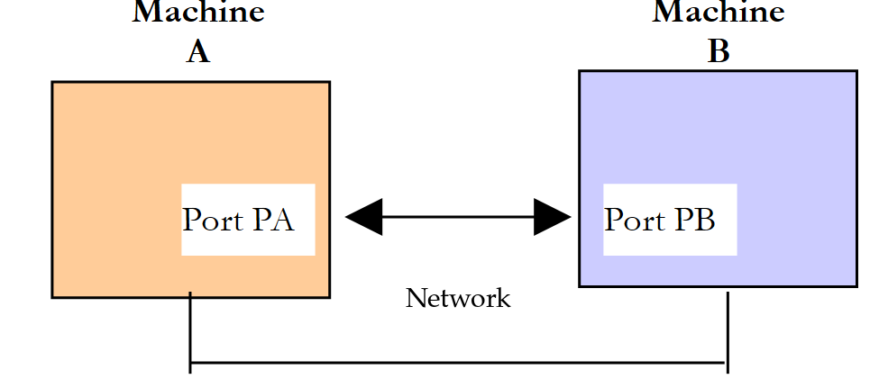
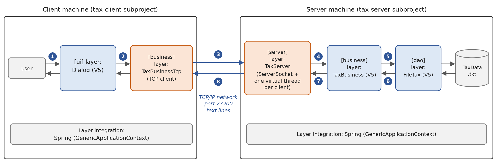

12. Webprogrammierung
12.1. Überblick
12.1.1. Internetprotokolle
Hier folgt eine Einführung in die Kommunikationsprotokolle des Internets, auch bekannt als TCP/IP-Protokollfamilie (Transmission Control Protocol / Internet Protocol), benannt nach den beiden wichtigsten Protokollen. Es ist für den Leser hilfreich, ein allgemeines Verständnis davon zu haben, wie Netzwerke funktionieren – insbesondere die TCP/IP-Protokolle –, bevor er sich an die Entwicklung verteilter Anwendungen wagt. Diese Darstellung beruht auf einem Text aus dem Administrationshandbuch „Lan Workplace for DOS“ von Novell (Anfang der 1990er Jahre), dessen Struktur und Geist sie beibehält und zugleich aktualisiert: Das Internet des Jahres 2026 ist nicht mehr ganz dasselbe wie das von 1990.
Das allgemeine Konzept, ein Netzwerk aus heterogenen Computern aufzubauen, geht auf Forschungen der DARPA (Defense Advanced Research Projects Agency) in den Vereinigten Staaten zurück. Die DARPA entwickelte die Protokollfamilie TCP/IP, die es heterogenen Maschinen ermöglicht, miteinander zu kommunizieren. Diese Protokolle wurden in einem Netzwerk namens ARPAnet erprobt, das später zum Internet wurde (ARPAnet führte TCP/IP am 1. Januar 1983 ein). Die TCP/IP-Protokolle definieren Formate und Regeln für Senden und Empfangen, die von der Netzwerkarchitektur und der verwendeten Hardware unabhängig sind.
Das von der DARPA entworfene und von den TCP/IP-Protokollen verwaltete Netzwerk ist ein paketvermitteltes Netzwerk. Ein solches Netzwerk überträgt Informationen in kleinen Einheiten, den sogenannten Paketen. Überträgt ein Computer also eine große Datei, wird sie in kleine Stücke zerlegt, die über das Netzwerk gesendet und am Ziel wieder zusammengesetzt werden. TCP/IP definiert das Format dieser Pakete, darunter insbesondere:
- die Quelle des Pakets;
- sein Ziel;
- seine Länge;
- sein Typ.
Die Internetprotokolle werden in öffentlichen Dokumenten beschrieben, den sogenannten RFC (Request for Comments), die von der IETF (Internet Engineering Task Force) veröffentlicht werden und unter www.rfc-editor.org verfügbar sind. Wir werden im Verlauf dieses Kapitels einige dieser Dokumente zitieren.
12.1.2. Das OSI-Modell
Die TCP/IP-Protokolle folgen im Großen und Ganzen dem offenen Netzwerkmodell namens OSI (Open Systems Interconnection Reference Model), das von der ISO (International Organization for Standardization) definiert wurde. Dieses Modell beschreibt ein ideales Netzwerk, in dem sich die Kommunikation zwischen Maschinen durch ein Sieben-Schichten-Modell darstellen lässt:

Jede Schicht erhält Dienste von der darunterliegenden Schicht und stellt der darüberliegenden Schicht ihre eigenen Dienste zur Verfügung. Angenommen, zwei Anwendungen auf verschiedenen Maschinen, A und B, wollen miteinander kommunizieren: Sie tun dies auf der Anwendungsschicht. Sie müssen nicht alle Einzelheiten der Funktionsweise des Netzwerks kennen: Jede Anwendung übergibt die Informationen, die sie senden möchte, an die darunterliegende Schicht, die Darstellungsschicht. Die Anwendung muss daher nur die Regeln für die Schnittstelle zur Darstellungsschicht kennen. Sobald sich die Informationen in der Darstellungsschicht befinden, werden sie nach anderen Regeln an die Sitzungsschicht weitergereicht und so weiter, bis die Informationen das physische Medium erreichen und physisch an die Zielmaschine übertragen werden. Dort durchlaufen sie den umgekehrten Prozess zu dem, den sie auf der sendenden Maschine durchlaufen haben.
In jeder Schicht sendet der für das Senden der Informationen zuständige Senderprozess diese an einen Empfängerprozess auf der anderen Maschine, der zur selben Schicht gehört. Dabei folgt er bestimmten Regeln, die als Protokoll der Schicht bezeichnet werden. Die tatsächliche Kommunikation läuft durch die Schichten von Maschine A abwärts, überquert das physische Netzwerk und läuft dann durch die Schichten von Maschine B aufwärts; jede Schicht nimmt jedoch an, direkt mit der entsprechenden Schicht auf der anderen Maschine zu kommunizieren.
Die Aufgaben der verschiedenen Schichten sind wie folgt:
Schicht | Aufgabe |
Bitübertragung | Sorgt für die Übertragung von Bits über ein physisches Medium (Kupferkabel, Glasfaserkabel, Funkwellen). Wichtige Aspekte auf dieser Ebene sind die Kodierung der Informationen in Signale und das Übertragungsverfahren. |
Sicherung | Abstrahiert die physischen Eigenschaften der Bitübertragungsschicht. Teilt die Informationen in Rahmen auf, erkennt (und korrigiert gelegentlich) Übertragungsfehler und regelt den Zugriff auf das gemeinsam genutzte Medium. |
Vermittlung | Verwaltet den Weg, den über das Netzwerk gesendete Informationen nehmen müssen. Man spricht von Routing: der Festlegung der Route, die Informationen nehmen müssen, um ihr Ziel zu erreichen. |
Transport | Ermöglicht die Kommunikation zwischen zwei Anwendungen, während die vorherigen Schichten nur die Kommunikation zwischen Maschinen erlaubten. Ein von dieser Schicht erbrachter Dienst ist das Multiplexing: Die Transportschicht nutzt eine einzige Netzwerkverbindung (von Maschine zu Maschine), um Daten zu übertragen, die zu mehreren Anwendungen gehören. |
Sitzung | Stellt Dienste bereit, mit denen eine Anwendung eine Arbeitssitzung auf einer entfernten Maschine öffnen und aufrechterhalten kann. |
Darstellung | Vereinheitlicht die Darstellung der Daten auf unterschiedlichen Maschinen. Die Daten von Maschine A werden von deren Darstellungsschicht nach einem Standardformat „formatiert“, bevor sie über das Netzwerk gesendet werden. Sobald sie die Darstellungsschicht der Zielmaschine B erreichen – die sie anhand ihres Standardformats erkennt –, werden die Daten so umformatiert, dass die Anwendung auf Maschine B sie erkennen kann. |
Anwendung | Auf dieser Ebene befinden sich Anwendungen, die in der Regel nah am Benutzer sind, etwa E-Mail, das Web oder die Dateiübertragung. |
12.1.3. Das TCP/IP-Modell
Das OSI-Modell ist ein Referenzmodell, das nie unverändert umgesetzt wurde. Die TCP/IP-Protokollfamilie, die zum Standard geworden ist, ist in nur vier Schichten gegliedert:

Die Sitzungs- und die Darstellungsschicht gibt es in TCP/IP als solche nicht: Ihre Funktionen werden, sofern erforderlich, von den Anwendungen selbst oder von Zwischenprotokollen wie TLS (Verschlüsselung des Datenaustauschs) übernommen, das zwischen TCP und die Anwendung eingefügt wird.
Die Netzzugangsschicht
In lokalen Netzwerken ist die heute vorherrschende Technologie Ethernet für drahtgebundene Verbindungen und WLAN (IEEE-802.11-Standards) für drahtlose Verbindungen. Andere Technologien wie Token Ring sind inzwischen verschwunden.
Ethernet ist der Name einer paketvermittelten Technologie für lokale Netzwerke, die Anfang der 1970er Jahre bei Xerox erfunden und 1980 von Xerox, Intel und Digital Equipment sowie später vom IEEE (Standard 802.3) standardisiert wurde. Das ursprüngliche Ethernet bestand aus einem Koaxialkabel, an das alle Maschinen angeschlossen waren (Bustopologie), mit einer Datenrate von 10 Megabit pro Sekunde:

Es war ein Broadcast-Netzwerk: Eine sendende Maschine schickte Informationen über das Kabel, die die Adresse der Zielmaschine enthielten; alle angeschlossenen Maschinen empfingen sie, und nur der vorgesehene Empfänger behielt sie. Da mehrere Maschinen gleichzeitig senden konnten, mussten Kollisionen erkannt werden: Das war das Zugriffsverfahren CSMA/CD (Carrier Sense Multiple Access / Collision Detect). Jeder Sender hörte vor dem Senden das Kabel ab (CSMA) und überprüfte beim Senden, ob das, was über das Kabel lief, tatsächlich dem entsprach, was er gesendet hatte; war das nicht der Fall, lag eine Kollision vor (CD): Alle beendeten ihre Übertragung und versuchten es nach einer zufälligen Wartezeit erneut.
Das moderne Ethernet hat sich stark weiterentwickelt: Die Geräte sind über Twisted-Pair-Kabel oder Glasfaserkabel an einen Switch angeschlossen, der jeden Rahmen an den spezifischen Port des Empfängers weiterleitet. Die Verbindungen sind Vollduplex (gleichzeitiges Senden und Empfangen): Es gibt keine Kollisionen mehr, und CSMA/CD ist obsolet geworden. Typische Datenraten liegen zwischen 1 und 10 Gigabit pro Sekunde, in Rechenzentren deutlich darüber.
Unverändert geblieben ist die 48-Bit-Adressierung: Jede Netzwerkkarte hat eine Adresse, die physische Adresse oder MAC-Adresse (Media Access Control) genannt wird und im Allgemeinen als sechs hexadezimale Bytes geschrieben wird (zum Beispiel [00:1A:2B:3C:4D:5E]). Sie wird vom Hersteller in die Karte programmiert, lässt sich aber – entgegen lange verbreiteter Behauptungen – per Software ändern: Moderne Betriebssysteme verwenden in WLAN-Netzwerken sogar zufällige MAC-Adressen, um zu verhindern, dass ein Gerät von Netzwerk zu Netzwerk verfolgt werden kann.
Die Internetschicht (Vermittlungsschicht)
Auf dieser Schicht finden sich die folgenden Protokolle:
Protokoll | Aufgabe |
IP (Internet Protocol) | liefert Pakete zwischen zwei Netzwerkknoten aus, in Version 4 (IPv4) oder 6 (IPv6) |
ICMP (Internet Control Message Protocol) | erleichtert die Kommunikation zwischen dem Programm des IP-Protokolls auf einer Maschine und dem auf einer anderen Maschine. Es ist also ein Protokoll zum Austausch von Steuernachrichten innerhalb des IP-Protokolls selbst |
ARP (Address Resolution Protocol) | ordnet die IP-Adresse einer Maschine der physischen Adresse der Maschine zu (in IPv6 übernimmt diese Aufgabe das Protokoll NDP, das Neighbor Discovery Protocol) |
Manchmal wird auch RARP (Reverse Address Resolution Protocol) erwähnt, das die umgekehrte Zuordnung vornahm. Es ist seit Langem zugunsten von DHCP veraltet, das wir später behandeln.
Die Transportschicht
Diese Schicht umfasst die folgenden Protokolle:
Protokoll | Aufgabe |
TCP (Transmission Control Protocol) | gewährleistet die zuverlässige und geordnete Übermittlung von Informationen zwischen zwei Anwendungen |
UDP (User Datagram Protocol) | gewährleistet die unzuverlässige Übermittlung von Informationen zwischen zwei Anwendungen |
Das Protokoll QUIC (2021), auf dem HTTP/3 beruht, ist ein zuverlässiges, verschlüsseltes Transportprotokoll, das auf UDP aufsetzt.
Die Anwendungsschicht
Hier finden sich verschiedene Protokolle, die wir etwas weiter unten näher erläutern:
Protokoll | Aufgabe |
HTTP, HTTPS (HyperText Transfer Protocol) | Das Protokoll des Webs: Ein Client (Browser, Anwendung) fordert Ressourcen von einem Webserver an. HTTPS ist HTTP, verschlüsselt mit TLS |
DNS (Domain Name System) | wandelt einen Hostnamen in eine IP-Adresse um |
SMTP (Simple Mail Transfer Protocol) | ermöglicht das Senden von E-Mails |
POP3, IMAP | ermöglichen das Lesen von E-Mails, die auf einem Server gespeichert sind |
SSH (Secure Shell) | ermöglicht es, sich mit einer entfernten Maschine zu verbinden und darauf Befehle verschlüsselt auszuführen. Es hat TELNET ersetzt, das dieselbe Funktion ohne Verschlüsselung erfüllte |
FTP (File Transfer Protocol), SFTP | ermöglichen Dateiübertragungen |
DHCP (Dynamic Host Configuration Protocol) | ermöglicht es einer Maschine, automatisch ihre IP-Adresse und ihre Netzwerkkonfiguration zu erhalten |
12.1.4. Funktionsweise der Internetprotokolle
Anwendungen, die in der TCP/IP-Umgebung entwickelt werden, verwenden in der Regel mehrere der Protokolle dieser Umgebung. Ein Anwendungsprogramm kommuniziert mit der höchsten Schicht der Protokolle. Diese Schicht reicht die Informationen an die darunterliegende Schicht weiter und so fort, bis das physische Medium erreicht ist. Dort werden die Informationen physisch zur Empfängermaschine übertragen, wo sie dieselben Schichten erneut durchlaufen – diesmal in umgekehrter Reihenfolge –, bis sie die Anwendung erreichen, die der vorgesehene Empfänger der gesendeten Informationen ist. Das folgende Diagramm zeigt den Weg der Informationen:

Betrachten wir ein Beispiel: eine Anwendung, die mit TCP eine Datei an eine andere Maschine sendet.
- Die Anwendung übergibt der Transportschicht eine Folge von zu übertragenden Bytes;
- die Transportschicht teilt diese Bytefolge in TCP-Segmente auf und fügt am Anfang jedes Segments einen Header hinzu, der unter anderem die Portnummern von Quelle und Ziel sowie eine Sequenznummer enthält. Die Segmente werden an die Vermittlungsschicht weitergereicht, die vom IP-Protokoll gesteuert wird;
- Die IP-Schicht erzeugt ein Paket, das das empfangene TCP-Segment kapselt. In den Header dieses Pakets trägt sie die IP-Adressen der Quell- und der Zielmaschine ein. Außerdem ermittelt sie die physische Adresse der Maschine, an die das Paket ausgeliefert werden soll (die Zielmaschine selbst oder ein Router). Das gesamte Paket wird an die Netzzugangsschicht weitergereicht, das heißt an die Netzwerkkarte, die die Maschine mit dem physischen Netzwerk verbindet;
- dort wird das IP-Paket seinerseits in einen physischen Rahmen gekapselt und über das Medium an seinen Empfänger gesendet;
- Auf der Zielmaschine führt die Netzzugangsschicht den umgekehrten Vorgang durch: Sie entkapselt das IP-Paket aus dem physischen Rahmen und reicht es an die IP-Schicht weiter;
- die IP-Schicht prüft, ob das Paket gültig ist: Sie berechnet eine Prüfsumme seines Headers, die sie im Header des Pakets wiederfinden muss. Ist das nicht der Fall, wird das Paket verworfen;
- wird das Paket als gültig erachtet, entkapselt die IP-Schicht das darin enthaltene TCP-Segment und reicht es nach oben an die Transportschicht weiter;
- die TCP-Schicht prüft ebenfalls eine Prüfsumme des Segments. Ist sie korrekt, sendet sie der Quellmaschine eine Bestätigung; andernfalls wird das Segment ignoriert (und von der Quelle erneut gesendet);
- Anhand der Sequenznummern bringt die TCP-Schicht die Segmente in die richtige Reihenfolge;
- der TCP-Schicht bleibt nur noch, den Datenteil der Segmente an die Zielanwendung zu übergeben, die anhand der Zielportnummer identifiziert wird.
12.1.5. Adressierungsprobleme im Internet
Ein Netzwerkknoten kann ein Computer, ein Drucker, ein Telefon, ein vernetztes Gerät sein – tatsächlich alles, was über die TCP/IP-Protokolle kommunizieren kann. Jeder Knoten hat eine physische Adresse, deren Format vom Netzwerktyp abhängt. In einem Ethernet- oder WLAN-Netzwerk wird die physische Adresse mit 6 Bytes kodiert.
Die Internetadresse (IP) eines Knotens ist eine logische Adresse: Sie ist unabhängig von der Hardware und dem verwendeten Netzwerk. In IPv4 ist sie eine 4-Byte-Adresse, die sowohl ein Netzwerk als auch einen Knoten in diesem Netzwerk identifiziert. Sie wird üblicherweise als vier Zahlen – die Werte der vier Bytes – dargestellt, die durch einen Punkt getrennt sind. Beispielsweise lautete die Adresse der Maschine namens „Lagaffe“ an der Faculté des Sciences in Angers lange 193.49.144.1 und die der Maschine namens „Liny“ 193.49.144.9. Daraus ließ sich ableiten, dass die Adresse des lokalen Netzwerks 193.49.144.0 war und dass es in diesem Netzwerk bis zu 254 Knoten geben konnte.
Da IP-Adressen unabhängig vom physischen Netzwerk sind, kann eine Maschine in Netzwerk A mit einer Maschine in Netzwerk B kommunizieren, ohne sich darum zu kümmern, an welchem Netzwerktyp Letztere hängt: Sie muss lediglich ihre IP-Adresse kennen. Das IP-Protokoll in jedem Netzwerk übernimmt die Umwandlung zwischen IP-Adressen und physischen Adressen in beide Richtungen.
Alle öffentlichen IP-Adressen müssen eindeutig sein. Ihre Vergabe folgt einer hierarchischen Struktur: Die IANA (Internet Assigned Numbers Authority) verteilt Adressblöcke an fünf regionale Registrierungsstellen, darunter das RIPE NCC für Europa, die sie an Betreiber und große Organisationen weiterverteilen. Diese Stellen weisen sie dann ihren Kunden zu. Der Administrator eines Netzwerks, das den Block 193.49.144.0 bis 193.49.144.255 erhalten hat, kann die Adressen 193.49.144.1 bis 193.49.144.254 nach eigenem Ermessen vergeben. In Frankreich war lange das INRIA für die Vergabe von Adressen zuständig; das ist schon seit geraumer Zeit nicht mehr der Fall.
12.1.5.1. Die IP-Adressklassen und die CIDR-Notation
Eine IPv4-Adresse ist eine Folge von 4 Bytes, geschrieben als I1.I2.I3.I4, die tatsächlich zwei Informationen enthält:
- die Netzwerkadresse (die höchstwertigen Bits);
- die Adresse eines Knotens innerhalb dieses Netzwerks (die niedrigstwertigen Bits).
Ursprünglich wurde die Größe dieser beiden Felder durch den Wert des ersten Bytes bestimmt. IP-Adressen wurden in drei Hauptklassen eingeteilt:
Klasse | Erstes Byte | Netzwerk / Knoten | Anzahl der Netzwerke und Knoten |
A | 1 bis 126 (höchstwertiges Bit 0) | R1.N1.N2.N3: 1-Byte-Netzwerk (7 signifikante Bits), 3-Byte-Knoten | 126 Netzwerke mit je 2²⁴ - 2 Knoten (etwa 16 Millionen) |
B | 128 bis 191 (höchstwertige 10 Bits) | R1.R2.N1.N2: 2-Byte-Netzwerk (14 signifikante Bits), 2-Byte-Knoten | 2¹⁴ = 16.384 Netzwerke mit je 2¹⁶ - 2 = 65.534 Knoten |
C | 192 bis 223 (höchstwertige 110 Bits) | R1.R2.R3.N1: 3-Byte-Netzwerk (21 signifikante Bits), 1-Byte-Knoten | 2²¹ Netzwerke (etwa 2 Millionen) mit je 254 Knoten |
Da die Adresse der Maschine Lagaffe 193.49.144.1 lautet, ist das höchstwertige Byte 193, binär 11000001: Das Netzwerk war ein Netzwerk der Klasse C.
Diese Klasseneinteilung erwies sich als viel zu starr: Eine Organisation mit 300 Maschinen musste ein Netzwerk der Klasse B verwenden und verschwendete damit mehr als 65.000 Adressen. Seit 1993 (RFC 1518 und 1519) wurden die Klassen zugunsten des klassenlosen Routings (CIDR, Classless Inter-Domain Routing) aufgegeben. Die Grenze zwischen Netzwerkteil und Hostteil kann an jedem beliebigen Bit liegen; sie wird durch die Länge des Netzwerkpräfixes nach einem Schrägstrich angegeben:
- 193.49.144.0/24: Die ersten 24 Bits bezeichnen das Netzwerk und die letzten 8 Bits den Knoten. Dieses Netzwerk enthält die Adressen 193.49.144.0 bis 193.49.144.255;
- 10.0.0.0/8: ein Netzwerk mit 2²⁴ Adressen;
- 192.168.1.0/26: ein Netzwerk mit 2⁶ = 64 Adressen, von 192.168.1.0 bis 192.168.1.63.
Die alte Notation der Subnetzmaske wird weiterhin verwendet und drückt dasselbe aus: Das Präfix /24 entspricht der Maske 255.255.255.0. Die Begriffe „Klasse A, B, C“ sind weiterhin gebräuchlich, entsprechen aber keinem tatsächlichen Mechanismus mehr.
12.1.5.2. Reservierte Adressen, private Adressen und NAT
Bestimmte Adressen haben einen besonderen Zweck:
- Eine Adresse, deren Hostteil ausschließlich aus Nullen besteht, bezeichnet das Netzwerk selbst: 193.49.144.0 ist die Adresse des Netzwerks 193.49.144.0/24;
- eine Adresse, deren Hostteil ausschließlich aus Einsen besteht, ist eine Broadcast-Adresse: 193.49.144.255 bezeichnet alle Hosts des Netzwerks 193.49.144.0/24. Diese beiden Adressen können daher keinem Knoten zugewiesen werden: Ein /24-Netzwerk mit 256 Adressen bietet nur 254 nutzbare Adressen;
- die Adressen 127.0.0.0/8, und praktisch 127.0.0.1, sind Loopback-Adressen: Eine Maschine verwendet sie, um sich selbst zu bezeichnen, ohne das Netzwerk zu durchlaufen. Der Name [localhost] ist ihnen zugeordnet;
- die Blöcke 10.0.0.0/8, 172.16.0.0/12 und 192.168.0.0/16 (RFC 1918) sind für private Netzwerke reserviert: Sie können innerhalb eines Unternehmens oder eines Haushalts frei verwendet werden, werden aber im Internet nicht geroutet;
- die Blöcke 192.0.2.0/24, 198.51.100.0/24 und 203.0.113.0/24 (RFC 5737) sind für Dokumentation und Beispiele reserviert.
Die Anzahl der IPv4-Adressen (2³², knapp über 4 Milliarden) reicht für alle vernetzten Maschinen nicht aus. Der zentrale Adresspool der IANA war 2011 erschöpft, die des RIPE NCC 2019. Der Mangel wurde durch Network Address Translation (NAT) umgangen: Die Geräte in einem Haushalt haben private Adressen (etwa 192.168.1.x), und der Router, der sie mit dem Internet verbindet, „übersetzt“ sie in seine eigene eindeutige öffentliche Adresse. Die langfristige Lösung ist IPv6.
12.1.5.3. Die IPv6-Adressen
IPv6 (RFC 2460 im Jahr 1998, heute RFC 8200) kodiert Adressen mit 128 Bits und bietet damit 2¹²⁸ mögliche Adressen – etwa 3,4 × 10³⁸ –, sodass man sich über einen Mangel keine Sorgen mehr machen muss. Eine IPv6-Adresse wird als acht Gruppen aus vier hexadezimalen Ziffern geschrieben, die durch Doppelpunkte getrennt sind:
Führende Nullen in jeder Gruppe können weggelassen werden, und eine einzige Folge von Null-Gruppen kann durch [::] ersetzt werden. Die vorherige Adresse wird daher als [2001:db8::8a2e:0:370:7334] geschrieben. Die Loopback-Adresse, das Äquivalent zu 127.0.0.1, ist [::1]. In einer URL wird die IPv6-Adresse in eckige Klammern gesetzt, damit ihre Doppelpunkte nicht mit dem Doppelpunkt vor dem Port verwechselt werden: [http://[::1]:8080/].
IPv6 bringt weitere Vereinfachungen: Der Paket-Header hat eine feste Länge, die automatische Adresskonfiguration ist standardmäßig eingebaut, und die Adressumsetzung per NAT ist nicht mehr nötig. Die Verbreitung verlief schleppend, doch ein erheblicher und wachsender Teil des Internetverkehrs läuft inzwischen über IPv6 (Google veröffentlicht zum Beispiel den Anteil seiner Nutzer, die per IPv6 darauf zugreifen), und die großen französischen Internetanbieter stellen es ihren Kunden bereit. Beide Versionen existieren nebeneinander: Die meisten Maschinen haben sowohl IPv4- als auch IPv6-Adressen (man spricht von „Dual Stack“), und Programme müssen beide verarbeiten können.
12.1.5.4. Protokolle zur Umwandlung zwischen IP-Adressen und physischen Adressen
Wir haben gesehen, dass Daten bei der Übertragung von einer Maschine zur anderen auf dem Weg durch die IP-Schicht in Pakete gekapselt werden. Diese Pakete haben die folgende Form:

Das IP-Paket enthält also die IP-Adressen der Quell- und der Zielmaschine. Wird dieses Paket an die Schicht weitergegeben, die für das Senden über das physische Netzwerk zuständig ist, werden zusätzliche Informationen hinzugefügt, die den physischen Rahmen bilden, der schließlich über das Netzwerk gesendet wird. Beispielsweise hat ein Rahmen in einem Ethernet-Netzwerk das folgende Format:

Die ersten 8 Bytes (Präambel) dienen der Synchronisierung; das 2-Byte-Feld vor den Daten gibt in der gebräuchlichsten Form des Ethernet-Rahmens den Typ des transportierten Protokolls an (IPv4, IPv6, ARP ...) und nicht die Paketlänge. Im endgültigen Rahmen sind die physischen Adressen der Quell- und der Zielmaschine enthalten (im tatsächlichen Rahmen steht die Zieladresse vor der Quelladresse, anders als in der Reihenfolge im Diagramm). Wie erhält man sie?
Die sendende Maschine, die die IP-Adresse der Maschine kennt, mit der sie kommunizieren möchte, ermittelt deren physische Adresse mit dem Protokoll ARP (Address Resolution Protocol):
- Sie sendet ein spezielles Paket, ein sogenanntes ARP-Paket, das die IP-Adresse der Maschine enthält, deren physische Adresse gesucht wird. Es enthält außerdem ihre eigene IP-Adresse sowie ihre physische Adresse;
- dieses Paket wird an alle Knoten des lokalen Netzwerks gesendet (Broadcast);
- diese Knoten erkennen die Besonderheit des Pakets. Der Knoten, der seine IP-Adresse im Paket erkennt, antwortet, indem er dem Absender seine physische Adresse sendet. Das kann er, weil er die IP-Adresse und die physische Adresse des Absenders im Paket gefunden hat;
- Der Absender erhält somit die gesuchte physische Adresse. Er speichert sie in einem Cache, um sie später verwenden zu können, falls weitere Pakete an denselben Empfänger gesendet werden müssen.
In IPv6 wird derselbe Dienst vom Protokoll NDP (Neighbor Discovery Protocol) erbracht, das auf ICMPv6-Nachrichten beruht.
Es bleibt die Frage: Woher kennt eine Maschine ihre eigene IP-Adresse? Sie kann in einer Konfigurationsdatei auf der Maschine angegeben werden – bei Servern ist das weiterhin üblich. Muss ein Administrator das Netzwerk jedoch neu organisieren, ist es mühsam und fehleranfällig, die Konfigurationsdateien aller Maschinen einzeln zu ändern. Das Protokoll RARP erlaubte es einer Maschine früher, ihre IP-Adresse anhand ihrer physischen Adresse bei einem Server zu erfragen. Es wurde durch DHCP (Dynamic Host Configuration Protocol, RFC 2131) ersetzt: Beim Start sendet die Maschine per Broadcast eine Anfrage ins Netzwerk; ein Server (etwa ein Router im Haushalt oder ein dedizierter Server in einem Unternehmen) weist ihr für begrenzte Zeit eine Adresse zu (einen Lease), zusammen mit dem Rest ihrer Konfiguration: Netzwerkpräfix, Routeradresse und Adressen der DNS-Server. Der Administrator muss dann lediglich den DHCP-Server konfigurieren. In IPv6 kann eine Maschine ihre Adresse auch selbst anhand des vom Router bekannt gegebenen Präfixes bilden (Autokonfiguration per SLAAC).
12.1.6. Die Vermittlungsschicht, die IP-Schicht des Internets
Das IP-Protokoll definiert das Format, das Pakete haben müssen, und wie sie beim Senden oder Empfangen zu behandeln sind. Diese besondere Art von Paket wird IP-Datagramm genannt. Wir haben es bereits besprochen:
Wichtig ist, dass das IP-Datagramm neben den zu übertragenden Daten die IP-Adressen der Quell- und der Zielmaschine enthält. So weiß die Zielmaschine, wer ihr eine Nachricht sendet.
Anders als die Länge eines Netzwerkrahmens, die von den physischen Eigenschaften des durchlaufenen Netzwerks bestimmt wird, wird die Länge des IP-Datagramms von der Software festgelegt und ist daher in verschiedenen physischen Netzwerken gleich. Wir haben gesehen, dass das IP-Datagramm beim Abstieg von der Vermittlungsschicht zur Bitübertragungsschicht in einen physischen Rahmen gekapselt wird.
Physische Rahmen wandern von Knoten zu Knoten in Richtung ihres Ziels, das nicht im selben physischen Netzwerk wie die sendende Maschine liegen muss. Das IP-Paket kann daher an den Knoten, die zwei Netzwerke unterschiedlichen Typs verbinden, nacheinander in verschiedene physische Rahmen gekapselt werden. Es ist auch möglich, dass das IP-Paket zu groß ist, um in einen physischen Rahmen gekapselt zu werden (die Nutzlast eines Ethernet-Rahmens ist auf 1.500 Bytes begrenzt). In IPv4 teilt der Knoten, an dem dieses Problem auftritt, das IP-Paket in Fragmente auf, die erst am endgültigen Ziel wieder zusammengesetzt werden. In IPv6 fragmentieren Router Pakete nicht mehr: Der Absender muss die maximal auf dem Pfad akzeptierte Größe ermitteln und die Größe seiner Pakete entsprechend anpassen.
12.1.6.1. Routing
Routing ist das Verfahren, IP-Pakete zu ihrem Ziel zu lenken. Es gibt zwei Methoden: direktes Routing und indirektes Routing.
Direktes Routing
Direktes Routing bezeichnet die direkte Übertragung eines IP-Pakets vom Absender zum Empfänger innerhalb desselben Netzwerks:
- Die Maschine, die ein IP-Datagramm sendet, kennt die IP-Adresse des Empfängers;
- sie ermittelt die physische Adresse des Empfängers über das Protokoll ARP oder aus ihrem Cache, falls diese Adresse bereits ermittelt wurde;
- sie sendet das Paket über das Netzwerk an diese physische Adresse.
Indirektes Routing
Indirektes Routing bezeichnet die Übertragung eines IP-Pakets an ein Ziel in einem anderen Netzwerk als dem, zu dem der Absender gehört. In diesem Fall unterscheiden sich die „Netzwerk“-Anteile der IP-Adressen von Quell- und Zielmaschine; die Quellmaschine erkennt das, indem sie die Zieladresse mit ihrem eigenen Netzwerkpräfix vergleicht. Sie sendet das Paket dann an einen besonderen Knoten, den Router, der das lokale Netzwerk mit anderen Netzwerken verbindet und dessen IP-Adresse der Quellmaschine bekannt ist (man nennt ihn das Standard-Gateway; es wird in der Regel per DHCP bereitgestellt). Ein Router ist mit mindestens zwei Netzwerken verbunden und hat in jedem von ihnen eine IP-Adresse:

In unserem obigen Beispiel:
- Netzwerk Nr. 1 hat die Adresse 193.49.144.0/24 und Netzwerk Nr. 2 die Adresse 193.49.145.0/24;
- innerhalb von Netzwerk Nr. 1 hat der Router die Adresse 193.49.144.6, innerhalb von Netzwerk Nr. 2 die Adresse 193.49.145.3.
Die Aufgabe des Routers besteht darin, das IP-Paket, das er empfängt – enthalten in einem physischen Frame aus Netzwerk Nr. 1 –, in einen physischen Frame zu packen, der über Netzwerk Nr. 2 übertragen werden kann. Liegt die IP-Adresse des Paketziels in Netzwerk Nr. 2, sendet der Router das Paket direkt dorthin; andernfalls leitet er es an einen weiteren Router weiter, der Netzwerk Nr. 2 mit Netzwerk Nr. 3 verbindet, und so weiter. Die Router im Internet tauschen ständig Informationen über die Netzwerke aus, die sie erreichen können (Routing-Protokolle wie BGP zwischen Betreibern), um ihre Routing-Tabellen aufzubauen.
12.1.6.2. Fehler- und Kontrollmeldungen
Ebenfalls in der Netzwerkschicht – und damit auf derselben Ebene wie das IP-Protokoll – befindet sich das ICMP-Protokoll (Internet Control Message Protocol). Es dient dazu, Meldungen über den internen Betrieb des Netzwerks zu senden: nicht erreichbarer Knoten, Paket hat zu viele Router durchlaufen usw. ICMP-Meldungen werden in IP-Pakete gekapselt und über das Netzwerk gesendet. Die IP-Schichten der verschiedenen Knoten ergreifen anhand der empfangenen ICMP-Meldungen die geeigneten Maßnahmen. Eine Anwendung bekommt diese netzwerkspezifischen Probleme daher selbst nie zu sehen. Die [ping]-Befehle (die ICMP-„Echo Request“-Nachrichten senden und auf „Echo Reply“-Nachrichten warten) und [traceroute] / [tracert] (der die durchlaufenen Router anzeigt) basieren auf ICMP.
12.1.7. Die Transportschicht: die Protokolle UDP und TCP
12.1.7.1. Das UDP-Protokoll: User Datagram Protocol
Das UDP-Protokoll ermöglicht einen unzuverlässigen Datenaustausch zwischen zwei Punkten; das bedeutet, dass weder die erfolgreiche Zustellung eines Pakets an sein Ziel noch die Reihenfolge, in der die Pakete eintreffen, garantiert ist. Die Anwendung kann sich, wenn sie möchte, selbst darum kümmern – zum Beispiel, indem sie nach dem Senden einer Nachricht auf eine Bestätigung wartet, bevor sie die nächste sendet.
Bisher haben wir auf Netzwerkebene von Rechneradressen wie IP gesprochen. Auf einem einzelnen Rechner können jedoch gleichzeitig verschiedene Prozesse nebeneinander existieren, die alle miteinander kommunizieren können. Beim Senden einer Nachricht muss man daher nicht nur die IP-Adresse des Zielrechners angeben, sondern auch den „Namen“ des Zielprozesses. Dieser Name ist tatsächlich eine 16-Bit-Zahl (von 1 bis 65.535), die als Portnummer bezeichnet wird. Bestimmte Nummern sind für Standardanwendungen reserviert: Port 53 für DNS, 80 für HTTP, 443 für HTTPS, 25 für SMTP usw. Ports unterhalb von 1024 gelten als „well-known“; unter Linux sind besondere Rechte erforderlich, um einen Dienst auf einem von ihnen zu starten. Die Beispiele in diesem Kapitel verwenden Ports aus den Bereichen 27100–27199 und 27200–27299.
Pakete, die vom UDP-Protokoll verarbeitet werden, heißen Datagramme. Sie haben die folgende Form:

Diese Datagramme werden in IP-Pakete und anschließend in physische Frames gekapselt. UDP wird verwendet, wenn Geschwindigkeit wichtiger ist als Zuverlässigkeit oder wenn die Anwendung Verluste selbst behandelt: DNS (eine Frage, eine Antwort), Live-Audio- und -Videostreaming, Online-Spiele und das QUIC-Protokoll von HTTP/3.
12.1.7.2. Das TCP-Protokoll: Transmission Control Protocol
Für sichere Kommunikation reicht das UDP-Protokoll nicht aus: Der Anwendungsentwickler müsste selbst ein Protokoll erstellen, um zu überprüfen, ob die Pakete korrekt zugestellt werden. Das TCP-Protokoll vermeidet diese Probleme. Seine Eigenschaften sind die folgenden:
- Der Prozess, der Daten übertragen möchte, baut zunächst eine Verbindung zu dem Prozess auf, der die Informationen empfangen soll. Diese Verbindung wird zwischen einem Port auf dem sendenden Rechner und einem Port auf dem empfangenden Rechner durch den Austausch von drei Segmenten (SYN, SYN-ACK, ACK: der „Dreiwege-Handshake“) aufgebaut. Damit entsteht zwischen den beiden Ports ein virtueller Kanal, der ausschließlich für die beiden Prozesse reserviert ist, die die Verbindung aufgebaut haben;
- alle vom Quellprozess übertragenen Bytes kommen in der Reihenfolge, in der sie gesendet wurden, an ihrem Ziel an; das garantiert das UDP-Protokoll nicht, da Pakete unterschiedliche Wege nehmen können;
- Die übertragenen Informationen sind kontinuierlich: Es handelt sich um einen Bytestrom. Der sendende Prozess überträgt Informationen in seinem eigenen Tempo. Diese Informationen werden nicht unbedingt sofort gesendet: Das TCP-Protokoll kann warten, bis genügend Daten zum Senden vorliegen. Die Daten werden in eine Struktur gelegt, die als TCP-Segment bezeichnet wird. Ist dieses Segment gefüllt, wird es an die IP-Schicht weitergegeben, wo es in ein IP-Paket gekapselt wird. Eine wichtige Konsequenz für den Programmierer: Eine „Zeile“, die auf einmal gesendet wurde, kann in mehreren Teilen ankommen, und mehrere Zeilen können gemeinsam eintreffen. Es ist Sache der Anwendung, die Grenzen ihrer Nachrichten zu erkennen (wir verwenden dafür das Zeilenende-Zeichen);
- Jedes vom TCP-Protokoll gesendete Segment wird nummeriert. Das empfangende TCP-Protokoll prüft, ob es die Segmente der Reihe nach erhält. Für jedes korrekt empfangene Segment sendet es dem Absender eine Bestätigung;
- Erhält das TCP-Protokoll, das ein Segment gesendet hat, nach einer gewissen Zeit keine Bestätigung, überträgt es das betreffende Segment erneut und gewährleistet so die Qualität des Informationszustelldienstes;
- Der zwischen den beiden kommunizierenden Prozessen aufgebaute virtuelle Kanal ist vollduplex: Informationen können gleichzeitig in beide Richtungen fließen. So kann der Zielprozess Bestätigungen senden, während der Quellprozess weiter Informationen sendet. Dadurch kann das TCP-Protokoll der Quelle zum Beispiel mehrere Segmente senden, ohne auf Bestätigungen zu warten. Stellt es nach einer gewissen Zeit fest, dass es für ein bestimmtes Segment Nr. n keine Bestätigung erhalten hat, setzt es die Übertragung der Segmente ab dieser Stelle fort;
- TCP regelt außerdem seine Datenrate, um weder den Empfänger (Flusskontrolle) noch das Netzwerk (Überlastkontrolle) zu überlasten.
12.1.8. Die Anwendungsschicht
Oberhalb der Protokolle UDP und TCP befinden sich verschiedene Standardprotokolle:
TELNET und SSH
TELNET ermöglicht es einem Benutzer an Rechner A, sich mit Rechner B (oft als Hostrechner bezeichnet) zu verbinden, als hätte er ein an diesen Rechner angeschlossenes Terminal. TELNET basiert auf TCP. Seine Datenübertragungen, einschließlich der Passwörter, erfolgen im Klartext: Es wurde durch SSH (Secure Shell) ersetzt, das denselben Dienst verschlüsselt bereitstellt und außerdem für die sichere Dateiübertragung (SFTP, SCP) und zum Aufbau von Tunneln dient. Das [telnet]-Clientprogramm war lange Zeit ein praktisches Werkzeug, um „manuell“ mit einem TCP-Server zu kommunizieren: Wir werden sehen, wie man es ersetzt.
FTP (File Transfer Protocol)
Dieses Protokoll ermöglicht den Austausch von Dateien zwischen zwei entfernten Rechnern sowie Dateioperationen wie das Anlegen von Verzeichnissen. Es basiert auf dem TCP-Protokoll. Wie TELNET überträgt es Passwörter im Klartext; es wird zugunsten von SFTP und HTTPS abgelöst.
TFTP (Trivial File Transfer Protocol)
Dieses Protokoll ist eine vereinfachte Variante von FTP. Es basiert auf dem UDP-Protokoll. Es wird noch immer verwendet, um Rechner über das Netzwerk zu booten.
DNS (Domain Name System)
Wenn ein Benutzer Informationen mit einem entfernten Rechner austauschen möchte, muss er dessen IP-Adresse kennen. Es ist wesentlich bequemer, einen Rechner mit einem Namen statt mit seiner IP-Adresse zu bezeichnen. Dabei stellt sich das Problem der Eindeutigkeit der Namen: Es gibt Milliarden miteinander verbundener Rechner. Man könnte sich eine zentrale Instanz vorstellen, die die Namen vergibt, doch das wäre sehr schwerfällig. Die Kontrolle über die Namen wurde daher auf Domains verteilt. Jede Domain wird von einer Organisation verwaltet, die bei der Wahl der Namen innerhalb ihrer Domain völlig frei ist. So gehören Rechner in Frankreich häufig zur Domain [fr], die von der AFNIC verwaltet wird (bis zur Gründung der AFNIC im Jahr 1997 verwaltete INRIA sie). Um die Dinge weiter zu vereinfachen, wird die Kontrolle noch weiter dezentralisiert: Innerhalb der Domain [fr] werden weitere Domains angelegt. So besitzt zum Beispiel die Universität Angers die Domain [univ-angers.fr]; die Abteilung, die sie verwaltet, kann die Rechner im Netzwerk der Universität völlig frei benennen und Subdomains anlegen.
Der vollständige Name eines Rechners (FQDN, Fully Qualified Domain Name) gibt die Hierarchie der Domains an, zu denen er gehört, vom Spezifischsten zum Allgemeinsten: [www.univ-angers.fr]. Innerhalb einer Domain können häufig relative Namen verwendet werden, die vom System automatisch ergänzt werden.
Eine Anwendung kann einen Rechner also über seinen Namen ansprechen. Letztlich muss jedoch trotzdem die IP-Adresse dieses Rechners ermittelt werden. Angenommen, Sie möchten von Rechner A aus mit Rechner B kommunizieren:
- Rechner A prüft zunächst eine lokale Zuordnungsdatei ([/etc/hosts] unter Linux und macOS, [C:\Windows\System32\drivers\etc\hosts] unter Windows) und dann seinen Cache;
- andernfalls fragt er den DNS-Server ab, dessen Adresse in seiner Konfiguration steht (in der Regel per DHCP zugewiesen). Er sendet eine DNS-Anfrage, die den Namen des gesuchten Rechners enthält. Kennt der abgefragte Server die Antwort oder hat er sie im Cache, liefert er die zugehörige IP-Adresse an Rechner A zurück. Andernfalls fragt er seinerseits – ausgehend von den Root-Servern – die Server ab, die für die Domain [fr] zuständig sind, dann für [univ-angers.fr] und so weiter, bis er die Antwort erhält, die dann an Rechner A zurückgereicht wird.
Die DNS-Domain ordnet einem Namen verschiedene Arten von Einträgen zu: A (IPv4-Adresse), AAAA (IPv6-Adresse), CNAME (Alias auf einen anderen Namen), MX (Mailserver der Domain) usw.
HTTP und HTTPS (HyperText Transfer Protocol)
Dies ist das Web-Protokoll und mit Abstand das heute am häufigsten verwendete: nicht nur von Browsern, sondern auch von Anwendungen, die Daten austauschen (die Webservices, die im nächsten Kapitel behandelt werden). Wir werden es im Detail untersuchen. HTTPS ist HTTP, übertragen über eine durch TLS (Transport Layer Security) verschlüsselte Verbindung; dies ist heute die Standardform des Webs.
SMTP, POP3 und IMAP
SMTP dient zum Senden von E-Mails, während POP3 und IMAP zum Lesen von E-Mails dienen, die auf einem Server gespeichert sind. Auch darauf werden wir eingehen.
XDR, RPC, NFS
Erwähnen wir abschließend drei Protokolle von Sun Microsystems, dem Unternehmen, das Java geschaffen hat: XDR (eXternal Data Representation), das eine standardisierte, maschinenunabhängige Datendarstellung festlegt; RPC (Remote Procedure Call), ein auf XDR basierendes Protokoll für entfernte Prozeduraufrufe; NFS (Network File System), das es einem Rechner ermöglicht, das Dateisystem eines anderen Rechners zu „sehen“, und auf RPC basiert. NFS wird in der Unix-Welt weiterhin eingesetzt. Das Konzept des entfernten Prozeduraufrufs wurde von zahlreichen Nachfolgern übernommen; heute sind dies unter anderem die REST-Webservices (auf Basis von HTTP) und gRPC (auf Basis von HTTP/2).
12.1.9. Fazit
In dieser Einführung haben wir einige der wichtigsten Merkmale der Internetprotokolle vorgestellt. Um dieses Gebiet zu vertiefen, können Leser das grundlegende Werk von Douglas Comer, *Internetworking with TCP/IP, Volume 1* (Pearson, 6. Auflage), heranziehen – frühere Auflagen wurden ins Französische übersetzt – sowie die in diesem Kapitel zitierten RFCs. Für HTTP ist die Mozilla-Dokumentation unter developer.mozilla.org/en-US/docs/Web/HTTP eine ausgezeichnete Einführung.
12.2. Klassen zur Verwaltung von IP-Adressen
Ein Rechner im Internet wird durch eine IP-Adresse identifiziert, die zwei Formen annehmen kann:
- IPv4: in 32 Bit codiert und dargestellt als Zeichenkette der Form „I1.I2.I3.I4“, wobei In eine Zahl zwischen 0 und 255 ist;
- IPv6: in 128 Bit codiert und dargestellt als Zeichenkette aus acht durch Doppelpunkte getrennten Gruppen hexadezimaler Ziffern, etwa „2001:db8::8a2e:370:7334“. Heute kann man diese Adressen nicht mehr ignorieren: Unsere Programme werden sie akzeptieren.
Ein Rechner kann auch durch einen Namen identifiziert werden. Dieser Name ist nicht zwingend erforderlich, da Anwendungen letztlich immer die IP-Adressen der Rechner verwenden. Namen sind dazu da, den Benutzern das Leben zu erleichtern: Es ist einfacher, einen Browser nach der URL [https://kotlinlang.org] zu fragen als nach der URL, die aus einer der IP-Adressen dieser Website gebildet wird und die sich übrigens je nach Ort der Anfrage ändert.
Ein Rechner kann mehrere IP-Adressen haben: eine Loopback-Adresse, eine Adresse pro Netzwerk, mit dem er verbunden ist, sowie IPv4- und IPv6-Adressen.
Die Kotlin-Standardbibliothek stellt keine eigenen Netzwerkklassen bereit: Auf der JVM verwendet ein Kotlin-Programm direkt die Klassen des JDK im Paket [java.net]. Dieses gesamte Kapitel basiert daher auf denselben Klassen wie der Java-Kurs; geändert hat sich die Art ihrer Verwendung: Eigenschaften statt [getXxx]-Zugriffsmethoden, Erweiterungsfunktionen aus der Standardbibliothek, [use] zum Schließen von Ressourcen und das Fehlen geprüfter Ausnahmen.
Eine IP-Adresse kann auf zwei Arten dargestellt werden:
- als Zeichenkette wie „I1.I2.I3.I4“ oder „2001:db8::1“;
- als Objekt vom Typ [InetAddress] (Paket [java.net], das importiert werden muss: Anders als eine kompakte Java-Quelldatei importiert eine Kotlin-Datei automatisch nur die Pakete [kotlin.*], [kotlin.collections.*], [kotlin.io.*], [kotlin.text.*] … und [java.lang.*]).
Die Klasse InetAddress
Die Klasse [InetAddress] hat keinen öffentlichen Konstruktor: Ihre Instanzen werden über statische Erzeugungsmethoden angelegt. Sie hat zwei abgeleitete Klassen, [Inet4Address] und [Inet6Address], jeweils eine für jede IP-Version. Zu ihren Methoden gehören die folgenden (Kotlin behandelt die parameterlosen Methoden [getXxx()] und [isXxx()] als Eigenschaften: Wir schreiben [address.hostAddress] statt [address.getHostAddress()] und [address.isLoopbackAddress]):
Methode | Aufgabe |
static InetAddress ofLiteral(String string) | (Java 22) wandelt eine in Ziffern geschriebene IPv4- oder IPv6-Adresse in ein [InetAddress]-Objekt um, ohne jemals den DNS abzufragen; wirft eine [IllegalArgumentException], wenn die Zeichenkette keine IP-Adresse ist. [Inet4Address.ofLiteral] und [Inet6Address.ofLiteral] akzeptieren jeweils nur eine der beiden Versionen |
static InetAddress getByName(String nameOrAddress) | liefert die Adresse eines Rechners, der durch seinen Namen oder seine IP-Adresse identifiziert wird. Ist die Zeichenkette keine IP-Adresse, wird der Name im DNS nachgeschlagen; wirft eine [UnknownHostException], wenn der Rechner nicht gefunden werden kann |
static InetAddress[] getAllByName(String nameOrAddress) | Wie oben, liefert aber alle IP-Adressen des Rechners (in Kotlin ein [Array<InetAddress>]) |
static InetAddress getLocalHost() | die Adresse des Rechners, auf dem das Programm läuft, zusammen mit seinem Namen |
static InetAddress getLoopbackAddress() | die Loopback-Adresse (127.0.0.1 oder ::1). Ein an diese Adresse gebundener Dienst akzeptiert nur Clients, die sich auf demselben Rechner befinden wie er selbst |
byte[] getAddress() | liefert die Bytes der Adresse (4 bei IPv4, 16 bei IPv6): Eigenschaft [address] vom Typ [ByteArray] in Kotlin |
String getHostAddress() | liefert die Adresse in Textform: Eigenschaft [hostAddress] |
String getHostName(), String getCanonicalHostName() | der Rechnername (Eigenschaften [hostName], [canonicalHostName]); wurde das Objekt aus einer IP-Adresse erzeugt, wird dieser Name durch eine „umgekehrte“ Abfrage im DNS ermittelt (schlägt diese fehl, wird die Adresse selbst zurückgegeben) |
boolean isLoopbackAddress(), isSiteLocalAddress(), isAnyLocalAddress()… | liefern [true] , wenn die Adresse eine Loopback-Adresse, eine private Adresse (10.x.y.z, 172.16.x.y bis 172.31.x.y, 192.168.x.y), die „Wildcard“-Adresse 0.0.0.0 oder :: ist … (Eigenschaften [isLoopbackAddress], [isSiteLocalAddress] …) |
Statische Methoden einer Java-Klasse werden in Kotlin genauso aufgerufen wie in Java, mit dem Klassennamen als Präfix: [InetAddress.getByName("localhost")]. Sie werden nicht zu Eigenschaften: Man schreibt [InetAddress.getLoopbackAddress()].
Zwei weitere Klassen ergänzen [InetAddress]:
- [InetSocketAddress] stellt einen Verbindungspunkt dar: eine IP-Adresse und eine Portnummer. Ihre Eigenschaften [address] und [port] liefern diese beiden Angaben. Der Konstruktor [InetSocketAddress(port)] ordnet den Port der Wildcard-Adresse 0.0.0.0 zu, die sich auf alle Adressen des Rechners bezieht;
- [NetworkInterface] stellt eine Netzwerkschnittstelle des Rechners dar (eine Ethernet-Karte, eine WLAN-Karte, die Loopback-Schnittstelle usw.) zusammen mit ihren IP-Adressen.
Das JDK hat dagegen keine Klasse, die ein Netzwerk in CIDR-Notation darstellt, etwa 193.49.144.0/24: Wir schreiben sie selbst, und zwar als Datenklasse, die den Operator [in] überlädt. Das Programm [Internet01.kt] veranschaulicht diese Klassen:
Ergebnisse:
Kommentare:
- Zeilen 3–6: Die Klassen aus [java.net] müssen importiert werden;
- Zeilen 12–13: die zu analysierenden Zeichenketten in einer schreibgeschützten Liste;
- Zeile 17: [InetAddress.ofLiteral] (Java 22) wandelt die Zeichenkette in ein [InetAddress]-Objekt um, wenn es sich um eine IPv4- oder IPv6-Adresse handelt, und wirft andernfalls eine [IllegalArgumentException] (Zeile 23). Da das Ausnahmeobjekt nicht verwendet wird, heißt es [_]: Der Compiler weiß dann, dass es absichtlich ignoriert wird;
- Zeile 18: Der Operator [is] (das Äquivalent zu [instanceof] in Java) unterscheidet die beiden IP-Versionen: Das zurückgelieferte Objekt ist eine Instanz von [Inet4Address] oder [Inet6Address]. Da [if] in Kotlin ein Ausdruck ist, ersetzt es den ternären Operator von Java;
- Zeilen 19–20: Die Eigenschaft [address] (die Java-Methode [getAddress]) liefert die Bytes der Adresse in einem [ByteArray], die die Erweiterungsfunktion [toHexString] der Kotlin-Standardbibliothek hexadezimal anzeigt; der Parameter [HexFormat.UpperCase] erzwingt Großbuchstaben. Gemeint ist das [HexFormat] von Kotlin (Paket [kotlin.text], automatisch importiert), nicht zu verwechseln mit der im Java-Kurs verwendeten Klasse [java.util.HexFormat]. Man sieht (Zeile 2 der Ergebnisse), dass 193.49.144.1 aus den vier Bytes C1, 31, 90, 01 besteht und (Zeile 5), dass ::1 aus 15 Nullbytes gefolgt von einem Byte mit dem Wert 1 besteht;
- Zeilen 21–22: Die Meldung wird mit String-Templates aufgebaut; [isLoopbackAddress] und [isSiteLocalAddress] (die Java-Methoden [isXxx()], behandelt als Boolean-Eigenschaften) erkennen die Loopback-Adressen und die privaten Adressen nach RFC 1918;
- Zeile 4 der Ergebnisse: eine Überraschung. Die Zeichenkette "192.168.1" wurde akzeptiert und in 192.168.0.1 umgewandelt. [ofLiteral] akzeptiert nämlich die historischen abgekürzten Formen von IPv4-Adressen (bei denen die letzte Zahl alle verbleibenden Bytes belegt). Um zu prüfen, dass eine Eingabe eine vollständige IPv4-Adresse ist, muss man daher zusätzlich kontrollieren, dass sie vier Zahlen enthält;
- Zeilen 5–6 der Ergebnisse: Die IPv6-Adressen werden von [hostAddress] in vollständiger Form ausgegeben, ohne die Abkürzung [::] und ohne führende Nullen: [0:0:0:0:0:0:0:1] für [::1]. Das Präfix 2001:db8::/32 ist, wie 192.0.2.0/24 bei IPv4, für Dokumentationszwecke reserviert;
- Zeilen 29–32: Die ältere Methode [getByName] akzeptiert entweder eine IP-Adresse oder einen Rechnernamen. Da die Zeichenkette "256.1.1.1" keine gültige IP-Adresse ist (256 passt nicht in ein einzelnes Byte), [getByName] interpretiert sie als Hostnamen und fragt den DNS ab, der sie nicht kennt: Das führt zu einer [UnknownHostException] (Zeile 9 der Ergebnisse). [ofLiteral] wurde in Java 22 hinzugefügt, um diese unerwartete DNS-Abfrage zu vermeiden. Die Ausnahmemeldung stammt hier aus der Systembibliothek von Linux. Der Ausdruck [e::class.simpleName] ist die Kotlin-Klassenreferenz ([KClass]); er ersetzt [e.getClass().getSimpleName()]. Beachten Sie, dass es in Kotlin keine geprüften Ausnahmen gibt und daher keine Pflicht besteht, die [UnknownHostException] abzufangen: Wir tun es, weil wir sie anzeigen wollen, nicht weil der Compiler es verlangt;
- Zeile 36: die Loopback-Adresse. Die Darstellung eines [InetAddress] -Objekts durch [toString], das vom Template [${…}] implizit aufgerufen wird, hat die Form [name/address], wobei der Name leer ist, wenn er unbekannt ist;
- Zeile 37: die Wildcard-Adresse 0.0.0.0, hier durch eine [InetSocketAddress] ohne Adresse erzeugt. Wie in C# wird ein Objekt ohne das Schlüsselwort [new] erzeugt;
- Zeilen 40–43: [InetSocketAddress]-Objekte, die eine Adresse und einen Port verbinden. Sie werden (Zeilen 12–13 der Ergebnisse) in der Form [name/address:port] angezeigt; bei IPv6 steht die Adresse in eckigen Klammern;
- Zeilen 55–77: eine Datenklasse (Kapitel 4), die ein Netzwerk in CIDR-Notation darstellt. Sie wird in derselben Datei wie die Funktion [main] deklariert, direkt im Anschluss an diese;
- Zeilen 57–61: Die Funktion [parse], die sich im Companion Object befindet, wird wie eine statische Java-Methode aufgerufen: [Network.parse("193.49.144.0/24")]. Sie analysiert eine Zeichenkette der Form [address/prefix]; die destrukturierende Zuweisung [val (ip, length) = cidr.split("/")] weist die beiden Elemente der von [split] zurückgegebenen Liste zwei Variablen zu;
- Zeilen 66–73: Eine Adresse gehört zum Netzwerk, wenn ihre [prefix] höchstwertigen Bits mit denen der Netzwerkadresse übereinstimmen. Bit Nummer [bit] befindet sich in Byte Nummer [bit / 8]; die Maske [0x80 shr (bit % 8)] isoliert es innerhalb dieses Bytes. Kotlin besitzt die Operatoren [>>] und [&] nicht: Es verwendet die Infix-Funktionen [shr] und [and], die auf [Int] definiert sind (daher die Umwandlung der Bytes mit [toInt()]). Die Java-Schleife mit ihrem [return false] wird durch die Funktion [all] ersetzt, die auf das Intervall [0 until prefix] angewendet wird: Sie liefert [true] , wenn das Lambda für alle Bits wahr ist, und stoppt beim ersten abweichenden Bit;
- Zeile 66: Da die Funktion [contains] heißt und den Modifikator [operator] besitzt, können wir [address in network] schreiben (Zeile 49), wie bei einer Collection. Dies ist das Überladen von Operatoren aus Kapitel 4, das auch C# unterstützt, Java jedoch nicht. Die Zeilen 14–15 der Ergebnisse zeigen, dass 193.49.144.1 zum Netzwerk 193.49.144.0/24 gehört und dass 193.49.145.3 (die Adresse des Routers in unserem Schema, in seinem zweiten Netzwerk) nicht dazu gehört. Genau diesen Test führt ein Rechner durch, um zwischen direktem und indirektem Routing zu wählen;
- Zeile 77: Die Datenklasse erzeugt eine Methode [toString] in der Form [Network(address=…, prefix=…)]; wir definieren sie neu, um die CIDR-Notation anzuzeigen.
DNS und Netzwerkschnittstellen
Die Zuordnung zwischen IP und Rechnername übernimmt der DNS. Er wird über die statischen Methoden [getByName] und [getAllByName] von [InetAddress] abgefragt, die bereits beschrieben wurden; in der Gegenrichtung führen die Eigenschaften [hostName] und [canonicalHostName] eine umgekehrte Abfrage durch. Diese Methoden sind blockierend: Eine DNS-Anfrage kann mehrere zehn Millisekunden dauern, bei einem nicht antwortenden Server sogar mehrere Sekunden, und währenddessen ist der aufrufende Thread blockiert. Das JDK bietet keine asynchrone Version dieser Methoden an; die Lösung besteht darin, sie in einem virtuellen Thread aufzurufen (Kapitel 8), der beim Warten nahezu keinen Overhead verursacht, oder sie in einer Coroutine in [withContext(Dispatchers.IO) { … }] zu kapseln (Kapitel 9). Seit Java 18 kann man außerdem den von [InetAddress] verwendeten Mechanismus zur Namensauflösung ersetzen, indem man eine eigene Implementierung der Schnittstelle [InetAddressResolver] bereitstellt, was für Tests nützlich ist.
Die Klasse [NetworkInterface] liefert zusammen mit ihrer statischen Methode [networkInterfaces] einen Stream ([Stream]) der Netzwerkschnittstellen des Rechners; für jede davon liefert die Eigenschaft [name] ihren Namen, [isUp] gibt an, ob sie aktiv ist, und die Methode [inetAddresses] liefert einen Stream ihrer Adressen (IP). In Kotlin werden diese Java-Streams mit der Erweiterungsfunktion [asSequence] (Paket [kotlin.streams]) in Kotlin-Sequenzen umgewandelt, sodass die üblichen Operationen darauf angewendet werden können ([filter], [joinToString] …).
Das Programm [Internet02.kt] zeigt den Namen und die Netzwerkschnittstellen des Rechners an, auf dem es läuft, und listet anschließend interaktiv die Zuordnungen zwischen Rechnername und IP-Adressen auf:
Ergebnisse (die Eingabe wurde umgeleitet; wir haben die Eingaben nach jeder Eingabeaufforderung wieder eingefügt):
Kommentare:
- Zeilen 14–15: der Name und die Adresse des lokalen Rechners. Unser Testrechner ist eine virtuelle Linux-Maschine mit dem Namen [vm]; für den Leser ist dies natürlich der Name des eigenen Computers;
- Zeilen 17–21: die aktiven Netzwerkschnittstellen und ihre Adressen. Der Java-Stream wird durch [asSequence] in eine Kotlin-Sequenz umgewandelt; wir behalten die aktiven Schnittstellen mit [filter { it.isUp \}] und zeigen dann jede einzelne mit [forEach] an. Die Java-Version musste über eine Hilfsmethode gehen, [active]: [isUp] wirft eine geprüfte Ausnahme ([SocketException]), die die funktionale Schnittstelle [Predicate] nicht zulässt. In Kotlin, das keine geprüften Ausnahmen kennt, wird [isUp] direkt im Lambda geschrieben (würde es eine [SocketException]werfen, würde diese einfach weitergereicht);
- Zeile 20: Die IP-Adressen der Schnittstelle werden von [joinToString] zu einer einzigen Zeichenkette zusammengefasst, deren Standardtrennzeichen [", "] ist; das Lambda liefert die Zeichenkette, die für jedes Element verwendet werden soll. Das entspricht [map(InetAddress::getHostAddress).collect(Collectors.joining(", "))];
- Zeilen 27–28: Die Eingabeaufforderung wird von [print] angezeigt, dann liest [readlnOrNull] eine Zeile von der Tastatur; es liefert [null] , wenn die Standardeingabe geschlossen ist. Der Operator [?.] ruft [trim] und [lowercase] nur auf, wenn die Zeile nicht [null] ist, und der Elvis-Operator [?:] ersetzt ein [null] durch die leere Zeichenkette;
- Zeile 33: die DNS-Abfrage. Ist der Name (oder die Adresse) unbekannt, wird eine [UnknownHostException] ausgelöst (Zeile 38);
- Zeile 35: der Name des Rechners. Wurde eine IP-Adresse angegeben, führt [hostName] eine umgekehrte Abfrage durch;
- Zeile 37: Die Adressen des Rechners werden zu einer einzigen Zeichenkette zusammengefasst; [joinToString] lässt sich ebenso auf das von [getAllByName] zurückgegebene Array anwenden wie auf Collections und Sequenzen.
Die Ergebnisse verdienen einige Kommentare. Sie hängen von der Konfiguration des Rechners ab: Erwarten Sie nicht, auf Ihrem eigenen Rechner genau dieselben Ergebnisse zu erhalten.
- Zeilen 2–4: Der Testrechner hat zwei aktive Schnittstellen: [eth0], die mit dem Netzwerk verbunden ist, und [lo], die Loopback-Schnittstelle. Der Rechnername wird durch die Datei [/etc/hosts] der Adresse 127.0.0.1 zugeordnet;
- Zeilen 5–7: Der Name [localhost] entspricht der Loopback-Adresse 127.0.0.1. Auf einem Rechner, auf dem IPv6 aktiv ist, würde zusätzlich ::1 zurückgegeben;
- Zeile 12: Bei der IP-Adresse hat [hostName] eine umgekehrte Abfrage durchgeführt und den der Adresse zugeordneten Namen zurückgegeben;
- Zeile 15: Die umgekehrte Abfrage für ::1 ist fehlgeschlagen, weil die Datei [/etc/hosts] auf unserem Testrechner dieser Adresse keinen Namen zuordnet: [hostName] hat die Adresse selbst zurückgegeben. Unter Windows würde der Rechnername zurückgegeben;
- Zeile 18: Der Name [xx] ist unbekannt. Die Ausnahmemeldung stammt aus der Systembibliothek von Linux; unter Windows würde sie anders lauten.
Auf einem mit dem Internet verbundenen Rechner können Sie auch einen öffentlichen Namen wie [kotlinlang.org] abfragen. Dabei werden Adressen zurückgegeben, die je nach Ort und Zeitpunkt der Anfrage variieren. Wir geben dieses Ergebnis nicht wieder, da unser Testrechner keinen Internetzugang hat.
12.3. Grundlagen der Webprogrammierung
12.3.1. Allgemeines
Betrachten wir die Kommunikation zwischen zwei entfernten Rechnern A und B:

Wenn eine Anwendung AppA auf Rechner A mit einer Anwendung AppB auf Rechner B im Internet kommunizieren möchte, muss sie mehrere Dinge wissen:
- die IP-Adresse oder den Namen von Rechner B;
- die Portnummer, die die Anwendung AppB verwendet. Auf Rechner B können nämlich viele Anwendungen laufen, die im Internet arbeiten. Wenn er Informationen aus dem Netzwerk empfängt, muss er wissen, für welche Anwendung die Informationen bestimmt sind. Die Anwendungen auf Rechner B greifen über Schnittstellen, die Kommunikationsports genannt werden, auf das Netzwerk zu. Die Nummer des Zielports ist in dem Segment enthalten, das Rechner B empfängt, damit er es der richtigen Anwendung zustellen kann;
- die Kommunikationsprotokolle, die Rechner B versteht. In unserer Untersuchung verwenden wir ausschließlich die TCP/IP-Protokolle;
- das Kommunikationsprotokoll, das die Anwendung AppB unterstützt. Rechner A und B werden nämlich miteinander „sprechen“. Was sie sich sagen, wird in die TCP/IP-Protokolle gekapselt. Wenn die Anwendung AppB am anderen Ende der Kette jedoch die von der Anwendung AppA gesendeten Informationen empfängt, muss sie sie interpretieren können. Das ist vergleichbar mit zwei Personen A und B, die telefonieren: Ihr Gespräch wird über das Telefon übertragen, aber wenn A Französisch spricht und B diese Sprache nicht versteht, können A und B kein sinnvolles Gespräch führen. Die beiden kommunizierenden Anwendungen müssen sich daher auf die Art der Kommunikation einigen, die sie verwenden. So ist die Kommunikation mit einem Webserver nicht dieselbe wie die mit einem Mailserver: Diese beiden Dienste akzeptieren nicht dieselben Befehle. Sie haben unterschiedliche Kommunikationsprotokolle.
12.3.2. Eigenschaften des TCP-Protokolls
Wir beschränken uns hier auf Netzwerkkommunikation über das Transportprotokoll TCP. Rufen wir uns seine für Programmierer wichtigsten Eigenschaften in Erinnerung:
- Zunächst wird eine Verbindung zwischen einem Port auf dem Client-Rechner und einem Port auf dem Server-Rechner aufgebaut. Sie wird durch vier Angaben identifiziert: die IP-Adresse und den Port des Clients sowie die IP-Adresse und den Port des Servers;
- die Verbindung führt zwei Byteströme, einen in jede Richtung (vollduplex). Die Bytes kommen in der Reihenfolge an, in der sie gesendet wurden, ohne Verlust und ohne Duplikate;
- TCP kennt das Konzept einer Nachricht nicht: Es ist Sache des Kommunikationsprotokolls der Anwendung, Anfragen und Antworten voneinander abzugrenzen (durch einen Zeilenumbruch, eine festgelegte Länge, das Schließen der Verbindung usw.);
- Einer der beiden Partner schließt die Verbindung; der andere erkennt dies, wenn er das Ende des Lesestroms erreicht.
12.3.3. Die Client-Server-Beziehung
Die Kommunikation im Internet ist oft asymmetrisch: Rechner A baut eine Verbindung zu Rechner B auf, um einen Dienst anzufordern. Er gibt an, dass er eine Verbindung mit dem Dienst SB1 von Rechner B herstellen möchte. Rechner B nimmt die Anfrage entweder an oder lehnt sie ab. Nimmt er sie an, kann Rechner A seine Anfragen an den Dienst SB1 senden. Diese Anfragen müssen dem Kommunikationsprotokoll entsprechen, das der Dienst SB1 versteht. Zwischen Rechner A, dem sogenannten Client-Rechner, und Rechner B, dem sogenannten Server-Rechner, entsteht so ein Anfrage-Antwort-Dialog. Einer der beiden Partner schließt die Verbindung.
12.3.4. Architektur des Clients
Die Architektur eines Netzwerkprogramms, das die Dienste einer Serveranwendung anfordert, sieht wie folgt aus:
12.3.5. Architektur des Servers
Die Architektur eines Programms, das Dienste anbietet, sieht wie folgt aus:
Das Serverprogramm behandelt die erste Verbindungsanfrage eines Clients anders als dessen spätere Dienstanfragen. Das lauschende Programm erbringt den Dienst nicht selbst: Täte es das, würde es während der Dienstleistung nicht mehr auf Verbindungsanfragen lauschen, und andere Clients würden nicht bedient. Es geht daher anders vor: Sobald auf dem Lauschport eine Verbindungsanfrage eingeht und angenommen wird, überträgt der Server einem anderen Thread die Aufgabe, den vom Client angeforderten Dienst über die soeben aufgebaute Dienstverbindung zu erbringen. So können mehrere Clients gleichzeitig bedient werden:

Manchmal wird behauptet, dass die Dienstverbindung serverseitig einen anderen, zufällig gewählten Port verwendet. Das ist falsch: Alle Dienstverbindungen verwenden den Lauschport des Servers; sie unterscheiden sich voneinander durch die Adresse und den Port des Clients, die verschieden sind. Das werden wir in der Ausgabe unseres Echo-Servers sehen.
Ein Dienst-Thread hat die folgende Struktur:
12.4. Erkundung der Kommunikationsprotokolle des Internets
12.4.1. Einführung
Wenn sich ein Client mit einem Server verbindet, entsteht zwischen beiden ein Dialog. Die Art dieses Dialogs bildet das, was man als Kommunikationsprotokoll des Servers bezeichnet. Zu den gebräuchlichsten Internetprotokollen gehören die folgenden:
- HTTP: HyperText Transfer Protocol, das Protokoll zur Kommunikation mit einem Webserver (HTTP-Server);
- SMTP: Simple Mail Transfer Protocol, das Protokoll zur Kommunikation mit einem Server zum Senden von E-Mails (SMTP-Server);
- POP: Post Office Protocol, das Protokoll zur Kommunikation mit einem Server zur Speicherung von E-Mails (POP-Server). Es dient zum Abrufen empfangener E-Mails, nicht zum Senden. IMAP erfüllt denselben Zweck;
- FTP: File Transfer Protocol, das Protokoll zur Kommunikation mit einem Dateispeicherserver (FTP-Server).
Diese Protokolle zeichnen sich in ihren historischen Versionen dadurch aus, dass sie textbasiert sind: Client und Server tauschen Textzeilen aus, die mit den beiden Zeichen \r\n (Wagenrücklauf, Zeilenvorschub) abgeschlossen werden. Wenn man einen Client hat, der
- eine Verbindung mit einem TCP-Server aufbauen,
- die Textzeilen, die der Server ihm sendet, auf der Konsole anzeigen und
- die Textzeilen, die ein Benutzer auf der Tastatur eingibt, an den Server senden kann,
dann kann man mit einem TCP-Server kommunizieren, der ein textbasiertes Protokoll verwendet, sofern man die Regeln dieses Protokolls kennt.
Das Programm [telnet], das früher auf Unix- und Windows-Rechnern verfügbar war, ist ein solcher Client; das Werkzeug PuTTY, konfiguriert im Raw-Verbindungsmodus, ist ein anderer. Der [telnet]-Client ist unter Windows nicht mehr standardmäßig installiert, und die meisten öffentlichen Server akzeptieren keine unverschlüsselte Kommunikation mehr. Wir gehen daher anders vor:
- für HTTP verwenden wir das Werkzeug [curl], das unter Windows 10 und 11, macOS und Linux standardmäßig verfügbar ist und die Details des Austauschs anzeigt, anschließend den generischen TCP-Client, den wir später in diesem Kapitel schreiben. Unter Windows sind in PowerShell [curl] und der Befehl [Invoke-WebRequest] Aliasse füreinander: Sie müssen [curl.exe] eingeben;
- da wir keinen Zugriff auf echte Server haben, fragen wir einen kleinen Webserver ab, den wir selbst schreiben und der auf dem lokalen Rechner läuft;
- für SMTP, POP und FTP stellen wir Beispieldialoge vor, die den RFCs entsprechen, die diese Protokolle definieren.
12.4.2. Ein Test-Webserver
Unser Test-Webserver verwendet den kleinen HTTP-Server, der mit dem JDK im Modul [jdk.httpserver] (Paket [com.sun.net.httpserver]) geliefert wird. Trotz seines Paketnamens ist er eine öffentliche, gut dokumentierte API-Klasse, die seit Java 6 verfügbar ist; er genügt, um einen Testserver in einer einzigen Datei und ohne Bibliotheken zu schreiben, und ein Kotlin-Programm verwendet ihn wie jede andere Klasse des JDK-Pakets. Echte Webservices verwenden in der Regel einen vollwertigen Server wie Tomcat, den wir im nächsten Kapitel mit Spring Boot untersuchen. Sie müssen dieses Programm noch nicht im Detail verstehen – es genügt zu wissen, was es zurückliefert. Das Programm [Internet03.kt] sieht wie folgt aus:
Kommentare:
- Zeilen 3–7: Die Klassen des HTTP-Servers, des JDK und aus [java.net] werden importiert. Das Modul [jdk.httpserver] ist Teil des JDK: In [build.gradle.kts] müssen keine Abhängigkeiten deklariert werden;
- Zeilen 15–21: die Startseite, ein kleines HTML-Dokument, das mit einem Raw-String [""" ... """] geschrieben ist, wodurch das Maskieren der Anführungszeichen entfällt. Die Funktion [trimIndent] entfernt die gemeinsame Einrückung der Zeilen sowie die erste und die letzte Zeile, wenn sie leer sind; der abschließende Zeilenumbruch des Dokuments wird anschließend hinzugefügt. Die Konstante ist [private]: Sie ist nur in dieser Datei sichtbar;
- Zeile 24: der Lauschport, standardmäßig 27110. [firstOrNull] liefert das erste Argument oder [null] , falls keines vorhanden ist; der Elvis-Operator [?:] liefert dann den Standardwert;
- Zeile 26: Der Server lauscht auf der Loopback-Adresse 127.0.0.1: Er ist nur vom Rechner selbst aus erreichbar. Der zweite Parameter von [create] ist die Größe der Verbindungswarteschlange (0: Systemstandard);
- Zeile 28: Alle URLs, die mit [/] beginnen – und damit alle URLs –, werden an die Funktion [process] delegiert. Der zweite Parameter von [createContext] ist ein [HttpHandler], eine Java-Schnittstelle mit einer einzigen abstrakten Methode, [handle(HttpExchange)], die den aktuellen Austausch erhält: die Anfrage des Clients und die zu erstellende Antwort. Dank der SAM-Konvertierung (Kapitel 7) wird ihr ein Lambda übergeben – hinter den Klammern geschrieben; dieses Lambda ruft [process] auf und übergibt ihm außerdem den Port, eine lokale Variable von [main] , die vom Lambda erfasst wird;
- Zeile 29: Der Server beginnt in eigenen Threads zu laufen; die Funktion [main] endet, aber das Programm läuft weiter, bis es mit Strg-C gestoppt wird;
- Zeile 35: Ein [HttpExchange] muss geschlossen werden, sobald die Antwort gesendet wurde. Es implementiert [AutoCloseable]: Die Funktion [use] schließt es am Ende des Blocks, egal was geschieht;
- Zeilen 36–37: Die Java-Methoden [getRequestMethod()] und [getRequestURI().getPath()] werden als Eigenschaften behandelt. Der Vergleich von Zeichenketten erfolgt mit [==] und [!=], die den Inhalt vergleichen (wo Java [equals] erfordert);
- Zeilen 38–40: Nur die Methoden [GET] und [HEAD] werden akzeptiert; die anderen erhalten eine Antwort 405 (Methode nicht erlaubt);
- Zeilen 42–55: Auswahl der Antwort anhand der URL mit einer [when]-Anweisung (dem [switch] von Java). Die benannten Argumente in [withSize = true] machen die Aufrufe von [send] lesbarer als ein anonymer Boolean-Wert;
- Zeile 44: Die URL [/] liefert die Startseite;
- Zeile 46: Die URL [/hello?name=xx] liefert den Text [Hello xx!];
- Zeile 49: Die URL [/old] bewirkt eine temporäre Weiterleitung (Statuscode 302) auf die relative Adresse [/hello?name=visitor];
- Zeile 51: Die URL [/moved] bewirkt eine permanente Weiterleitung (Statuscode 301) auf die absolute Adresse [http://localhost:27110/];
- Zeile 53: Die URL leitet auf [/loop] weiter, die wiederum auf sich selbst weiterleitet: Ein Client, der den Weiterleitungen blind folgen würde, würde nie aufhören;
- Zeile 55: Jede andere angeforderte URL erhält eine Antwort 404 (Seite nicht gefunden). Die Methode [sendResponseHeaders(code, size)] sendet die Statuszeile und die Header; eine Größe von -1 bedeutet, dass kein Dokument folgt;
- Zeile 59: Jede verarbeitete Anfrage wird zusammen mit dem Statuscode der Antwort auf der Konsole angezeigt;
- Zeilen 64–75: Senden eines Textdokuments. [toByteArray] codiert die Zeichenkette in UTF-8, dem Standardzeichensatz dieser Kotlin-Funktion. Die Antwort-Header werden durch [exchange.responseHeaders["Content-Type"] = type] gesetzt (Zeile 66): Das [Headers]-Objekt hat eine Java-Methode [set(String, String)], und Kotlin erlaubt es, eine solche Methode mit der Klammernotation aufzurufen, ähnlich einem C#-Indexer. [sendResponseHeaders] sendet dann die Header zusammen mit der Größe des Dokuments, einem [Long]: Die Umwandlung mit [toLong()] ist explizit, da Kotlin einen [Int] niemals implizit in einen [Long] umwandelt; das Dokument wird schließlich in den Strom [responseBody] geschrieben (Zeile 75). Eine Größe von 0 (Zeile 74) bedeutet „unbekannte Größe“: Das Dokument wird dann in Chunks gesendet, wie wir später sehen werden. Bei einer [HEAD]-Anfrage wird kein Dokument gesendet, aber die Größe angegeben, die es gehabt hätte (Zeilen 67–71);
- Zeilen 79–81: eine Weiterleitung, bestehend aus einem Statuscode und einem [Location]-Header, der die neue Adresse angibt;
- Zeilen 85–91: der Wert eines Parameters in der URL. [rawQuery] liefert den Teil der URL, der auf [?] folgt, noch codiert, oder [null] , falls keiner vorhanden ist. Die Java-Programmschleife wird durch eine Folge „sicherer“ [?.]-Aufrufe ersetzt: Wenn [rawQuery] [null] ist, ergibt die gesamte Kette [null], und der Elvis-Operator liefert den Standardwert. Andernfalls wird die Abfrage in Paare [name=value] zerlegt ([split]), jedes Paar wird beim ersten Vorkommen von [=] ([limit = 2]) in zwei Teile geteilt, [firstOrNull] sucht das erste Paar, dessen Name dem gesuchten entspricht (oder liefert [null]), und [let] decodiert seinen Wert mit [URLDecoder.decode] (warum die Werte codiert sind, sehen wir später). Die auf einen einzigen Ausdruck reduzierte Funktion wird mit [=] geschrieben.
Der Server wird in einem ersten Eingabeaufforderungsfenster gestartet. Er zeigt Folgendes an:
Die Zeilen 3–4 sind bei den im folgenden Absatz beschriebenen Tests hinzugekommen. Der Server wird mit Strg-C beendet.
12.4.3. Das HTTP-Protokoll (HyperText Transfer Protocol)
Während der Server läuft, fordern wir in einem zweiten Eingabeaufforderungsfenster das Wurzelverzeichnis ([/]) der Site [http://localhost:27110] mit dem Werkzeug [curl] an. Seine Option [-v] (verbose) zeigt den gesamten HTTP-Dialog an; die Option [-s] (silent) unterdrückt die Anzeige des Übertragungsfortschritts:
Hinweise:
- Zeilen, die mit [*] beginnen, enthalten Informationen von [curl]; Zeilen, die mit [>] beginnen, wurden an den Server gesendet; Zeilen, die mit [<] beginnen, wurden vom Server empfangen; die Zeile [{ [173 bytes data]] zeigt den Eingang der 173 Bytes des Dokuments an, das am Ende ausgegeben wird;
- Zeilen 2–6: [curl] hat die Adressen von [localhost] ermittelt (::1 für IPv6 und 127.0.0.1 für IPv4) und sich mit Port 27110 der Adresse 127.0.0.1 verbunden;
- Zeilen 7–11: die Anfrage des Clients. Sie besteht aus einer ersten Zeile in der Syntax [method URL version] (hier wird die Methode [GET] verwendet, um das Dokument [/] anzufordern, also die Wurzel der Site, mit HTTP/1.1), gefolgt von HTTP-Headern in der Form [Name: value] und endet mit einer Leerzeile;
- Zeile 8: Der Header [Host] gibt den abgefragten Rechner und Port an; er ist in HTTP/1.1 erforderlich, weil ein einzelner Server mehrere Sites hosten kann;
- Zeile 9: die Kennung der Client-Software;
- Zeile 10: die vom Client akzeptierten Dokumenttypen – hier alle;
- Zeilen 12–16: die Antwort des Servers: eine Statuszeile und Header, ebenfalls gefolgt von einer Leerzeile;
- Zeile 12: die Statuszeile mit der Syntax [version code message]. Der Code 200 zeigt an, dass das angeforderte Dokument gefunden wurde;
- Zeile 13: Datum und Uhrzeit des Servers, immer in koordinierter Weltzeit (GMT);
- Zeile 14: der Dokumenttyp (ein HTML-Dokument) und seine Codierung (UTF-8);
- Zeile 15: die Größe des Dokuments in Bytes. So weiß der Client, wo das Dokument endet. Beachten Sie, dass der JDK-Server die Header-Namen mit nur einem Großbuchstaben schreibt ([Content-type], [Content-length]): Das ist unerheblich, da bei HTTP-Header-Namen die Groß- und Kleinschreibung keine Rolle spielt. Außerdem sendet er den optionalen Header [Server]nicht, mit dem sich die meisten Server identifizieren ([Server: Apache], [Server: nginx] …);
- Zeile 18: In HTTP/1.1 bleibt die Verbindung nach der Antwort standardmäßig geöffnet („Keep-Alive“-Modus), damit weitere Anfragen bedient werden können; [curl] lässt sie offen und schließt sie beim Beenden;
- Zeilen 19–23: das vom Server gesendete Dokument.
Fordern wir nun ein Dokument an, das nicht existiert:
- Zeile 7: Wir haben ein nicht vorhandenes Dokument angefordert;
- Zeile 12: Der Server hat mit dem Statuscode 404 geantwortet, was bedeutet, dass das angeforderte Dokument nicht gefunden wurde;
- Zeile 14: Das gesendete Dokument ist leer. Unser Server hängt, wie viele andere, kein Dokument an eine 404-Antwort an; andere Server senden eine kurze erklärende Seite. Ein Browser, der eine 404-Antwort ohne Dokument erhält, zeigt seine eigene Fehlerseite an.
Die Statuscodes sind in fünf Kategorien unterteilt: 1xx (Information), 2xx (Erfolg, 200 OK), 3xx (Weiterleitung, 301 und 302, die wir später behandeln), 4xx (Client-Fehler: 404 Not Found, 401 Unauthorized, 403 Forbidden …), 5xx (Server-Fehler: 500 Internal Server Error …).
Der Browser macht dasselbe wie [curl]: Er sendet eine HTTP-Anfrage, empfängt die Header und das Dokument und zeigt das Dokument dann an. Mit den Entwicklerwerkzeugen des Browsers (Taste F12, Registerkarte „Netzwerk“) lassen sich die ausgetauschten Header einsehen.
Einige Anmerkungen zum aktuellen Stand von HTTP:
- HTTPS ist heute der Standard: Browser kennzeichnen eine Site, die einfaches HTTP verwendet, als „nicht sicher“. Bei HTTPS geht dem HTTP-Dialog eine TLS-Aushandlung voraus, und alles Weitere ist verschlüsselt. Es ist daher nicht mehr möglich, mit einem einfachen TCP-Client „manuell“ mit einem HTTPS-Server zu kommunizieren. Den Dialog können Sie jedoch weiterhin mit [curl] beobachten, das den TLS-Handshake durchführt und die Header anschließend im Klartext anzeigt. Nur zur Veranschaulichung (wir geben das Ergebnis nicht wieder, da unser Testrechner keinen Internetzugang hat) würde der Befehl [curl -v https://kotlinlang.org/] lauten;
- HTTP/1.1 (heute RFC 9112) ist ein textbasiertes Protokoll, nämlich das, das wir untersuchen. HTTP/2 (2015, heute RFC 9113) behält dieselben Methoden, Header und Statuscodes bei, überträgt sie aber in einem komprimierten Binärformat und sendet mehrere Anfragen gleichzeitig über eine einzige TCP-Verbindung. HTTP/3 (2022, RFC 9114) tut dasselbe über QUIC und damit über UDP. Browser und Server wählen automatisch die neueste Version, die sie gemeinsam beherrschen; [curl] verwendet ohne besondere Optionen für eine URL [http://] HTTP/1.1.
12.4.4. Das SMTP-Protokoll (Simple Mail Transfer Protocol)
Die SMTP-Server tauschen E-Mails untereinander über Port 25 aus. Ein E-Mail-Client, der eine Nachricht sendet, übergibt sie nach der Authentifizierung dem SMTP-Server seines Anbieters über Port 587 (Submission, mit Wechsel in den verschlüsselten Modus über den Befehl [STARTTLS]) oder 465 (von Anfang an verschlüsselte Verbindung). Internetanbieter sperren in der Regel ausgehende Verbindungen zu Port 25 von den Routern ihrer Kunden, um den von infizierten Rechnern versandten Spam einzudämmen: Eine unverschlüsselte Verbindung zu einem SMTP-Server ist von einem privaten Computer aus heute praktisch unmöglich.
Hier folgt zur Veranschaulichung ein typischer SMTP-Dialog gemäß RFC 5321. Es handelt sich nicht um eine Ausführung: Zeilen mit dem Präfix [C:] werden vom Client gesendet, solche mit dem Präfix [S:] vom Server, und die Domains [example.org] und [example.com] sind für Beispiele reserviert:
- Zeile 1: Willkommensnachricht des Servers. Jede Serverantwort beginnt mit einem dreistelligen Code: 2xx bedeutet Erfolg, 3xx heißt „bitte fahren Sie fort“, und 4xx und 5xx zeigen einen Fehler an;
- Zeile 2: Der Client identifiziert sich. Der Befehl [EHLO] hat den alten Befehl [HELO] abgelöst: Er fragt den Server nach der Liste der Erweiterungen, die dieser unterstützt;
- Zeilen 3–6: die mehrzeilige Antwort des Servers. Der Bindestrich nach dem Code zeigt an, dass die Antwort fortgesetzt wird; die letzte Zeile hat stattdessen ein Leerzeichen. Hier gibt der Server an, dass er Nachrichten bis zu 10 MB Größe akzeptiert, den verschlüsselten Modus unterstützt und 8-Bit-Zeichen akzeptiert;
- Zeile 7: die Adresse des Absenders;
- Zeile 9: die Adresse des Empfängers (der Befehl kann für mehrere Empfänger wiederholt werden);
- Zeile 11: Der Client kündigt die Nachricht an;
- Zeile 12: Der Server fordert den Client auf, die Nachricht zu senden, und erinnert ihn daran, wie sie zu beenden ist;
- Zeilen 13–19: die Nachricht, bestehend aus Headern ([From], [To], [Subject] …), einer Leerzeile und dem Text; sie endet mit einer Zeile, die nur einen Punkt enthält;
- Zeile 20: Der Server hat die Nachricht akzeptiert und in seine Warteschlange gestellt;
- Zeilen 21–22: Der Client signalisiert, dass er fertig ist; der Server schließt die Verbindung.
12.4.5. Das POP-Protokoll (Post Office Protocol)
POP3-Server arbeiten auf Port 110 oder, bei einer per TLS verschlüsselten Verbindung, auf Port 995 – der heute von den meisten Anbietern einzig angebotenen Möglichkeit, da das Passwort während des Dialogs übertragen wird. Hier ist ein typischer POP3-Dialog gemäß RFC 1939, dargestellt mit denselben Konventionen wie der vorherige:
- Zeile 1: Willkommensnachricht des Servers. POP3-Antworten beginnen mit [+OK] (Erfolg) oder [-ERR] (Fehler);
- Zeile 2: Der Client übermittelt seinen Benutzernamen, also den Namen, unter dem er seine E-Mails liest;
- Zeile 4: das Passwort des Clients (hier ausgeblendet);
- Zeile 6: Der Client fordert eine Liste seiner E-Mails an;
- Zeilen 7–10: die Liste der Nachrichten im Postfach des Clients im Format [message number, size in bytes], abgeschlossen mit einer Zeile, die nur einen Punkt enthält;
- Zeile 11: Nachricht Nr. 2 wird angefordert;
- Zeilen 12–23: Nachricht Nr. 2 mit ihren Headern, einer Leerzeile und ihrem Text, ebenfalls mit einem Punkt abgeschlossen;
- Zeilen 24–25: Der Client zeigt an, dass er fertig ist; der Server schließt die Verbindung.
POP3 ist dafür ausgelegt, E-Mails auf den Computer des Benutzers herunterzuladen. Es steht heute in starker Konkurrenz zu IMAP (Port 143 oder 993 mit TLS; RFC 9051), das die Nachrichten auf dem Server belässt und es erlaubt, sie von mehreren Geräten aus sowie über webbasierte E-Mail-Clients anzusehen und zu organisieren.
12.4.6. Das FTP-Protokoll (File Transfer Protocol)
Das FTP-Protokoll (RFC 959) ist komplexer als die zuvor beschriebenen: Der Dialog (Befehle und ihre Antworten) läuft über eine Steuerverbindung zu Port 21 des Servers, und jede Übertragung einer Datei oder einer Dateiliste verwendet eine zweite Verbindung, die eigens dafür geöffnet wird. Hier ist ein typischer Dialog über die Steuerverbindung:
- Zeile 2: anonyme Verbindung, wie sie öffentliche Download-Server anbieten;
- Zeile 8: Der Client bittet den Server, einen Port für die Datenverbindung zu öffnen. Der Server antwortet (Zeile 9), dass er auf Port 40312 auf diese Verbindung wartet;
- Zeile 10: Der Client fordert die Datei [readme.txt] an. Die Datei kommt über die Datenverbindung an, und die Steuerverbindung erhält die Antworten 150 (Beginn der Übertragung) und 226 (Ende der Übertragung).
Diese Befehle sind im Protokoll eines Clients wie FTP oder FileZilla zu sehen. FTP ist jedoch auf dem Weg in die Bedeutungslosigkeit: Es überträgt Passwörter im Klartext, arbeitet wegen seiner zweiten Verbindung nur schwer mit Firewalls zusammen, und Browser unterstützen es seit 2021 nicht mehr (Chrome 88, Firefox 90). Vorzuziehen sind SFTP, die Dateiübertragung über SSH, und das einfache Herunterladen über HTTPS.
12.5. Klassen für die Internetprogrammierung
12.5.1. Die richtige Klasse wählen
Das JDK bietet verschiedene Klassen für die Arbeit mit dem Netzwerk. Dies sind die Klassen, die ein Kotlin-Programm verwendet: Die Kotlin-Standardbibliothek bietet keine weiteren an, und das folgende Diagramm, das für den Java-Kurs erstellt wurde, bleibt daher zutreffend:

- Die Klasse [Socket] (Paket [java.net]) stellt das Ende einer TCP-Verbindung dar. Der englische Begriff „socket“ bezeichnet eine Steckdose; seine Bedeutung wurde auf einen Software-Netzwerk-Socket erweitert. Bei einer TCP/IP-Kommunikation zwischen zwei Rechnern A und B kommunizieren zwei Sockets miteinander. Ein Client erzeugt einen [Socket] , um sich mit einem Server zu verbinden; ein Server erzeugt einen [ServerSocket], der auf Verbindungsanfragen wartet und für jeden akzeptierten Client einen mit diesem Client verbundenen [Socket] bereitstellt. Sobald die Verbindung aufgebaut ist, stellt ein [Socket] zwei Byteströme bereit – einen zum Lesen und einen zum Schreiben –, die wie Dateiströme verwendet werden. Das ist bei Anwendung A oben der Fall;
- die Klasse [DatagramSocket] ermöglicht das Senden und Empfangen von UDP-Datagrammen. Wir verwenden sie in diesem Kurs nicht;
- die Klassen [SSLSocket] und [SSLServerSocket] (Paket [javax.net.ssl]) ergänzen [Socket] um TLS-Verschlüsselung: Sobald die TLS-Aushandlung abgeschlossen ist, werden sie genau wie gewöhnliche Sockets verwendet (Anwendung B oben);
- Das JDK stellt außerdem eine auf ein Protokoll spezialisierte Klasse bereit: [HttpClient] (Paket [java.net.http], Java 11), die das HTTP-Protokoll in den Versionen 1.1 und 2 einschließlich der TLS-Verschlüsselung von HTTPS behandelt (Anwendung C oben). Sie ersetzt die Klasse [HttpURLConnection] aus Java 1.1; wir kommen im zweiten Teil dieses Kapitels darauf zurück. Das JDK hat keine Klasse für E-Mail; hierfür wird die Bibliothek Jakarta Mail verwendet.
Die Klassen [Socket] und [ServerSocket] gibt es seit Java 1.0. Ihre Operationen sind blockierend: [accept] blockiert den aufrufenden Thread, bis ein Client eintrifft; eine Leseoperation blockiert ihn, bis Daten eintreffen. Java 1.4 fügte das Paket [java.nio.channels] hinzu ([SocketChannel], [ServerSocketChannel], [Selector]), das nicht blockierende Operationen ermöglicht, und Java 7 führte asynchrone Kanäle ein ([AsynchronousSocketChannel]). Wir kommen am Ende dieses Kapitels, vor der Beispielanwendung, darauf zurück: Seit der Einführung virtueller Threads (Java 21) genügen in den meisten Fällen die einfacheren Klassen [Socket] und [ServerSocket]. Diese werden wir verwenden.
Es ist erwähnenswert, dass das Kotlin-Ökosystem auch eigene Netzwerkbibliotheken besitzt, die auf Coroutinen (Kapitel 9) aufbauen: Ktor von JetBrains bietet einen HTTP-Client und -Server sowie „suspendierende“ Sockets und funktioniert auch außerhalb der JVM (Kotlin Multiplatform). Wir konzentrieren uns auf die JDK-Klassen, die für unsere Zwecke ausreichen und die der Leser in jedem JVM-Programm wiederfinden wird.
12.5.2. Die Klasse Socket
Die Klasse [Socket] ist in den meisten Fällen die geeignete Wahl, um einen Client für einen TCP-Dienst zu erstellen. Zu ihren Konstruktoren und Methoden gehören die folgenden (Java-Signaturen; in Kotlin werden parameterlose Zugriffsmethoden als Eigenschaften verwendet: [inputStream], [outputStream], [remoteSocketAddress], [soTimeout], [isClosed] …):
Member | Typ | Aufgabe |
Socket(String machine, int port) | C | Baut eine TCP-Verbindung zu dem Dienst auf, der auf Port [port] des Rechners [machine] läuft. Zum Beispiel [Socket("localhost", 27100)]. Wirft eine [UnknownHostException], wenn der Rechner unbekannt ist, und eine [ConnectException], wenn die Verbindung abgelehnt wird (das sind zwei [IOException]) |
Socket(), void connect(SocketAddress address, int timeout) | C, M | erzeugt einen nicht verbundenen Socket und verbindet ihn dann, wobei höchstens [timeout] Millisekunden gewartet wird: Ohne Timeout kann der Verbindungsaufbau zu einem nicht antwortenden Rechner mehrere zehn Sekunden dauern |
InputStream getInputStream(), OutputStream getOutputStream() | M | die Lese- und Schreib-Byteströme der Verbindung. Sie ermöglichen die Client-Server-Kommunikation |
SocketAddress getLocalSocketAddress(), getRemoteSocketAddress() | M | die beiden Enden der Verbindung (Adresse und Port) |
void setSoTimeout(int delay) | M | Maximale Wartezeit für einen Lesevorgang in Millisekunden: Wird sie überschritten, löst der Lesevorgang eine [SocketTimeoutException] aus (0, der Standardwert, bedeutet „keine Zeitbegrenzung“); in Kotlin: [client.soTimeout = 5000] |
void shutdownOutput() | M | schließt nur den Schreibstrom: Der Partner erkennt das Ende des Stroms, man kann aber weiterhin seine Antwort lesen |
void close(), boolean isClosed() | M | schließt die Verbindung und ihre beiden Ströme; [Socket] implementiert [Closeable] und damit auch [AutoCloseable]: In Kotlin wird er mit der Funktion [use] verwendet. Ein laufender Lesevorgang in einem anderen Thread endet dann mit einer [SocketException] |
Die Ströme [getInputStream] und [getOutputStream] lesen und schreiben Bytes. Viele Client-Server-Anwendungen tauschen Textzeilen aus. Daher ist es nützlich, sie in [BufferedReader]-, [PrintWriter]- oder [BufferedWriter]-Objekte zu verpacken – eingeführt in Kapitel 5 –, um diese Zeilen zu lesen und zu schreiben. Die Kotlin-Standardbibliothek stellt dafür Erweiterungsfunktionen für Byteströme bereit: [stream.bufferedReader()] erzeugt in einem Schritt sowohl den [InputStreamReader] als auch den ihn umschließenden [BufferedReader], [stream.bufferedWriter()] leistet dasselbe zum Schreiben, und [stream.reader()] und [stream.writer()] erzeugen ungepufferte Zeichenströme. Alle haben einen optionalen Parameter für den Zeichensatz; der Standard ist UTF-8. So verbindet sich der Echo-Client, den wir später schreiben ([Internet05.kt]), und erzeugt seine Ströme:
- Zeile 2: die Verbindung zum Server. Die Funktion [use] schließt die Verbindung – und mit ihr beide Ströme –, wenn der Block verlassen wird, gleichgültig was geschieht: Das ist das Gegenstück zur [try]-Anweisung mit Ressourcen in Java. Das Schließen des Sockets genügt; seine Ströme müssen nicht separat geschlossen werden;
- Zeile 4: Der Netzwerkstrom wird durch die Erweiterung [bufferedReader] in einen gepufferten Zeichenstrom umgewandelt, der eine Zeile lesen kann. Der Zeichensatz ist nicht angegeben: Es ist UTF-8, der Standardwert der Kotlin-Erweiterungen (und des JDK seit Java 18), unabhängig von der Konfiguration des Rechners. Beide Partner müssen sich auf die Zeichencodierung einigen, die sie für ihren Austausch verwenden;
- Zeile 6: Der zweite Parameter ([true]) des Konstruktors [PrintWriter] aktiviert das automatische Leeren des Puffers („autoFlush“): Jeder Aufruf von [println] überträgt die Zeile sofort ins Netzwerk, ohne zu warten, bis sich der interne Puffer füllt. Dieser Punkt ist wichtig. In der Regel erwartet ein Client, der eine Textzeile an seinen Partner sendet, eine Antwort. Diese Antwort trifft nie ein, wenn die Zeile im Puffer des sendenden Rechners bleibt und nicht gesendet wird. Ohne autoFlush müssen Sie nach dem Schreiben einer vollständigen Anfrage ausdrücklich [flush] aufrufen. Der Zeichensatz wird hier ausdrücklich angegeben ([Charsets.UTF_8]); der Konstruktor [PrintWriter(stream, true)] würde den Standardzeichensatz des JDK verwenden, der – wie UTF-8 – ebenfalls seit Java 18 verfügbar ist.
Um eine Textzeile an den Server zu senden, schreiben wir [writer.println("some text")], und um die Antwort des Servers zu lesen, [val response = reader.readLine()]. [readLine] wird zu [null], wenn der Partner die Verbindung geschlossen hat und alles, was er gesendet hat, gelesen wurde: Das markiert das Ende des Stroms. Kotlin interpretiert das Ergebnis daher als [String?], was die Behandlung des Falls [null] erfordert; das gebräuchlichste Muster ist [val line = reader.readLine() ?: break] innerhalb einer [while (true)]-Schleife. Wenn alle Zeilen bis zum Ende des Stroms verarbeitet werden sollen, ist die Erweiterung [lineSequence] noch einfacher: [reader.lineSequence().forEach { line -> … \}] verarbeitet die Zeilen nacheinander, sobald sie eintreffen (die Sequenz ist lazy), und hält am Ende des Stroms an. Vermeiden Sie jedoch [readLines] oder [readText], die darauf warten, dass der Partner die Verbindung schließt, bevor sie irgendetwas zurückliefern.
Drei Punkte verdienen Beachtung:
- Das Zeilenende. [println] beendet die Zeile mit dem Zeilentrenner des Systems ([System.lineSeparator()]), der unter Windows \r\n lautet, unter Linux und macOS aber nur \n. Internetprotokolle (HTTP, SMTP, POP, FTP) verlangen \r\n. Manche Server tolerieren ein einzelnes \n, andere nicht; ein portables Programm, das eines dieser Protokolle verwendet, muss die Zeilenenden daher selbst schreiben: [writer.write("$line\r\n")]. Beim Lesen akzeptieren [readLine] und [lineSequence] \r\n, \n und \r gleichermaßen;
- Schreibfehler. Die Methoden von [PrintWriter] lösen nie eine [IOException] aus: Ein Fehler wird lediglich vermerkt, und die Methode [checkError] zeigt an, ob einer aufgetreten ist. Bei einem Dialog nach dem Muster „eine Anfrage, eine Antwort“ ist das kein Problem: Eine getrennte Verbindung wird beim Lesen der Antwort erkannt. Wenn Schreibfehler gemeldet werden müssen, verwenden wir [BufferedWriter] (Erweiterung [bufferedWriter()]), dessen Methoden [write] und [flush] eine [IOException] auslösen; [flush] muss dann nach jeder Anfrage aufgerufen werden. Denken Sie daran, dass in Kotlin keine Ausnahmen geprüft werden: Der Compiler verlangt nie, eine [IOException] abzufangen. Das macht den Code leichter zu schreiben, aber der Programmierer muss selbst daran denken, dass eine Netzwerkoperation jederzeit fehlschlagen kann;
- blockierende Operationen. Das Erzeugen eines [Socket], [readLine] und [println] blockiert den Thread, der sie ausführt, bis die Operation abgeschlossen ist. Für einen Client, der nichts anderes zu tun hat, als auf eine Antwort des Servers zu warten, ist genau das richtig. Muss er zwei Dinge gleichzeitig tun (zum Beispiel von der Tastatur und aus dem Netzwerk lesen), wird eine dieser Aufgaben an einen anderen Thread delegiert, wie wir es im generischen TCP-Client tun werden. In einem auf Coroutinen basierenden Programm (Kapitel 9) würden diese blockierenden Operationen in [withContext(Dispatchers.IO) { … \}] ausgeführt.
Die grundlegende Architektur eines TCP-Clients mit dem folgenden einfachen Kommunikationsprotokoll mit dem Server:
- Der Client sendet eine Anfrage, die in einer einzigen Zeile enthalten ist;
- Der Server sendet eine Antwort, die in einer einzigen Zeile enthalten ist;
sieht daher wie folgt aus: den Socket mit [use] öffnen und seine beiden Ströme erzeugen, dann „Anfrage mit [println] senden, Antwort mit [readLine] lesen“ bis zum Ende des Dialogs wiederholen und dabei die [IOException] abfangen: Eine [UnknownHostException] oder eine [ConnectException] zeigt einen fehlgeschlagenen Verbindungsaufbau an (unbekannter Rechner, kein Dienst auf dem angeforderten Port usw.), während eine [IOException] einen Fehler während der Kommunikation anzeigt (Verbindung verloren usw.). Dies ist die Struktur des Echo-Clients, den wir im Abschnitt [A Client for the Echo Server] beschreiben werden.
12.5.3. Die Klasse ServerSocket
Die Klasse [ServerSocket] ist in den meisten Fällen die geeignete Klasse, um einen TCP-Dienst zu erstellen. Zu ihren Konstruktoren und Methoden gehören die folgenden:
Element | Typ | Rolle |
ServerSocket(int port) | C | erstellt einen TCP-Dienst, der auf Client-Anfragen am Port [port] lauscht – dem sogenannten Listening-Port – und zwar auf allen Adressen des Rechners (IPv4 und IPv6). Löst eine [BindException] aus, wenn der Port bereits belegt ist |
ServerSocket(int port, int backlog, InetAddress address) | C | Wie oben, lauscht aber nur auf der Adresse [address] (zum Beispiel der Loopback-Adresse, um nur Clients vom lokalen Rechner anzunehmen). [backlog] ist die maximale Anzahl wartender Verbindungsanfragen, die noch nicht angenommen wurden (standardmäßig 50) |
Socket accept() | M | wartet auf eine Client-Anfrage und nimmt sie an. Gibt den [Socket] zurück, der auf der Serverseite der geöffneten Dienstverbindung zu diesem Client zugeordnet ist |
void close() | M | beendet das Lauschen auf Client-Anfragen; ein gerade in einem anderen Thread laufendes [accept] wird mit einer [SocketException] abgebrochen |
SocketAddress getLocalSocketAddress() | M | die Listening-Adresse und der Port ([localSocketAddress]-Property in Kotlin) |
Hier ist die Grundstruktur eines TCP-Servers, entnommen dem Echo-Server, den wir weiter unten beschreiben ([Internet04.kt]):
- Zeile 2: Der lauschende Dienst wird für einen bestimmten Port erstellt. Ein Rechner hat mindestens zwei IP-Adressen: die Loopback-Adresse 127.0.0.1 und die Adresse, die er in dem Netzwerk hat, mit dem er verbunden ist. Er kann weitere haben, wenn er an mehrere Netzwerke angeschlossen ist. Solange keine Adresse angegeben wird, lauscht der Dienst auf allen diesen Adressen. Sobald er erstellt ist, beginnt der Dienst zu lauschen – das heißt, auf Verbindungsanfragen von Clients zu warten. [ServerSocket] ist außerdem [AutoCloseable]: [use] schließt ihn am Ende des Blocks;
- Zeile 4: ein
*[ExecutorService]*(Kapitel 8), der für jede ihm übergebene Aufgabe einen virtuellen Thread erstellt. Seit Java 19 ist [ExecutorService] ein [AutoCloseable]: Die Funktion [use] ist daher ebenfalls anwendbar, und ihre Methode [close] wartet, bis alle übergebenen Aufgaben abgeschlossen sind. Wo Java mehrere Ressourcen in einem einzigen [try] deklariert, verschachtelt Kotlin die [use]-Blöcke; - Zeilen 10–17: Die Schleife wartet auf einen Client und startet dessen Bedienung, und das für jeden neuen Client;
- Zeile 13: Die Anfrage eines Clients wird angenommen. [accept] gibt einen sogenannten Dienst-[Socket] zurück:
- Der Client hat seine Anfrage über seinen eigenen [Socket] gestellt, den wir [RequestSocket] nennen;
- Der Server nimmt diese Anfrage mit [accept] an, wodurch ein serverseitiger [Socket] entsteht, den wir [ServiceSocket] nennen. Nun besteht eine offene TCP-Verbindung mit den Sockets [RequestSocket] ↔ [ServiceSocket] an den beiden Enden;
- Die anschließende Client-Server-Kommunikation läuft über diese Verbindung. Der lauschende Dienst ist daran nicht mehr beteiligt;
- Zeile 17: Damit der Server mehrere Clients gleichzeitig bedienen kann, wird der Dienst von einem virtuellen Thread übernommen. Der Server wartet nicht darauf, sondern kehrt sofort zurück, um auf den nächsten Client zu warten. Das an
*[submit]übergebene Lambda erfasst die Variable[number]*, eine Kopie der Client-Nummer aus Zeile 16. In Kotlin kann ein Lambda eine [var] erfassen (was Java verbietet), doch das wäre hier ein Fehler: Das Lambda wird später in einem anderen Thread ausgeführt, während die Schleife [clientNum] möglicherweise bereits hochgezählt hat. Deshalb geben wir jedem Lambda seine eigene Kopie, ein*[val]* , das sich nicht mehr ändert.
Ohne [ExecutorService] können wir den virtuellen Thread auch direkt starten: [Thread.ofVirtual().start { serve(client, number) \}]. [ExecutorService] hat den Vorteil, dass er beim Herunterfahren des Servers wartet, bis alle laufenden Dienste beendet sind.
Die Funktion [serve], die vom virtuellen Thread ausgeführt wird, erhält den [Socket], der bereits mit dem zu bedienenden Client verbunden ist. Sie enthält Code, der dem des TCP-Clients ähnelt: [client.use { … \}], Erstellung der Streams, gefolgt von einer Schleife „Anfrage mit [readLine] lesen, Antwort mit [println] schreiben“, bis [readLine] den Wert [null] zurückgibt – das heißt, bis der Client die Verbindung schließt. Ausnahmen müssen in dieser Funktion abgefangen werden: Niemand wartet auf das Ergebnis des Dienst-Threads, und eine dort nicht abgefangene Ausnahme bliebe unbemerkt (sie würde nur in der Fehlerausgabe angezeigt). Der Kotlin-Compiler erinnert Sie nicht daran, da es keine geprüften Ausnahmen gibt: Der Programmierer muss selbst daran denken.
12.5.4. Ein Thread pro Client: Plattform-Threads oder virtuelle Threads?
Vor Java 21 wies ein Server jeden Client einem Plattform-Thread zu – also einem Thread des Betriebssystems – oder einem Thread aus einem Pool fester Größe ([Executors.newFixedThreadPool]). Dieser Thread führte blockierende Lese- und Schreiboperationen aus: Solange der Client eine Anfrage bearbeitete, blieb sein Thread in [readLine] blockiert. Jeder Plattform-Thread verbraucht Speicher (einen reservierten Stack von etwa 1 MB) und Prozessorzeit, da das System zwischen ihnen wechseln muss. Bei einigen Dutzend Clients ist das kein Problem; bei Tausenden gleichzeitiger Verbindungen – ein häufiges Szenario für einen echten Server – bricht der Server zusammen. Bei einem auf 10 Threads begrenzten Thread-Pool muss der elfte Client warten, bis sich einer der ersten zehn trennt.
Um diese Einschränkung zu umgehen, musste man lange Zeit blockierende Operationen vermeiden: die nicht blockierenden Kanäle in [java.nio] und deren [Selector], die es einem einzigen Thread erlauben, mehrere Verbindungen zu überwachen, oder die asynchronen Kanäle von Java 7, die nach Abschluss jeder Operation eine Callback-Funktion aufrufen. Diese Techniken sind effizient, aber schwierig zu programmieren: Die Logik der Interaktion verteilt sich auf mehrere Funktionen. Sie bilden die Grundlage von Bibliotheken wie Netty, die von vielen Servern verwendet werden. Kotlin bietet mit Coroutinen (Kapitel 9) eine andere Lösung: sequenziellen Code, geschrieben mit [suspend]-Funktionen, den der Compiler in eine Zustandsmaschine umwandelt; diesen Ansatz verfolgt Ktor.
Virtuelle Threads (Java 21, Kapitel 8) haben die Lage grundlegend verändert. Ein virtueller Thread wird von der Java Virtual Machine (JVM) statt vom Betriebssystem verwaltet. Führt er eine blockierende Netzwerkoperation aus, wird er von seinem Trägerthread „abgekoppelt“, der dann einen anderen virtuellen Thread ausführen kann; sobald die Daten eintreffen, wird er wieder an einen Trägerthread gekoppelt. Einige wenige Trägerthreads – so viele, wie der Prozessor Kerne hat – genügen somit, um Tausende von Clients zu bedienen, und ein Client, der nichts sendet, verbraucht fast nichts: nur einige hundert Bytes Stack. Der Code selbst bleibt der einfache, sequenzielle Code des Modells „ein Thread pro Client“, ohne dass die Funktionen als [suspend] markiert werden müssen: Die blockierenden Klassen [Socket] und [ServerSocket] werden unverändert verwendet. Dieses Modell setzen wir in allen Servern dieses Kapitels ein: [ServerSocket.accept] im Hauptthread, mit einem virtuellen Thread pro Client.
12.6. Beispiele für TCP-Clients/-Server
Die Programme in diesem Abschnitt sind [InternetNN.kt]-Dateien aus dem Gradle-Projekt [12-internet], jeweils in einem eigenen Paket ([internet04], [internet05] …). Sie werden mit [gradlew -q run -Pmain=internet04.Internet04Kt --args="..."] ausgeführt (oder durch Klicken auf das grüne Dreieck in IntelliJ oder IDEA, wobei die Argumente dann in der Ausführungskonfiguration eingetragen werden). Die Server und Clients werden in getrennten Eingabeaufforderungsfenstern auf demselben Rechner gestartet; die verwendeten Ports haben die Form 271xx.
12.6.1. Ein Echo-Server
Wir schreiben einen Echo-Server, der in einem Eingabeaufforderungsfenster wie folgt gestartet wird:
Der Server läuft auf dem als Argument übergebenen Port. Er sendet dem Client einfach jede Zeile, die dieser ihm schickt, in eckige Klammern eingeschlossen zurück. Das Programm [Internet04.kt] lautet wie folgt:
1 2 3 4 5 6 7 8 9 10 11 12 13 14 15 16 17 18 19 20 21 22 23 24 25 26 27 28 29 30 31 32 33 34 35 36 37 38 39 40 41 42 43 44 45 46 47 48 49 50 51 52 53 54 55 56 57 58 59 60 61 62 63 64 65 66 67 68 69 70 71 72 73 74 75 76 77 78 79 80 81 82 83 84 85 86 87 88 89 90 91 92 93 94 95 96 97 98 99 100 101 102 103 104 105 106 107 | |
Die Struktur des Echo-Servers entspricht der zuvor beschriebenen Grundarchitektur von TCP-Servern, mit einigen Ergänzungen:
- Zeilen 19–23: zwei private Eigenschaften auf Dateiebene ([private]: nur für die Datei selbst sichtbar). Die Menge [connections] enthält die aktuellen Dienstverbindungen; mehrere Threads fügen gleichzeitig Elemente hinzu und entfernen sie, daher handelt es sich um eine für den nebenläufigen Zugriff ausgelegte Menge, die über [ConcurrentHashMap.newKeySet()] (Kapitel 8) erzeugt wird. Ihr Typ wird explizit als [MutableSet<Socket>] deklariert, da sich der Elementtyp aus einem Aufruf ohne Argumente nicht ableiten lässt. Der boolesche Wert [stopping] gibt an, ob das Herunterfahren des Servers angefordert wurde; er ist mit [@Volatile] annotiert, weil er von einem Thread geändert und von anderen gelesen wird (das ist das Java-Schlüsselwort [volatile]);
- Zeilen 27–30: Der Port muss eine ganze Zahl zwischen 1 und 65.535 sein. [args.singleOrNull()] gibt das einzige Argument zurück oder [null] , wenn es nicht genau eines gibt, und [toIntOrNull] gibt [null] zurück, wenn die Zeichenkette keine ganze Zahl ist: Die Hilfsmethode [integer] des Java-Programms ist überflüssig. Nach der Prüfung weiß der Compiler, dass [port] nicht [null] ist (Smart Casting);
- Zeilen 34–36: der lauschende Dienst und die [ExecutorService]-Methode, die pro Client einen virtuellen Thread erstellt, jeweils in einen eigenen [use]-Block eingeschlossen;
- Zeile 38: Der Server wird heruntergefahren. Strg-C erlaubt es dem Programm nicht, wie ein Ereignishandler eine Funktion seiner Wahl auszuführen; stattdessen fährt es die virtuelle Maschine herunter. Bevor sie sich jedoch beendet, führt die virtuelle Maschine die „Shutdown-Hooks“ aus, die mit [Runtime.getRuntime().addShutdownHook] registriert wurden. Unser Hook (Zeilen 66–73) ist ein Thread, der von der Funktion [thread(start = false) { … \}] aus [kotlin.concurrent] (Kapitel 8) erstellt, aber nicht gestartet wird: Die virtuelle Maschine startet ihn beim Herunterfahren. Er vermerkt, dass das Herunterfahren angefordert wurde (Zeile 70), schließt den lauschenden Dienst (Zeile 71) und wartet dann auf das Ende des Hauptthreads (Zeile 73): Die virtuelle Maschine fährt herunter, sobald die Blöcke abgeschlossen sind. Während das Java-Programm die geprüften Ausnahmen von [close] und [join] abfangen musste, um sie zu ignorieren, verlangt Kotlin dies nicht;
- Zeile 45: Das Schließen des lauschenden Dienstes lässt das Warten auf einen Client fehlschlagen und löst eine [SocketException] aus, die in Zeile 51 abgefangen wird. Wurde das Herunterfahren nicht angefordert, handelt es sich um einen echten Fehler: Sie wird erneut ausgelöst (Zeile 53), damit sie vom [catch] in Zeile 60 behandelt wird;
- Zeile 56: Alle aktiven Dienstverbindungen werden geschlossen; die Dienst-Threads, die in einer Leseoperation blockiert sind, erhalten eine [SocketException] und beenden sich. Beim Verlassen des [use]-Blocks des [ExecutorService] wartet dessen Methode [close], bis alle Dienste beendet sind, bevor die Funktion [main] endet.
Der Teil „Kundendienst“:
- Zeile 79: die Adresse und der Port des Clients, Property [remoteSocketAddress] (die Java-Methode [getRemoteSocketAddress()], die Kotlin als Property behandelt);
- Zeile 82: Der Socket des Clients wird beim Verlassen des Blocks geschlossen, und mit ihm seine Streams. Der Lese-Stream wird von der Erweiterung [bufferedReader] erstellt (standardmäßig UTF-8); der Schreib-Stream ist ein [PrintWriter] mit automatischem Flush, wie im Echo-Client;
- Zeile 90: Die Anfrage des Clients wird gelesen. [readLine] gibt [null] zurück, wenn der Client die Verbindung schließt: Der Elvis-Operator führt dann [break] aus, und die Schleife sowie der Dienst enden. Nach dieser Zeile hat [request] den Typ [String] und nicht [String?];
- Zeile 93: Die Anfrage wird in eckige Klammern eingeschlossen an den Client zurückgesendet;
- Zeilen 97–101: Eine [IOException] zeigt entweder an, dass der Server heruntergefahren wurde – wobei er die Verbindung während des Lesens geschlossen hat – oder dass der Client die Verbindung beendet hat;
- Zeilen 103–105: Der [finally] -Block entfernt die Verbindung aus der Liste aller aktiven Verbindungen und meldet das Ende des Dienstes, unabhängig von der Ursache.
Um den Server in Aktion zu sehen, benötigen wir einen Client. Wir schreiben ihn im nächsten Abschnitt und stellen die Ergebnisse danach vor.
12.6.2. Ein Client für den Echo-Server
Wir schreiben nun einen Client für den vorherigen Server. Er wird wie folgt aufgerufen:
Er verbindet sich mit dem Rechner [machine] auf dem Port [port] und sendet dann die über die Tastatur eingegebenen Textzeilen an den Server, der sie zurückschickt. Das Programm [Internet05.kt] lautet wie folgt:
Die Struktur dieses Clients entspricht der für TCP-Clients vorgeschlagenen Grundarchitektur:
- Zeilen 14–19: [args.getOrNull(1)] gibt das zweite Argument zurück oder [null] , falls es nicht existiert; Ausnahmen sind nicht möglich;
- Zeilen 23–27: Verbindung zum Server herstellen und Streams erstellen; diese Zeilen sind bereits kommentiert;
- Zeile 28: Die beiden Enden der Verbindung werden angezeigt: [remoteSocketAddress] (der Server) und [localSocketAddress] (der Client). Der Port des Clients wurde vom System gewählt;
- Zeilen 32–33: Die Anfrage wird über die Tastatur eingegeben. [readlnOrNull] gibt [null] zurück, wenn die Standardeingabe geschlossen ist (Strg-D unter Linux, Strg-Z gefolgt von Enter unter Windows);
- Zeile 35: Der Vergleich mit [bye] ignoriert die Groß- und Kleinschreibung ([equals(..., ignoreCase = true)], das Kotlin-Pendant zu [equalsIgnoreCase]). Im zweiten Teil des Tests weiß der Compiler, dass [request] nicht [null] ist: Der Operator [||] wertet seinen zweiten Operanden nur aus, wenn der erste falsch ist;
- Zeile 37: Die Anfrage wird an den Server gesendet;
- Zeilen 39–42: Auf die Antwort wird gewartet; [null] zeigt an, dass der Server die Verbindung geschlossen hat;
- Zeilen 47–48: Verbindungs- und Austauschfehler. [e::class.simpleName] ist der Kurzname der Exception-Klasse (in Java [e.getClass().getSimpleName()]).
Hier sind die Ergebnisse, die mit der folgenden Konfiguration erzielt wurden:
- Der Server läuft in einem Eingabeaufforderungsfenster auf Port 27100;
- Auf demselben Rechner werden in zwei weiteren Fenstern zwei Clients, A und B, gestartet; Client B wurde gestartet, während Client A noch mit dem Server kommunizierte.
Um diese Ergebnisse zu erhalten, wurden die Eingaben der Clients über eine Umleitung der Standardeingabe gesendet; sie wurden nach den Fragen, auf die sie antworten, wieder eingefügt, so wie sie bei der Eingabe über die Tastatur auf dem Bildschirm erscheinen würden. Im Fenster von Client A:
Client A hat drei Zeilen gesendet, die zurückgesendet wurden, und dann [bye] eingegeben: Er hat die Verbindung geschlossen, ohne dem Server etwas zu senden.
Im Fenster von Client B:
Client B hat zwei Zeilen gesendet; dann wurde, bevor die dritte eingegeben wurde, der Server mit Strg-C beendet. Die Zeile [line3B] wurde über eine Verbindung gesendet, die der Server bereits geschlossen hatte: Das Lesen der Antwort (Zeile 8 der Ergebnisse) lieferte [null].
Im Serverfenster:
- Zeile 2: Der Server lauscht auf Port 27100 auf allen Adressen des Rechners, dargestellt durch die Wildcard-Adresse 0.0.0.0;
- Zeilen 3 und 6: Beide Clients kamen vom selben Rechner (127.0.0.1) mit unterschiedlichen Ports, die vom System zugewiesen wurden. Diese Ports unterscheiden die beiden Verbindungen, die beide am Port 27100 des Servers enden;
- Zeile 6: Client 1 (B) wird bedient, während Client 0 (A) noch bedient wird, und die Zeilen 7–14 zeigen, dass ihre Anfragen so verarbeitet werden, wie sie eintreffen: Der Server bedient tatsächlich mehrere Clients gleichzeitig;
- Zeile 15: Der Server hat erkannt, dass Client A die Verbindung geschlossen hat;
- Zeilen 16–18: Im Serverfenster wurde Strg-C gedrückt. Der Versuch, auf einen neuen Client zu warten, schlug fehl, und anschließend wurde der Dienst für Client 1 – der auf eine Zeile wartete – unterbrochen, als seine Verbindung geschlossen wurde. Der Server wurde ordnungsgemäß heruntergefahren.
Ein Hinweis zu Strg-C: Wird der Server mit [gradlew run] gestartet, ist nicht er das Programm, das Strg-C empfängt, sondern Gradle, das seinerseits den Serverprozess auf seine Weise beendet. Je nach System und Gradle-Version werden die Shutdown-Blöcke des Programms nicht unbedingt ausgeführt, und die letzten drei Zeilen wären nicht sichtbar. Die obigen Ergebnisse wurden erzielt, indem das Beendigungssignal (das von Strg-C ausgelöste) direkt an den Java-Prozess des Servers gesendet wurde – genau das tut Strg-C im Fenster eines Programms, das mit dem Befehl [java] gestartet wurde. In IntelliJ und IDEA versucht auch die Stopp-Schaltfläche (das rote Quadrat) zunächst, das Programm normal zu beenden.
Das passiert, wenn Sie versuchen, sich mit einem Port zu verbinden, auf dem kein Dienst lauscht:
Der Konstruktor von [Socket] hat eine [ConnectException] ausgelöst: Der Rechner hat geantwortet, aber auf Port 27199 lauscht kein Programm. Die Meldung stammt vom Betriebssystem; unter Windows lautet sie anders.
Wenn Sie schließlich den Server auf einem bereits belegten Port starten – zum Beispiel in einem zweiten Fenster, während der erste Server noch läuft –, schlägt die Erstellung des [ServerSocket] fehl:
12.6.3. Ein generischer TCP-Client
Wir schreiben einen generischen TCP-Client, der wie folgt gestartet wird:
Er funktioniert ähnlich wie die Clients [telnet] und PuTTY: Er ermöglicht die Kommunikation mit jedem textbasierten TCP-Server.
In der vorherigen Anwendung war das Kommunikationsprotokoll bekannt: Der Client sandte eine einzelne Zeile, und der Server antwortete mit einer einzelnen Zeile. Jeder Dienst hat sein eigenes Protokoll, und es können auch folgende Situationen auftreten:
- Der Client muss mehrere Textzeilen senden, bevor er eine Antwort erhält (eine HTTP-Anfrage);
- Die Antwort eines Servers kann aus mehreren Textzeilen bestehen (die Antwort [EHLO] eines SMTP-Servers, ein HTML-Dokument);
- Der Server kann zuerst sprechen (die Willkommensnachricht von SMTP- und POP-Servern).
Der Zyklus „eine einzelne Zeile an den Server senden / eine einzelne vom Server gesendete Zeile empfangen“ ist daher nicht immer geeignet. Um Protokolle zu verarbeiten, die komplexer sind als das Echo-Protokoll, führt der generische TCP-Client zwei Aktivitäten parallel in zwei Threads aus:
- Ein virtueller Thread liest die über die Tastatur eingegebenen Textzeilen und sendet sie an den Server;
- Der Hauptthread liest die vom Server gesendeten Textzeilen. Sobald er eine empfängt, zeigt er sie auf der Konsole an. Er hört erst auf, wenn die Verbindung geschlossen wird.
Das Programm [Internet06.kt] lautet wie folgt:
- Zeilen 28–32: Der Client verbindet sich mit dem Server. [try] ist ein Ausdruck: Sein Wert ist der des erstellten [Socket]; schlägt die Operation fehl, zeigt der [catch]-Block den Fehler an und verlässt die Funktion [main] über [return]. Die Variable [client] ist somit ein [val], das ein für alle Mal initialisiert wird (in Java musste sie vor dem [try] deklariert werden);
- Zeilen 35–37: der Socket, der beim Verlassen des [use]-Blocks geschlossen wird, und seine Streams. Der Schreib-Stream ist ein einfacher [OutputStreamWriter], der von der Erweiterung [writer()] erstellt wird und dessen Methoden im Fehlerfall eine [IOException] auslösen;
- Zeile 40: Die Tastatureingabe wird von einem virtuellen Thread übernommen, der von [Thread.ofVirtual().start] (Java 21) erstellt und gestartet wird und die Funktion [input] (Zeilen 55–70) ausführt. Das Kotlin-Lambda wird in [Runnable] umgewandelt, das Interface, das [start] erwartet (SAM-Konvertierung, Kapitel 7);
- Zeile 42: Währenddessen zeigt der Hauptthread jede vom Server gesendete Zeile an, der [<--] vorangestellt wird. Die Erweiterung [lineSequence] macht die Folge der Zeilen des Streams lazy: Jede Zeile wird gelesen, wenn [forEach] sie anfordert – das heißt, sobald sie aus dem Netzwerk eintrifft –, und die Folge endet am Ende des Streams, wenn der Server die Verbindung schließt (Zeile 43);
- Zeilen 45–48: Wenn der Benutzer [bye] eingibt, schließt der Eingabe-Thread die Verbindung (Zeile 70); die laufende Leseoperation im Hauptthread endet dann mit einer [SocketException]. Das ist kein Fehler: Die Property [end], die vom Eingabe-Thread gesetzt wird (Zeile 69), bestätigt dies;
- Zeile 51: Wenn der Server die Verbindung schließt, endet der Hauptthread, auch wenn der Eingabe-Thread möglicherweise noch auf eine Zeile von der Tastatur wartet. Das ist kein Problem: Ein virtueller Thread ist immer ein „Daemon-Thread“, und die virtuelle Maschine stoppt, wenn alle Nicht-Daemon-Threads beendet sind – hier nur der Hauptthread. Anders als bei einem gewöhnlichen Thread muss der Eingabe-Thread nicht gestoppt werden;
- Zeilen 58–63: Der Eingabe-Thread liest die über die Tastatur eingegebenen Zeilen und sendet sie an den Server. [generateSequence { readlnOrNull() \}] ist die Folge der eingegebenen Zeilen, die endet, wenn die Funktion [null] zurückgibt (Ende der Standardeingabe); [takeWhile] stoppt sie bei der ersten Zeile, [bye], die nicht gesendet wird. Die [while]-Schleife des Java-Programms wird somit durch eine Kette von Operationen auf einer Sequenz ersetzt, die lazy, Zeile für Zeile, während der Eingabe durch den Benutzer ausgewertet wird. Die gesendeten Zeilen enden mit \r\n, wie es die Protokolle verlangen, die wir untersuchen möchten, und werden mit [flush] sofort an das Netzwerk übertragen.
Wir können nun manuell eine HTTP-Anfrage an unseren Test-Webserver ([Internet03.kt]) senden, der in einem anderen Fenster läuft. Die Zeilen, denen [<--] vorangestellt ist, wurden vom Server gesendet; die übrigen wurden über die Tastatur eingegeben (auch hier per Umleitung gesendet und dann an der richtigen Stelle wieder eingefügt):
- Zeilen 3–5: die über die Tastatur eingegebene Anfrage: Wir fordern das Dokument [/hello?name=Serge] an. Der Header [Connection: close] weist den Server an, die Verbindung zu schließen, sobald seine Antwort gesendet wurde;
- Zeile 6: Die Leerzeile beendet die Anfrage. Sie löst die Antwort des Servers aus;
- Zeile 7: Das Dokument wurde gefunden;
- Zeile 9: Der Server hat die Größe des Dokuments ([Content-length]) nicht angegeben; er sendet es in Chunks, denen jeweils ihre Größe in hexadezimaler Schreibweise vorangestellt ist;
- Zeile 10: Diesmal ist das Dokument einfacher Text;
- Zeilen 12–14: ein einzelner Chunk von 0xc = 12 Bytes, der Text [Hello Serge!], gefolgt von einem Chunk der Größe null, der das Ende des Dokuments markiert;
- Zeile 16: Wie angefordert, hat der Server die Verbindung geschlossen. Der Client hat dies erkannt und von selbst gestoppt, ohne darauf zu warten, dass der Benutzer [bye] eingibt.
Versuchen wir es noch einmal ohne den Header [Connection: close] und fordern die Wurzel der Website an:
- Zeile 9: Das Dokument wird zusammen mit seiner Größe angekündigt, 173 Bytes. Der Client weiß somit, wo es endet;
- Zeilen 15–16: Das Dokument wurde vollständig empfangen, aber der Server hat die Verbindung nicht geschlossen: In HTTP/1.1 bleibt sie standardmäßig für weitere Anfragen offen. Der Server wartet auf eine neue Anfrage; der Benutzer gibt dann [bye] ein, um die Verbindung zu schließen.
Wenn der Server nicht verfügbar ist, schlägt die Verbindung fehl:
Der Leser kann diesen generischen TCP-Client mit dem Echo-Server verwenden oder, falls er einen SMTP- oder POP3-Server besitzt, der unverschlüsselte Verbindungen akzeptiert (etwa einen lokal installierten Testserver), die oben gezeigten Beispieldialoge nachvollziehen.
12.6.4. Ein generischer TCP-Server
Wir wenden uns nun einem Server zu,
- der auf dem Bildschirm die Zeilen anzeigt, die seine Clients senden;
- der als Antworten die Textzeilen zurücksendet, die ein Benutzer über die Tastatur eingibt. Der Benutzer fungiert somit als Server.
Das Programm wird in einem Eingabeaufforderungsfenster mit [gradlew -q run -Pmain=internet07.Internet07Kt --args="port"] gestartet, wobei [port] der Port ist, mit dem sich Clients verbinden müssen. Die Clients werden nacheinander bedient, nicht parallel: Die Konsole kann nicht von zwei Clients gleichzeitig genutzt werden. Clients, die sich in dieser Zeit verbinden, haben ihre Verbindung zwar vom System hergestellt bekommen, müssen aber warten, bis das Programm sie annimmt. Drei Aktivitäten laufen parallel ab:
- Ein virtueller Thread liest während der gesamten Laufzeit des Programms die über die Tastatur eingegebenen Zeilen;
- Für jeden Client liest ein virtueller Thread die vom Client gesendeten Zeilen und zeigt sie an;
- Der Hauptthread nimmt Clients an und sendet die über die Tastatur eingegebenen Zeilen an den aktuellen Client. Mit dem Befehl [bye] zeigt der Benutzer an, dass er die Verbindung zum Client schließt.
Der Hauptthread muss daher auf zwei Arten von Ereignissen warten: eine über die Tastatur eingegebene Zeile oder das Weggehen des Clients. Die beiden anderen Threads melden diese Ereignisse an den Hauptthread, indem sie sie in eine blockierende Warteschlange ([BlockingQueue], Kapitel 8) stellen, aus der der Hauptthread sie nacheinander entnimmt. Der Server stoppt nur, wenn der Benutzer Strg-C auf der Tastatur drückt oder wenn die Standardeingabe geschlossen wird. Das Programm [Internet07.kt] lautet wie folgt:
1 2 3 4 5 6 7 8 9 10 11 12 13 14 15 16 17 18 19 20 21 22 23 24 25 26 27 28 29 30 31 32 33 34 35 36 37 38 39 40 41 42 43 44 45 46 47 48 49 50 51 52 53 54 55 56 57 58 59 60 61 62 63 64 65 66 67 68 69 70 71 72 73 74 75 76 77 78 79 80 81 82 83 84 85 86 87 88 89 90 91 92 93 94 95 96 97 98 99 100 101 102 103 104 105 106 107 108 109 110 111 112 113 114 115 116 117 | |
- Zeilen 19–28: die drei Arten von Ereignissen, die ein versiegeltes Interface implementieren ([sealed], Kapitel 4): Alle seine Implementierungen sind dem Compiler bekannt, da sie sich im selben Paket und im selben Modul befinden müssen. [Input] und [ClientLeft] sind Datenklassen (die Records des Java-Programms). [EndOfInput], das keine Daten enthält, ist ein Datenobjekt ([data object]): Es gibt nur eine Instanz davon, deren Methode [toString] einfach [EndOfInput] zurückgibt;
- Zeile 31: die Ereigniswarteschlange. [LinkedBlockingQueue] kann ohne besondere Vorkehrungen nebenläufig von mehreren Threads verwendet werden;
- Zeile 41: der lauschende Dienst, auf allen Netzwerkschnittstellen des Rechners;
- Zeile 44: der virtuelle Thread zum Lesen der Tastatur, der die Funktion [readKeyboard] (Zeilen 103–105) ausführt, die über ihre Referenz [::readKeyboard] (Kapitel 7) übergeben wird. Er stellt jede gelesene Zeile in die Warteschlange und löst dann das Ereignis [EndOfInput] aus, wenn die Standardeingabe geschlossen wird. Er wird nur einmal gestartet: Wenn ein Client die Verbindung schließt, wird die laufende Leseoperation der Tastatur vom nächsten Client weitergenutzt. Würde für jeden Client eine neue Leseoperation gestartet, konkurrierten zwei Leseoperationen um dieselben Tastenanschläge;
- Zeile 47: Endlosschleife, die auf Clients wartet. Der Benutzer beendet den Server mit Strg-C;
- Zeile 50: Warten auf einen Client. Wenn ein Client eintrifft, stellt der [Socket] , den [accept] zurückgibt, die Serverseite der geöffneten Verbindung zu diesem Client dar;
- Zeile 54: Das Lesen der vom Client gesendeten Zeilen übernimmt ein virtueller Thread, der die Funktion [receive] (Zeilen 109–116) ausführt. Wenn die Verbindung geschlossen wird, stellt diese Funktion ein Ereignis [ClientLeft] mit der Nummer des Clients in die Warteschlange;
- Zeilen 57–64: Die Kommunikation mit dem Client übernimmt die Funktion [serve]. Die Verbindung wird beim Verlassen des [use]-Blocks geschlossen. [try] und [use] sind Ausdrücke: [goOn] erhält den booleschen Wert, den [serve] zurückgibt, oder, bei einem Schreibfehler, den Wert des letzten Ausdrucks im [catch] -Block, nämlich [true] ;
- Zeile 67: Warten auf das Ende des Empfangs-Threads mit [join];
- Zeile 69: Wurde die Standardeingabe geschlossen, wird der Server heruntergefahren;
- Zeilen 78–96: Die Funktion [serve] entnimmt der Warteschlange Ereignisse (Zeile 81) und verarbeitet sie mit einem [when]-Ausdruck. Das Subjekt von [when] wird in dessen Klammern deklariert ([val event = ...]), wodurch sein Gültigkeitsbereich auf [when] beschränkt ist. Da das Interface versiegelt ist, prüft der Compiler, dass alle Fälle behandelt werden: Wird der letzte Zweig, [is Input], entfernt, schlägt die Kompilierung mit der Meldung „'when' expression must be exhaustive. Add the 'is Input' branch or an 'else' branch.“ fehl. Der vorherige Zweig, der einen Guard enthält, zählt nicht: Er deckt nicht alle möglichen Eingaben ab. Die Zweige:
- Zeile 82: [is ClientLeft] prüft den Typ des Ereignisses; innerhalb des Zweigs wird [event] als [ClientLeft] behandelt (Smart Casting), sodass die Property [clientNum] gelesen werden kann. Der Guard [if event.clientNum == clientNum] (Kotlin 2.2) prüft, ob es sich um den aktuellen Client handelt: Er erfüllt denselben Zweck wie die [when]-Klausel in Java-Patterns;
- Zeile 87: Ein Ereignis [ClientLeft] für einen anderen Client stammt von einer Verbindung, die der Server selbst geschlossen hat (Befehl [bye]): Es wird ignoriert (leerer Block);
- Zeile 88: Ende der Standardeingabe. Da [EndOfInput] ein eindeutiges Objekt ist, wird es direkt verglichen, ohne [is];
- Zeilen 89–91: Der Befehl [bye] schließt die Verbindung zum aktuellen Client;
- Zeilen 93–96: Jede andere eingegebene Zeile wird, abgeschlossen mit \r\n, an den Client gesendet.
Kotlin hat kein Gegenstück zu den Record-Patterns von Java ([case ClientLeft(int number)]), die das Objekt innerhalb des Patterns zerlegen: Wir prüfen den Typ mit [is] und lesen dann die Properties des Objekts, die automatisch umgewandelt werden. Eine Destrukturierungsdeklaration ([val (number) = event]) wäre bei einer Datenklasse möglich, ist hier aber unnötig.
Verwenden wir diesen Server, um einen Webserver zu simulieren, der von einem HTTP-Client abgefragt wird, in diesem Fall [curl]. Der generische Server läuft auf Port 27101. In einem anderen Fenster fragen wir mit [curl] die URL [http://localhost:27101/example.html] ab. [curl] verbindet sich dann mit Port 27101 des Rechners [localhost] und fordert das Dokument [/example.html] an. Hier ist das Serverfenster, in dem die vom Benutzer eingegebene Antwort (per Umleitung gesendet) an ihrer Stelle wieder eingefügt wurde:
- Zeile 4: Ein Client ist eingetroffen;
- Zeilen 6–10: Wir sehen die von [curl] gesendete HTTP-Anfrage, die mit einer Leerzeile endet. Ein Browser würde viele weitere Header senden (unterstützte Sprachen und Formate, Komprimierung, Cookies usw.): Der Leser kann dies testen, indem er dieselbe URL in seinem Browser aufruft;
- Zeilen 11–17: Der Benutzer an der Tastatur ist hier der eigentliche Server und verfasst die Antwort von Hand. Er beschränkt sich auf das absolute Minimum: eine Statuszeile, drei Header, eine Leerzeile und das HTML-Dokument. Er gibt die Größe des Dokuments ([Content-Length]) nicht an, kündigt aber an, dass er die Verbindung nach dem Senden schließen wird ([Connection: close]). Das genügt: Wenn der Client sieht, dass die Verbindung geschlossen wird, weiß er, dass die Antwort vollständig ist;
- Zeilen 18–19: Der Benutzer hat [bye] eingegeben: Der Server schließt die Verbindung zum Client;
- Zeile 20: Der Server wartet auf einen neuen Client. Wir beenden ihn mit Strg-C.
Und das hat [curl] angezeigt:
[curl] hat genau das empfangen, was im Serverfenster eingegeben wurde (Zeilen 12–16 und 19–20), und erkannt, dass die Verbindung geschlossen wurde (Zeile 18). Ein Browser hätte die empfangene HTML-Seite angezeigt, mit dem Titel [Generic server] im Tab.
12.6.5. Ein Web-Client
Im vorherigen Beispiel haben wir die HTTP-Header gesehen, die von [curl] gesendet werden. Wir schreiben nun einen Web-Client, der eine URL als Parameter erhält und alles auf dem Bildschirm anzeigt, was der Server ihm sendet. Wir nehmen an, dass der Server das Protokoll HTTP/1.1 unterstützt. Unser Client sendet die folgende Anfrage:
- Die erste Zeile gibt das gewünschte Dokument an;
- Der Header [Host] identifiziert den abgefragten Server;
- Der Header [User-Agent] identifiziert unseren Client;
- Der Header [Connection] gibt an, dass der Server die Verbindung schließen soll, nachdem er uns geantwortet hat: Wir lesen seine Antwort bis zum Ende des Streams;
- Die leere Zeile beendet die Anfrage.
Wenn wir in der ersten Zeile [GET] durch [HEAD] ersetzen, sendet uns der Server nur die HTTP-Header seiner Antwort und nicht das Dokument.
Unser Web-Client wird wie folgt aufgerufen: [gradlew -q run -Pmain=internet08.Internet08Kt --args="URL command"], wobei [URL] die gewünschte URL ist und [command] eines der beiden Schlüsselwörter [GET] oder [HEAD]. Das Programm [Internet08.kt] lautet wie folgt:
Neu an diesem Programm ist die Verwendung der Klasse [URI] (Paket [java.net]). Das Programm erhält eine URL (Uniform Resource Locator), eine besondere Form der URI (Uniform Resource Identifier), in der Form [http://server:port/path?param1=val1¶m2=val2]. Die Klasse [URI] zerlegt diese Zeichenkette in ihre verschiedenen Bestandteile:
- Zeilen 57–63: Der Konstruktor [URI(String)] analysiert die Zeichenkette und löst eine [URISyntaxException] aus, wenn es sich um keine gültige URI handelt; die statische Methode [URI.create] tut dasselbe, indem sie eine [IllegalArgumentException] auslöst. [try] ist ein Ausdruck, dessen Wert die konstruierte URI ist; im Fehlerfall verlässt der [catch]-Block die Funktion und gibt [null] zurück. Der nicht verwendete Ausnahmeparameter heißt [_]. Anschließend prüfen wir, dass die URI absolut ist (sie beginnt mit einem Schema), dass das Schema [http] ist (unser Client kann die TLS-Aushandlung von [https] nicht durchführen) und dass sie sich auf einen Rechner bezieht: [uri.takeIf { condition \}] gibt [uri] zurück, wenn die Bedingung wahr ist, und andernfalls [null] . Der Rückgabetyp [URI?] zeigt deutlich an, dass die Funktion fehlschlagen kann. Sobald das Objekt [URI] konstruiert ist, haben wir Zugriff auf die verschiedenen Elemente der URI, die Kotlin als Properties darstellt (die [getXxx]-Methoden in Java). Wurde das Objekt [uri] also aus der Zeichenkette [http://localhost:27110/hello?name=Serge] konstruiert, gilt:
- [uri.scheme]: http;
- [uri.host]: localhost;
- [uri.port]: 27110 (-1, wenn der Port in der URL nicht angegeben ist; in diesem Fall gilt der Standardport des Schemas – 80 für HTTP, 443 für HTTPS);
- [uri.rawAuthority]: localhost:27110;
- [uri.rawPath]: /hello;
- [uri.rawQuery]: name=Serge;
- Die Properties [path], [query] … liefern dieselben Elemente, aber dekodiert (was die Kodierung einer URL ist, sehen wir später): Zum Erstellen einer Abfrage müssen die „rohen“ Versionen ([rawXxx]) verwendet werden;
- Properties, die den Wert [null] annehmen können ([host], [rawQuery] …), behandelt Kotlin als Properties mit einem Plattformtyp ([String!]): Der Compiler weiß nicht, ob die Java-Methode [null] zurückgeben kann, und es ist Sache des Programmierers, dies zu prüfen, wie hier gezeigt;
- Zeilen 67–69: der Pfad und die Parameter, wie sie in der Anfrage erscheinen müssen; ein leerer Pfad bezeichnet die Wurzel [/] der Website: [ifEmpty { "/" \}] gibt die Zeichenkette zurück, wenn sie nicht leer ist, andernfalls ["/"] ;
- Zeile 26: Der Befehl muss in Großbuchstaben [GET] oder [HEAD] lauten;
- Zeilen 33–35: Verbindung zu dem in der URL angegebenen Server, auf Port 80, wenn die URL keinen angibt;
- Zeile 37: Der Schreib-Stream ist ein [BufferedWriter] ohne automatischen Flush, der von der Erweiterung [bufferedWriter()] erstellt wird;
- Zeilen 39–44: die HTTP-Anfrage, aufgebaut als Liste ihrer Zeilen, verbunden mit [joinToString]: Auf jede Zeile folgt \r\n (das Trennzeichen), auf die letzte \r\n\r\n (das Suffix), wodurch die abschließende Leerzeile hinzukommt. HTTP verlangt, dass diese Zeilenenden \r\n ausdrücklich geschrieben werden. Beachten Sie das Komma nach dem letzten Element der Liste, das Kotlin erlaubt und das das Hinzufügen einer Zeile erleichtert;
- Zeile 47: Die Anfrage wird auf einmal gesendet, nachdem sie vollständig geschrieben wurde;
- Zeile 49: Die Antwort wird angezeigt, bis der Server die Verbindung schließt. Die Funktionsreferenz [::println] wird an [forEach] übergeben statt des Lambdas [{ println(it) \}].
Rufen wir nur die Header von der Wurzel unseres Testservers ab:
Wir erhalten die Statuszeile und die Header, gefolgt von einer Leerzeile, aber nicht das Dokument. Der Header [Content-length] gibt die Größe an, die das Dokument mit dem Befehl [GET] gehabt hätte. Mit dem Befehl [GET] und einem in Chunks gesendeten Dokument:
Die Anführungszeichen um die Argumente von [--args] schützen auch das Zeichen [?] der URL, dem manche Kommandozeileninterpreter eine besondere Bedeutung zuweisen. Das Dokument ([Hello Serge!]) ergibt sich aus den Größen seiner Chunks, wie wir bereits gesehen haben. Unser Client zeigt die rohe Antwort an; ein echter HTTP-Client muss dagegen das Dokument aus den Chunks rekonstruieren.
Ein nicht existierendes Dokument:
Eine URL, die umgeleitet wird:
- Zeile 2: Der Code 302 kennzeichnet eine Umleitung – das angeforderte Dokument befindet sich vorübergehend an einer anderen Adresse. Die auf den Code folgende Meldung ist beliebig: Der Server des JDK schreibt [Temporary Redirect]; andere Server schreiben möglicherweise [Found] (die Meldung des RFC) oder [Moved Temporarily];
- Zeile 5: Diese Adresse wird vom Header [Location] geliefert. Sie ist hier relativ: Die vollständige Adresse lautet [http://localhost:27110/hello?name=visitor].
Unser Client hat hier aufgehört. Ein Webbrowser hätte dagegen automatisch die neue Adresse angefordert. Genau das wird unser nächster Client tun.
Schließlich wird eine Anfrage für eine [https]-URL abgelehnt (der Server wird nicht einmal kontaktiert, was Tests ohne Internetzugang ermöglicht):
12.6.6. Ein Web-Client, der Umleitungen verarbeitet
Der vorherige Web-Client verarbeitet eine mögliche Umleitung der von ihm angeforderten URL nicht. Die Statuscodes für Umleitungen lauten wie folgt:
Code | Bedeutung |
301 Moved Permanently | Das Dokument hat dauerhaft seine Adresse geändert; ein Browser kann die neue Adresse speichern |
302 Found | Das Dokument befindet sich vorübergehend an einer anderen Adresse |
303 See Other | Die Antwort muss mit der Methode [GET] von einer anderen Adresse angefordert werden (wird nach dem Absenden eines Formulars verwendet) |
307 Temporary Redirect, 308 Permanent Redirect | Wie 302 und 301, aber der Client muss die Anfrage mit derselben Methode erneut senden ([POST] bleibt [POST]) |
In allen Fällen wird die neue Adresse vom Header [Location] geliefert, in absoluter oder relativer Form. Eine Umleitung anhand des Vorkommens eines Wortes wie [moved] in der Statuszeile zu erkennen, wäre unzuverlässig: Die auf den Code folgende Meldung ist beliebig, und wir haben gerade gesehen, dass der Server des JDK mit [302 Temporary Redirect] antwortet. Wir stützen uns auf den Statuscode selbst.
Das Programm [Internet09.kt] lautet wie folgt:
1 2 3 4 5 6 7 8 9 10 11 12 13 14 15 16 17 18 19 20 21 22 23 24 25 26 27 28 29 30 31 32 33 34 35 36 37 38 39 40 41 42 43 44 45 46 47 48 49 50 51 52 53 54 55 56 57 58 59 60 61 62 63 64 65 66 67 68 69 70 71 72 73 74 75 76 77 78 79 80 81 82 83 84 85 86 87 88 89 90 91 92 93 94 95 96 97 98 99 100 101 102 103 104 105 106 107 108 109 110 111 112 113 | |
Gegenüber der vorherigen Version gibt es folgende Änderungen:
- Zeile 14: die Statuscodes, die eine Umleitung anzeigen, in einer schreibgeschützten Menge, die mit [setOf] erstellt wird (Kapitel 5);
- Zeile 17: die maximal zulässige Anzahl von Umleitungen. Ohne Begrenzung könnte ein falsch konfigurierter Server unseren Client in einer Endlosschleife gefangen halten (Browser geben nach etwa zwanzig Umleitungen auf);
- Zeilen 25–27: Die URI ändert sich mit jeder Umleitung; sie ist eine [var]. Wäre sie wie im vorherigen Programm deklariert worden, hätte sie den Typ [URI?], und das Smart Casting nach dem Test [uri == null] würde innerhalb der Schleife, in der die Variable geändert wird, nicht greifen: Der Compiler würde [fetch(uri, command)] zurückweisen („argument type mismatch: actual type is 'URI?', but 'URI' was expected.“). Daher deklarieren wir den Typ [URI], der nicht nullable ist, und der Elvis-Operator [?:] führt den Block [run { … \}] aus – der den Fehler anzeigt und die Funktion verlässt –, wenn [parse] den Wert [null] ergibt;
- Zeile 38: Der Code, der zuvor für eine einzelne URL ausgeführt wurde, kann nun nacheinander für mehrere URLs ausgeführt werden;
- Zeile 40: Die Funktion [fetch] ruft die aktuelle URL ab, zeigt die Antwort an und gibt die Umleitungs-URL zurück – oder [null] , wenn keine Umleitung erfolgt –, woraufhin der Elvis-Operator die Schleife verlässt. Wo Java ein
*[Optional<String>]verwendete, nutzt Kotlin einen nullable Typ,*[String?]; - Zeilen 42–44: Der Vorgang wird abgebrochen, wenn die maximale Anzahl von Umleitungen erreicht ist;
- Zeile 48: Die Methode [resolve] der Klasse [URI] berechnet die neue URL. Ist [location] eine absolute Adresse, wird sie unverändert verwendet; ist sie relativ, wird sie anhand der aktuellen URL ([uri]) ergänzt. [resolve] löst eine [IllegalArgumentException] aus, wenn die Adresse fehlerhaft ist: Sie wird in Zeile 51 zusammen mit der [IOException] aus dem Netzwerk abgefangen. Kotlin kennt kein Multi-[catch] ([catch (IOException | IllegalArgumentException e)]): Hier wird ihr gemeinsamer Vorfahre, [Exception], abgefangen; um die beiden Fälle zu unterscheiden, würde man zwei [catch]-Blöcke oder ein einzelnes [when (e)] innerhalb des Blocks schreiben;
- Zeilen 59–95: die Anfrage für eine URL:
- Zeile 75: Die Statuszeile wird gelesen, zum Beispiel [HTTP/1.1 302 Temporary Redirect]. Der Elvis-Operator ersetzt [null] (Verbindung vom Server vor einer Antwort geschlossen) durch eine leere Zeichenkette;
- Zeilen 78–79: Der Code – das zweite Feld der Zeile – wird extrahiert und geprüft, ob er einer der Umleitungscodes ist. [getOrNull(1)?.toIntOrNull()] gibt [null] zurück, wenn das Feld fehlt oder keine ganze Zahl ist, und der Operator [in] (die Methode [contains] der Menge) gibt für [null] den Wert [false] zurück;
- Zeilen 82–89: Die Header werden bis zur Leerzeile gelesen, mit der Sequenz [generateSequence { reader.readLine() \}], die am Ende des Streams endet und von [takeWhile] bei der ersten Leerzeile beendet wird (die gelesen, aber nicht verarbeitet wird). Liegt eine Umleitung vor, suchen wir den Header [Location] und ignorieren dabei die Groß- und Kleinschreibung, da die HTTP-Headernamen nicht zwischen Groß- und Kleinschreibung unterscheiden: [startsWith("Location:", ignoreCase = true)] ersetzt das [regionMatches] von Java, und [substringAfter(':')] liefert, was auf den ersten Doppelpunkt folgt. Das Lambda in [forEach] ändert die lokale Variable [location]: Kotlin erlaubt das, Java dagegen nicht;
- Zeilen 92–95: Der Rest der Antwort wird angezeigt, dann wird die gefundene Umleitungs-URL zurückgegeben. Das [return] innerhalb des [use]-Blocks verlässt die Funktion [fetch]: Das Lambda von [use] ist „inline“, und ein [return] verlässt die umgebende Funktion (Kapitel 7), nachdem der Socket geschlossen wurde.
Sehen wir uns noch einmal die URL [/old] an:
- Zeilen 2–6: die vorübergehende Umleitung auf eine relative Adresse;
- Zeile 7: die neue URL, ergänzt durch [uri.resolve(location)];
- Zeilen 9–17: die Antwort auf die neue URL. Das Dokument mit einer Größe von 0xe = 14 Bytes wurde in Chunks gesendet.
Die URL [/moved] wird dauerhaft auf eine absolute Adresse umgeleitet:
Die URL [/loop] leitet auf sich selbst um:
Unser Client ist drei Umleitungen gefolgt und hat dann aufgegeben (Zeile 24). Mit dem Befehl [HEAD] wurde kein Dokument gesendet.
Das Protokoll des Webservers hat alle Anfragen für die Einträge [A web client] und [A web client that handles redirects] aufgezeichnet:
Für jede Umleitung zeigt es die Anfrage, die sie ausgelöst hat, gefolgt von der Anfrage an die neue Adresse (Zeilen 7–8 und 9–10) sowie die vier Anfragen der abgebrochenen Schleife (Zeilen 11–14).
Einen HTTP-Client auf Basis von TCP zu schreiben, hilft, das Protokoll zu verstehen, doch ein echter Client muss viele weitere Dinge bewältigen: TLS-Verschlüsselung, Chunked-Übertragung, Komprimierung, persistente Verbindungen, HTTP/2 … Der zweite Teil dieses Kapitels stellt die Klasse [HttpClient] des JDK vor, die all das für uns erledigt und von Kotlin direkt verwendet wird.
12.7. Auf ein Protokoll spezialisierte Klassen
In den vorherigen Beispielen wurde das HTTP-Protokoll mit einem TCP-Client behandelt: Wir mussten die Anfragen selbst aufbauen, die Statuszeilen und Header auswerten und Umleitungen verarbeiten. Auf dieselbe Weise hätten wir einen SMTP- oder POP-Client bauen können. Für diese Protokolle gibt es spezialisierte Klassen: Sie kennen das Kommunikationsprotokoll zwischen Client und Server und ersparen dem Entwickler dessen Handhabung. Für HTTP stellt das JDK die Klasse [HttpClient] bereit, die Kotlin direkt verwendet; für E-Mail nutzen wir die Java-Bibliothek Jakarta Mail. Wir stellen sie nun vor.
Die Programme in diesem zweiten Teil sind, wie die des ersten, Pakete des Gradle-Projekts [12-internet], fortlaufend nummeriert ([internet10] bis [internet19]). Die Datei [build.gradle.kts] des Projekts deklariert bereits die beiden Bibliotheken, die einige dieser Programme benötigen: Jackson für JSON und Jakarta Mail für E-Mail. Während der Java-Kurs für jedes dieser Programme ein eigenes Maven-Projekt erforderte, brauchen wir hier nur ein zusätzliches Paket. Die Beispielanwendung am Ende des Kapitels besteht aus zwei Gradle-Teilprojekten im Ordner [TaxV8]. Die verwendeten Ports haben die Form 272xx.
12.7.1. Die inzwischen veralteten Klassen URL und HttpURLConnection
Vor Java 11 standen einem Programm in der JVM, das über HTTP kommunizieren wollte, zwei Klassen zur Verfügung, die seit den ersten Java-Versionen vorhanden sind:
- die Klasse [URL], deren Methode [openStream] in einer einzigen Anweisung einen Lese-Stream für das durch die URL bezeichnete Dokument lieferte;
- die Klasse [HttpURLConnection], die über die Methode [openConnection] von [URL] erhalten wurde und flexibler war: Sie erlaubte es, die HTTP-Methode ([GET], [HEAD], [POST]) zu wählen, Header hinzuzufügen sowie den Statuscode und die Antwort-Header zu lesen.
Diese Klassen existieren in Java 25 weiterhin, sind aber schlecht gealtert: [HttpURLConnection] ist vollständig synchron, unterstützt nur HTTP/1.1, wird über eine Folge von Aufrufen in fester Reihenfolge verwendet (Header setzen, bevor das Dokument geschrieben wird, den Statuscode lesen, bevor das Dokument gelesen wird …) und meldet Fehlercodes über Ausnahmen. Die Konstruktoren der Klasse [URL], die nicht alle URLs korrekt analysierten, sind seit Java 20 als veraltet erklärt: Man erstellt nun ein [URI]-Objekt und wandelt es bei Bedarf mit seiner Methode [toURL] um. Der Kotlin-Compiler berücksichtigt die Annotation [@Deprecated] an Java-Klassen: Ein kleines Programm [Old.kt] mit der Anweisung [val url = URL("http://localhost:27210/")] löst die folgende Compilerwarnung aus:
Die Meldung gibt an, dass die Funktion in Java als veraltet markiert wurde ([Deprecated in Java]); der Typ [String!] ist ein „Plattformtyp“: Kotlin weiß nicht, ob der Java-Parameter [null] akzeptiert. Da in unseren Projekten die Option [allWarningsAsErrors = true] aktiviert ist, würde diese Warnung die Kompilierung tatsächlich verhindern.
Java 11 führte die Klasse [HttpClient] ein (im Paket [java.net.http]), die von Anfang an für HTTP/1.1 und HTTP/2, für synchrone wie asynchrone Anfragen konzipiert wurde und ihre Verbindungen wiederverwenden sowie von mehreren Threads gleichzeitig genutzt werden kann. Sie ist heute die erste Wahl, sowohl in Kotlin als auch in Java. Auf [URL] und [HttpURLConnection] gehen wir nicht weiter ein, da Leser ihnen in Legacy-Code weiterhin begegnen können. Schließlich ist zu erwähnen, dass das Kotlin-Ökosystem eigene HTTP-Clients hat, etwa Ktor Client (JetBrains), der mit Coroutinen geschrieben ist und auch außerhalb der JVM verwendet werden kann; wir konzentrieren uns hier auf die JDK-Klasse, die keine Bibliotheken benötigt und sich, wie wir sehen werden, sehr gut in Coroutinen integrieren lässt.
12.7.2. Die Klasse HttpClient
12.7.2.1. Ein Test-Webserver
Um die Möglichkeiten von [HttpClient] zu veranschaulichen, benötigen wir einen funktionsreicheren Webserver als den aus Teil 1 ([Internet03.kt]): Er muss Formulare akzeptieren, JSON austauschen und Verzögerungen handhaben können. Wir schreiben daher einen zweiten Testserver, [Internet10], der ebenfalls auf dem HTTP-Server des JDK basiert. Für den Austausch von JSON verwendet er die Bibliothek Jackson (Kapitel 5), die in der Datei [build.gradle.kts] des Projekts deklariert ist. Auch hier ist es nicht nötig, dieses Programm im Detail zu verstehen – Sie müssen nur wissen, womit jede URL antwortet. Das Paket [internet10] enthält zwei Dateien:
Der Typ [Person] ist eine Datenklasse:
Wie in Kapitel 5 verwendet Jackson den Primärkonstruktor der Datenklasse, um Objekte ohne zusätzliche Module zu erstellen, anhand der Namen seiner Parameter, die im kompilierten Code durch die Option [javaParameters = true] von [build.gradle.kts] erhalten bleiben.
Die Datei [Internet10.kt] lautet wie folgt:
1 2 3 4 5 6 7 8 9 10 11 12 13 14 15 16 17 18 19 20 21 22 23 24 25 26 27 28 29 30 31 32 33 34 35 36 37 38 39 40 41 42 43 44 45 46 47 48 49 50 51 52 53 54 55 56 57 58 59 60 61 62 63 64 65 66 67 68 69 70 71 72 73 74 75 76 77 78 79 80 81 82 83 84 85 86 87 88 89 90 91 92 93 94 95 96 97 98 99 100 101 102 103 104 105 106 107 108 109 110 111 112 113 114 115 116 117 118 119 120 121 122 123 124 125 126 127 128 129 130 131 132 133 134 135 136 137 138 139 140 141 142 143 144 145 146 147 148 149 150 151 152 153 154 155 156 157 158 159 | |
Anmerkungen:
- Zeilen 17–28: Serverkonstanten, die auf Dateiebene deklariert sind: die Startseite, ein Raw-String, dessen Einrückung von [trimIndent] entfernt wird, die Typen der gesendeten Dokumente ([const val]: Kompilierzeitkonstanten) und der reguläre Ausdruck, der den Pfad [GET /api/persons/n]erkennt, geschrieben als Raw-String, um den Backslash in [\d] nicht verdoppeln zu müssen;
- Zeile 31: der Port, als Argument übergeben oder standardmäßig 27210. [singleOrNull] gibt das einzige Element des Arrays zurück oder [null] , wenn es nicht genau eines gibt; der Elvis-Operator [?:] liefert dann den Standardwert;
- Zeile 33: Alle URLs werden an die [process]-Methode einer Instanz der [TestServer]-Klasse übergeben. Die Referenz [TestServer()::process] wird von Kotlin in [HttpHandler] umgewandelt, das funktionale Java-Interface, das [createContext] erwartet (SAM-Konvertierung, Kapitel 7);
- Zeile 35: Standardmäßig verarbeitet der JDK-Server alle Anfragen in einem einzigen Thread: Eine langsame Anfrage würde alle anderen blockieren. Ihm wird ein [ExecutorService] übergeben, der jede Anfrage in einem virtuellen Thread ausführt. Das Java-Paar [getExecutor]/[setExecutor] behandelt Kotlin als Property [executor], der dann ein Wert zugewiesen wird;
- Zeilen 40–45: die Daten des Servers: eine kleine „Datenbank“ von Personen (eine veränderbare Liste), der Lock, der sie schützt, und das Jackson-Objekt
*[JsonMapper], das Objekte inJSONumwandelt und umgekehrt. In Java erstellte die statische Funktion [main] eine Instanz der Klasse [Internet10]; in Kotlin steht die Funktion [main]* auf Dateiebene, und der Zustand des Servers wird in einer Klasse mit sprechendem Namen gehalten; - Zeilen 48–58: Jede Anfrage wird zusammen mit dem Port des Clients und dem Statuscode der Antwort auf der Konsole protokolliert. Anhand des Client-Ports können wir feststellen, ob zwei Anfragen dieselbe TCP-Verbindung verwendet haben. Seit Java 14 implementiert [HttpExchange] das Interface [AutoCloseable]: Die Kotlin-Funktion [use] schließt es am Ende des Austauschs, genau wie das ressourcenbasierte [try] von Java;
- Zeile 64: die „Route“ der Anfrage, bestehend aus ihrer Methode und dem Pfad der URL ([GET /hello], [POST /form] …), auf die das [when] aus Zeile 67 angewendet wird. Ein Zweig kann mehrere durch Kommas getrennte Werte auflisten;
- Zeile 69: Die URL [/] erzeugt ein kleines HTML-Dokument;
- Zeilen 71–72: Die URL [/hello?name=xx] erzeugt den Text [Hello xx!];
- Zeilen 74–77: Die URL [/headers] liefert dem Client in Textform die HTTP-Header seiner Anfrage zurück, in alphabetischer Reihenfolge mittels [toSortedMap], das das Header-Dictionary in ein sortiertes Dictionary kopiert ([TreeMap] in Java). [joinToString] wandelt jeden Eintrag – zerlegt durch [(name, values)] – in eine Textzeile um und verbindet die Zeilen mit Zeilenumbrüchen. Anhand dieser URL sehen wir, was [HttpClient] sendet;
- Zeilen 79–81: eine vorübergehende Umleitung auf [/hello?name=visitor] und eine Umleitung, die auf sich selbst zurückführt, wie im Server aus Teil 1;
- Zeile 83: eine Antwort 500 (interner Serverfehler);
- Zeilen 85–88: Die URL ([/slow?seconds=n]) antwortet erst, nachdem n Sekunden vergangen sind. Der virtuelle Thread, der die Anfrage verarbeitet, wird in dieser Zeit angehalten, ohne Systemthreads zu blockieren. [getValue] gibt den zu einem Schlüssel gehörenden Wert zurück und löst eine [NoSuchElementException] aus, wenn der Schlüssel fehlt. Da Kotlin keine kontrollierten Ausnahmen kennt, muss die [InterruptedException] , die [Thread.sleep] auslösen kann, nicht deklariert oder abgefangen werden, wie es der Java-Code tat;
- Zeilen 91–95: Die URL [/form] empfängt ein mit der Methode [POST] gesendetes Formular und beschreibt, was sie empfangen hat;
- Zeilen 98–100: Die URL [/text] empfängt beliebigen Text per [POST] und gibt ihn in Großbuchstaben zurück;
- Zeilen 103–124: die „Datenbank“ der Personen, die im JSON-Format ausgetauscht wird. [GET /api/persons] gibt die Liste der Personen zurück, [GET /api/persons/n] gibt die Person Nr. n zurück (oder eine Antwort 404), [POST /api/persons] fügt die vom Client gesendete Person hinzu, weist ihr eine Nummer zu und antwortet mit dem Statuscode 201 (Created) und einem Header [Location] , der die URL der neuen Person enthält. Da mehrere Anfragen gleichzeitig von verschiedenen Threads verarbeitet werden können, ist die Liste durch einen Lock geschützt. In Kotlin ist [synchronized(lock) { ... }] eine Funktion, die den Block unter Haltung des Locks ausführt (Kapitel 8) und den Wert des Blocks zurückgibt: Zeile 119 nutzt sie, um die gesuchte Person abzurufen. [writeValueAsString] wandelt ein Objekt in ein JSON-Dokument um; [readValue] macht das Gegenteil;
- Zeile 110: Die erstellte Person ist eine Kopie der empfangenen Person mit einer anderen Nummer: Das ist die Funktion [copy] der Datenklassen, mit einem benannten Argument. [maxOfOrNull] gibt die größte Nummer zurück oder [null] , wenn die Liste leer ist;
- Zeile 112: Der Ausdruck [headers[name] = value] ruft die Java-Methode [set(String, String)] der Klasse [Headers] auf: Kotlin erlaubt es, eine Java-Methode als Operator zu verwenden, wenn sie denselben Namen und dieselbe Signatur wie ein Operator hat;
- Zeile 118: [matchEntire] prüft, ob der gesamte Pfad zum regulären Ausdruck passt, und gibt entweder ein [MatchResult] oder [null] zurück; sichere Aufrufe mit [?.] reichen dieses [null] weiter, und [id] wird dann zu [null]: Es wird keine Person gefunden;
- Zeile 124: Jede andere URL liefert eine Antwort 404;
- Zeilen 131–149: Senden einer Antwort und Lesen des empfangenen Dokuments. [toByteArray] und [decodeToString] verwenden standardmäßig UTF-8;
- Zeilen 152–157: Auswertung der Parameter von [name1=value1&name2=value2]. [associate] wandelt jedes Paar in einen Dictionary-Eintrag um ([name to value]), in einer [LinkedHashMap] , die die Reihenfolge der Parameter bewahrt; [substringBefore] und [substringAfter] teilen das Paar am ersten Zeichen [=], wobei das zweite Argument von [substringAfter] der zurückgegebene Wert ist, falls kein [=]-Zeichen vorhanden ist.
Der Server wird in einem Eingabeaufforderungsfenster aus dem Ordner [12-internet] mit [gradlew -q run -Pmain=internet10.Internet10Kt] gestartet und läuft dort während aller Tests dieses Abschnitts weiter. Die Anfragen, die er erhalten hat, werden am Ende des Abschnitts vorgestellt.
12.7.2.2. Ein Dokument abrufen: send und BodyHandlers
Die Verwendung von [HttpClient] umfasst drei Typen:
- [HttpClient]: der Client selbst, erstellt durch [HttpClient.newHttpClient()] oder, um ihn zu konfigurieren, durch [HttpClient.newBuilder()...build()];
- [HttpRequest]: eine Anfrage, ebenfalls von einem „Konstruktor“ ([builder]) erstellt: [HttpRequest.newBuilder(uri)...build()]. Sofern nichts anderes angegeben ist, handelt es sich um eine [GET]-Anfrage;
- [HttpResponse<T>]: die Antwort, die von der Methode [send(request, handler)] des Clients zurückgegeben wird. Der zweite Parameter, ein [BodyHandler<T>], legt fest, was mit dem empfangenen Dokument geschehen soll; die Klasse [BodyHandlers] stellt die gängigen Handler bereit:
Handler | Das Dokument wird zurückgegeben als |
BodyHandlers.ofString() | Zeichenkette ([HttpResponse<String>]), dekodiert gemäß dem Zeichensatz, den der Header [Content-Type] angibt |
BodyHandlers.ofByteArray() | Byte-Array (zum Beispiel ein Bild), das Kotlin als [ByteArray] sieht |
BodyHandlers.ofInputStream(), ofLines() | Byte-Stream oder Stream von Zeilen (in Java [Stream<String>], den [asSequence] in eine Kotlin-Sequenz umwandelt), der gelesen wird, während das Dokument (z. B. eine große Datei) eintrifft |
BodyHandlers.ofFile(Path) | Datei, in der das Dokument gespeichert wird |
BodyHandlers.discarding() | keines: Das Dokument wird ignoriert |
Die Methode [send] ist synchron: Sie gibt die Antwort zurück, sobald deren Header und – außer bei Streams – deren Dokument eingetroffen sind. Sie löst bei einem Kommunikationsproblem eine [IOException] aus, nicht aber bei einem Fehler-Statuscode: Eine Antwort 404 wird wie jede andere Antwort behandelt. Ihre asynchrone Version [sendAsync] und wie man in einer Coroutine darauf wartet, sehen wir uns später an.
Das Programm [Internet11.kt] lautet wie folgt:
Ergebnisse (mit dem in einem anderen Fenster laufenden Server [Internet10]):
Anmerkungen:
- Zeile 12: [HttpClient] hat keine Basisadresse für relative URLs: Wir verwenden die Methode [resolve] der Klasse [URI], die wir im Web-Client aus Teil 1 gesehen haben und die eine relative URL ([hello?name=Serge]) ausgehend von der Basis-URI vervollständigt, um [http://localhost:27210/hello?name=Serge] zu erhalten. Der abschließende Schrägstrich in der Basisadresse ist wichtig: Ohne ihn würde das letzte Segment des Pfads durch die relative URL ersetzt;
- Zeile 16: Erstellen des Clients. Seit Java 21 implementiert [HttpClient] das Interface [AutoCloseable]: Die Kotlin-Funktion [use] ruft am Ende des Blocks ihre Methode [close] auf, auch wenn eine Ausnahme auftritt; [close] wartet, bis laufende Anfragen abgeschlossen sind, und gibt dann die Ressourcen des Clients frei (Verbindungen, Threads). Der Client ist der Parameter [client] des Lambdas;
- Zeilen 18–20: Drei Anweisungen genügen, um das Dokument abzurufen: die Anfrage erstellen, sie senden und das Dokument der Antwort lesen ([body()]). [HttpClient] hat die HTTP-Anfrage erstellt, eine Verbindung aufgebaut, die Antwort ausgewertet und das Dokument dekodiert. [request] und [response] werden mit [var] deklariert, weil sie später neu zugewiesen werden; ihr Typ ([HttpRequest], [HttpResponse<String>]) wird abgeleitet;
- Zeilen 24–25: Die Zeilen 4–8 der Ergebnisse zeigen, was [HttpClient] standardmäßig sendet: den erforderlichen Header [Host] und einen Header [User-Agent], der die Java-Version angibt. Die Header [Connection: Upgrade, HTTP2-Settings], [Upgrade: h2c], und [HTTP2-Settings] sind überraschender: Standardmäßig bevorzugt [HttpClient] HTTP/2 und schlägt dem Server vor, auf der unverschlüsselten Verbindung zu HTTP/2 zu wechseln ([h2c]). Unser Server, der nur HTTP/1.1 kennt, hat den Vorschlag ignoriert und mit HTTP/1.1 geantwortet. Bei einer [https]-URL wird die HTTP-Version beim Aufbau der TLS-Verbindung ausgehandelt. Beachten Sie außerdem, dass der JDK-Server die empfangenen Headernamen mit nur einem Großbuchstaben anzeigt ([User-agent]);
- Zeilen 28–32: eine genauer konstruierte Anfrage: die HTTP-Version (1.1, wodurch die Übergangs-Header zu HTTP/2 entfallen) und zwei Header, die für diese Anfrage spezifisch sind. [HttpClient] kennt keine Header, die für alle Anfragen gelten: Bei Bedarf schreibt man eine Funktion, die die Anfragen aufbaut. Die Zeilen 10–12 der Ergebnisse zeigen, dass die Header tatsächlich vom Server empfangen wurden;
- Zeilen 38–39: Das Dokument wird als Bytes abgerufen; der Typ der Variablen, [ByteArray] – der sich ableiten ließe –, wird hier der Lesbarkeit halber angegeben. Beachten Sie die URL [/]: Eine relative URL, die mit einem Schrägstrich beginnt, bezieht sich ausgehend von der Basisadresse auf die Wurzel der Website;
- Zeilen 42–44: ein nicht existierendes Dokument. Es wird keine Ausnahme ausgelöst: Die Antwort hat den Statuscode 404 ([statusCode()]) und ein leeres Dokument. Das Programm muss den Statuscode selbst prüfen.
Beachten Sie, dass die Methoden [body()], [statusCode()] … von [HttpResponse] mit Klammern aufgerufen werden: Es sind keine [getXxx]-Accessoren, daher behandelt Kotlin sie nicht als Properties.
12.7.2.3. Anfrage und Antwort: HttpRequest und HttpResponse
Sehen wir uns die Konfiguration von Client und Anfrage sowie den Inhalt der Antwort genauer an:
Element | Rolle |
HttpClient.newBuilder() .followRedirects(Redirect r) .connectTimeout(Duration d) .version(Version v) .executor(Executor e) .proxy(ProxySelector p) .build() | Konfiguration des Clients: Verfolgen von Umleitungen ([Redirect.NEVER] standardmäßig, [Redirect.NORMAL] zum Verfolgen, außer von [https] nach [http], [Redirect.ALWAYS]), maximales Timeout für den Verbindungsaufbau, bevorzugte HTTP-Version, für asynchrone Operationen verwendete Threads, Proxy … |
HttpRequest.newBuilder(URI uri) .GET() .POST(BodyPublisher p) .method(String method, BodyPublisher p) .header(String name, String value) .timeout(Duration d) .version(Version v) .build() | Die Anfrage: Methode und gesendetes Dokument (für [POST] und [PUT]), Header, maximale Antwortzeit ([HttpTimeoutException] wird ausgelöst, wenn diese Grenze überschritten wird), HTTP-Version |
HttpResponse.statusCode(), version() | der Statuscode und die (HTTP-)Version der Antwort. Für die auf den Code folgende Meldung gibt es keine Methode (sie existiert in HTTP/2 nicht mehr) |
HttpResponse.headers() | die Header der Antwort, ein [HttpHeaders]-Objekt: [firstValue(name)] liefert den ersten Wert eines Headers (ein Java-`[Optional<String>]`; `[firstValue(name).orElse(null)]` ergibt in Kotlin einen natürlicheren `[String?]`), `[map()]` liefert alle Header in Form eines Dictionarys: Schlüssel → Liste von Werten |
HttpResponse.body() | das Dokument in dem Format, das durch [BodyHandler] festgelegt wurde |
HttpResponse.uri(), request(), previousResponse() | die URI der Antwort und die zugehörige Anfrage: Bei einer Weiterleitung ist dies die zuletzt gesendete Anfrage; [previousResponse] liefert die vorherige Antwort (die Weiterleitung) |
Die Signaturen sind hier in der Notation der JDK-Java-Dokumentation angegeben, in der der Typ vor dem Parameternamen steht.
Wir greifen nun den Webclient aus Teil 1 ([Internet08.kt], [Internet09.kt]) wieder auf, der mit einer URL und der Methode [GET] oder [HEAD] aufgerufen wurde. Das Programm [Internet12.kt]lautet wie folgt:
Erläuterungen:
- Zeile 26: Wie in [Internet08.kt] prüfen wir mit der Funktion [parse] (Zeilen 79–85), ob die URL gültig ist. Das Schema [https] wird diesmal akzeptiert: [HttpClient] kann die Aushandlung für TLS durchführen. In [parse] ist [try] ein Ausdruck: Sein Wert ist die erzeugte [URI], und der Block [catch] verlässt die Funktion über [return null]. [takeIf] liefert [URI] , wenn die Bedingung erfüllt ist, und andernfalls [null]. Nach dem Test in Zeile 27 weiß der Compiler, dass [uri] nicht [null] ist: Dies ist eine intelligente Typumwandlung (Smart Cast), die auch für [catch] in Zeile 72 gilt;
- Zeile 40: Die Anzahl der verfolgten Weiterleitungen ist keine Eigenschaft des Clients, sondern eine Systemeigenschaft der JVM, [jdk.httpclient.redirects.retrylimit], die die Gesamtzahl der für eine angeforderte URL gesendeten Anfragen begrenzt (standardmäßig 5). Sie wird einmalig beim ersten Gebrauch von [HttpClient] gelesen: Hier wird sie programmatisch vor der Erstellung des Clients gesetzt, sie könnte aber auch an die JVM übergeben werden ([-Djdk.httpclient.redirects.retrylimit=4], zum Beispiel in der Eigenschaft [jvmArgs] des Gradle-Tasks [run]);
- Zeilen 43–46: Der Client folgt Weiterleitungen (jedoch nicht solchen, die ihn von [https] nach [http] führen würden, da dies den Verlust der Verschlüsselung bedeutete) und wartet bis zu 5 Sekunden auf den Aufbau einer Verbindung. Er wird durch [use] geschlossen;
- Zeilen 48–52: die Anfrage mit der gewünschten Methode (kein zu sendendes Dokument: [noBody()]), einem Header [User-Agent] und einer maximalen Antwortzeit von 10 Sekunden;
- Zeile 54: Die Anfrage wird gesendet; die Antwort steht zur Verfügung, sobald ihre Header und ihr Body empfangen wurden;
- Zeile 56: die Statuszeile. [response.uri()] ist die URL der letzten Anfrage: Bei einer Weiterleitung unterscheidet sie sich von der angeforderten URL. [version()] liefert eine Konstante der Aufzählung [HttpClient.Version];
- Zeile 60: Die Header der Antwort, ausgegeben von der Funktion [displayHeaders] (Zeilen 89–90). Ein Headername kann mehrere Werte haben: [map()] ordnet jedem Namen seine Liste von Werten zu. Die an [forEach] übergebene Lambda-Funktion zerlegt jeden Eintrag des Dictionarys in [(name, values)];
- Zeilen 62–64: Das Dokument wird nur angezeigt, wenn der Statuscode einen Erfolg anzeigt (Familie 2xx), wie durch den Bereich [200..299] festgelegt;
- Zeilen 67–74: Fehler. [HttpConnectTimeoutException] (Verbindung nicht innerhalb der Frist aufgebaut) ist eine Art von [HttpTimeoutException] (Antwort nicht innerhalb der Frist empfangen), die ihrerseits eine Art von [IOException] ist: Das [catch] für die spezialisierteste Klasse muss zuerst stehen. Eine abgelehnte Verbindung führt zu einer [ConnectException]. Der Name [_] zeigt an, dass die Ausnahme im Block nicht verwendet wird. Beachten Sie, dass Kotlin nicht verlangt, diese Ausnahmen abzufangen: Es liegt an Ihnen, ob Sie sie behandeln.
Fordern wir die Startseite der Website an:
Wir finden die Informationen wieder, die wir zuvor durch eigene Analyse der Antwort mit dem TCP-Client erhalten haben: die Statuszeile, die Antwort-Header [Content-Length], [Content-Type] und [Date], gefolgt vom Dokument. [HttpClient] gibt die Headernamen in Kleinbuchstaben aus: Dies ist das von HTTP/2 vorgeschriebene Format, und [HttpHeaders] sucht ohnehin ohne Beachtung der Groß- und Kleinschreibung.
Eine URL, die eine Weiterleitung auslöst:
Die Weiterleitung wurde automatisch verfolgt: Die empfangene Antwort stammt von der URL [/hello?name=visitor] (Zeile 2). Vergleichen wir dies mit Teil 1: Der Client [Internet09.kt] musste die Statuszeile lesen, den Code extrahieren, den Header [Location] suchen, die neue URL berechnen und von vorn beginnen, in einer Schleife, die auf drei Weiterleitungen begrenzt war. Hier übernimmt [HttpClient] all das. Wenn Sie Weiterleitungen selbst behandeln möchten, rufen Sie einfach [followRedirects] nicht auf: Die Antwort 302 wird dann unverändert zurückgegeben.
Ein nicht vorhandenes Dokument:
Der Code 404 ist samt seinen Headern in der Antwort enthalten; das Dokument wird nicht angezeigt. Es wurde keine Ausnahme ausgelöst: Das Programm entscheidet, was es mit einer Fehlerantwort tut.
Die URL [/loop], die auf sich selbst weiterleitet:
Nach vier Anfragen – also drei Weiterleitungen – [HttpClient] gibt auf und liefert die letzte empfangene Antwort, eine Antwort 302.
Ein Serverfehler:
Ein Port, an dem kein Server lauscht:
Die Verbindung wurde abgelehnt ([ConnectException]). Schließlich eine URL mit [https] an unseren Server, der nur HTTP im Klartext spricht:
Der Client hat die erste Nachricht der Aushandlung gesendet, TLS; unser Server, der eine Anfragezeile (HTTP) erwartete, hat sie nicht verstanden und nicht geantwortet. Nach 5 Sekunden, da die gesicherte Verbindung nicht aufgebaut worden war, lief die Frist für den Verbindungsaufbau ab. Auf einem mit dem Internet verbundenen Rechner würde eine Anfrage wie eine URL oder [https://kotlinlang.org/] normalerweise per HTTP/2 beantwortet, sofern der Server dies zulässt.
Noch ein letzter Hinweis zu Proxys: Dies sind die Rechner, über die Arbeitsplätze in einem Firmennetz häufig auf das Web zugreifen müssen. Standardmäßig verwendet [HttpClient] den Proxy, der in den Systemeigenschaften der virtuellen Maschine angegeben ist: [http.proxyHost], [http.proxyPort], [https.proxyHost], und [https.proxyPort] (und keinen, wenn sie nicht definiert sind). Mit der Methode [proxy] des Client-Builders können Sie einen anderen angeben: [HttpClient.newBuilder().proxy(ProxySelector.of(InetSocketAddress("proxy.example.org", 3128)))].
12.7.2.4. Daten an den Server senden: GET und POST
Ein Client kann Informationen auf zwei Arten an den Server senden:
- mit der Methode [GET] sind die Informationen Teil der URL: [/document?param1=value1¶m2=value2];
- mit der Methode [POST] bilden sie das der Anfrage beigefügte Dokument, das auf die Leerzeile folgt, die die Header abschließt. Der Header [Content-Type] legt sein Format fest. Bei einem HTML-Formular hat das Dokument das gleiche Format wie der Parameterteil einer URL: [param1=value1¶m2=value2], mit dem Typ [application/x-www-form-urlencoded].
In beiden Fällen müssen die Werte kodiert werden: Bestimmte Zeichen (Leerzeichen, [&], [=], [?], Buchstaben mit Akzent usw.) dürfen nicht unverändert in einer URL oder in einem Formular stehen. Dazu verwenden wir die statische Java-Methode [URLEncoder.encode(value, charset)], die das Formularformat erzeugt; [URLDecoder.decode], das von unseren Testservern verwendet wird, führt die umgekehrte Operation aus.
Das zu sendende Dokument wird der Anfrage über einen [BodyPublisher] übergeben; die Klasse [BodyPublishers] stellt die gebräuchlichsten bereit:
Methode | Gesendetes Dokument |
BodyPublishers.ofString(String text[, Charset charset]) | Text, standardmäßig in UTF-8 kodiert. Der Dokumenttyp wird durch einen der Anfrage hinzugefügten Header [Content-Type] angegeben: [text/plain], [application/json], [application/x-www-form-urlencoded] … |
BodyPublishers.ofByteArray(byte[] bytes), ofFile(Path path), ofInputStream(...) | beliebige Bytes ([ByteArray] in Kotlin), eine Datei, ein Stream |
BodyPublishers.noBody() | kein Dokument |
Im JDK gibt es keine Klasse, die ein Formular erstellt: Sie erzeugen die Zeichenfolge [name=value&...] selbst, was die Collection-Funktionen von Kotlin sehr einfach machen. Das Programm [Internet13.kt] lautet wie folgt:
Ergebnisse:
Erläuterungen:
- Zeile 16: Eine Erweiterungsfunktion (Kapitel 4) des Typs [String], die die Zeichenkette im Formularformat kodiert. Sie ermöglicht es, [name.encode()] statt [URLEncoder.encode(name, Charsets.UTF_8)] zu schreiben. Das Kotlin-Objekt [Charsets] stellt die Standardzeichensätze bereit ([Charsets.UTF_8] ist das Java-Äquivalent von [StandardCharsets.UTF_8]);
- Zeile 19: ein Client mit HTTP/1.1, damit die Anfragen keinen Wechsel zu HTTP/2 vorschlagen;
- Zeilen 21–22: Der Wert [Jean & Marie] wird in die URL eingefügt. Ohne Kodierung würde das Zeichen [&] als Trennzeichen zwischen zwei Parametern interpretiert, und der Server erhielte den Parameter [name] mit dem Wert [Jean]. In Zeile 2 der Ergebnisse sehen wir, dass das Leerzeichen zu [+] und das Zeichen [&] zu [%26] geworden ist: Dies ist der hexadezimale Code des Zeichens, dem [%] vorangestellt ist. [URLEncoder] erzeugt das Formularformat, in dem das Leerzeichen als [+] kodiert wird; im Pfad einer URL wäre [%20] erforderlich, im Parameterteil akzeptieren die Server jedoch beides;
- Zeile 28: die Formularfelder in Form einer Liste von Paaren (Name, Wert), die mit der Infix-Funktion [to] erstellt wird. Eine Liste behält die Reihenfolge der Felder bei; ein Dictionary ([mapOf]) würde sie in Kotlin ebenfalls beibehalten (es ist eine [LinkedHashMap]), aber ein Formular kann mehrere Felder mit demselben Namen enthalten, was eine Liste von Paaren zulässt;
- Zeile 30: Das Dokument wird von [joinToString] erzeugt: Jedes Paar, zerlegt in [(key, value)], wird zu [name=value] mit kodierten Namen und Werten, und die Elemente werden durch [&] verbunden. Wo Java ein [stream()], ein [map] und ein [Collectors.joining] benötigte, genügt eine einzige Funktion. In Zeile 4 der Ergebnisse finden wir das Format [name=value&name=value];
- Zeilen 32–37: Das Formular wird mit der Methode [POST] an die URL [/form] gesendet, zusammen mit seinem Typ. Der Server meldet (Zeilen 5–6 der Ergebnisse), dass er ein Dokument des Typs [application/x-www-form-urlencoded] erhalten und daraus die drei Felder extrahiert und dekodiert hat;
- Zeilen 41–43: ein in UTF-8 kodierter Text vom Typ [text/plain]. Der Server gibt ihn in Großbuchstaben zurück (Zeile 9 der Ergebnisse): Die Zeichen mit Akzent wurden korrekt übertragen und empfangen.
Erinnern Sie sich an den Unterschied zwischen [GET] und [POST]: Ein Browser zeigt die Parameter einer [GET]-Anfrage in seiner Adressleiste an, die einer [POST]-Anfrage dagegen nicht; außerdem sollte eine [GET]-Anfrage nur zum Abrufen von Informationen verwendet werden, während eine [POST]-Anfrage zum Senden von Informationen oder zum Ändern des Zustands des Servers dient.
12.7.2.5. Objekte im JSON-Format austauschen
Anwendungen tauschen heute den größten Teil ihrer Daten im JSON-Format aus, das in Kapitel 5 beschrieben wurde. Das JDK verfügt über keine JSON-Bibliothek: [HttpClient] transportiert JSON-Dokumente als Zeichenketten, und Jackson dient der Umwandlung zwischen Objekten und JSON:
- Auf der Senderseite erzeugt [mapper.writeValueAsString(obj)] das JSON-Dokument, das [BodyPublishers.ofString] mit dem Header [Content-Type: application/json] sendet;
- Auf der Empfängerseite wandelt [mapper.readValue(json, Type::class.java)] das empfangene JSON-Dokument in ein Objekt um. Für einen generischen Typ wie [List<Person>] wird eine [TypeReference] verwendet, die den Typparameter bewahrt, den die JVM zur Kompilierzeit entfernt. In Kotlin erlaubt eine [inline]-Funktion mit einem reifizierten Typparameter ([reified], Kapitel 4), diese [TypeReference] zu verbergen, wie wir es in Kapitel 5 getan haben.
Das Programm [Internet14] ist ein Paket aus zwei Dateien: [Person.kt], das dieselbe Datenklasse [Person] wie der Server enthält (im Paket [internet14]), und [Internet14.kt]:
Ergebnisse:
Erläuterungen:
- Zeile 16: Der [JsonMapper] von Jackson wird einmalig erstellt; er kann von mehreren Threads gleichzeitig verwendet werden;
- Zeilen 55–64: Die Funktion [readJson] erfüllt das Äquivalent einer Methode, die „eine URL anfordert und das empfangene JSON-Dokument in ein Objekt umwandelt“: Sie sendet die Anfrage [GET] mit dem Header [Accept: application/json], prüft den Statuscode (Zeile 60) und wandelt das Dokument in ein Objekt des angeforderten Typs um (Zeile 64). Drei Besonderheiten von Kotlin:
- Sie ist eine Erweiterungsfunktion von
*[HttpClient]: Sie wird wie eine Methode des Clients aufgerufen ([client.readJson<Person>(...)]), und in ihrem Rumpf wird [send] implizit auf den Client angewendet ([this]*); - Ihr Parameter vom Typ [T] wird instanziiert: Da die Funktion bei jedem Aufruf kopiert wird ([inline]), wird [T] durch den tatsächlichen Typ ersetzt. Der Ausdruck [object : TypeReference<T>() {}] erzeugt eine Instanz einer anonymen Klasse, die von [TypeReference] abgeleitet ist und deren Elterntyp den tatsächlichen Typ angibt ([TypeReference<List<Person>>] beim ersten Aufruf): Dies ist der Trick, der es Jackson ermöglicht, diesen Typ zur Laufzeit zu ermitteln. In Java müsste der Aufrufer diese Instanz ([new TypeReference<List<Person>>() {}]) bei jedem Aufruf selbst erzeugen;
- Sie ist privat: Eine öffentliche [inline]-Funktion könnte die privaten Deklarationen [BASE] und [MAPPER] der Datei nicht verwenden, da ihr Code in die Aufrufer kopiert wird;
- Sie ist eine Erweiterungsfunktion von
- Zeilen 21–23: die Liste der Personen. Das vom Server gesendete JSON-Dokument [[{"id":1,"name":"Dupont","age":42},...]] wird direkt in eine Liste von [Person]-Objekten umgewandelt. Der angeforderte Typ wird zwischen spitzen Klammern angegeben ([readJson<List<Person>>]); jede Person wird mit der für die Datenklasse generierten Methode [toString] in der Form [Person(id=1, name=Dupont, age=42)] ausgegeben;
- Zeile 26: eine einzelne Person. Hier wird der Typ durch den Typ der Variablen angegeben, und der Compiler leitet den Parameter [T] aus [readJson] ab;
- Zeilen 30–38: Das Objekt [martin] wird in JSON umgewandelt und per [POST] an den Server gesendet. Der Server antwortet mit dem Statuscode 201 (Created) und dem Header [Location], der die URL der neuen Ressource angibt (Zeile 7 der Ergebnisse). [firstValue] liefert ein Java-[Optional], dessen Wert von [orElse] geliefert wird, oder [?] , falls der Header fehlt;
- Zeilen 40–41: das empfangene JSON-Dokument, zuerst in Rohform und dann in ein Objekt umgewandelt. Die Eigenschaftsnamen sind die der Eigenschaften der Datenklasse ([id], [name], [age]) im Format „camelCase“, den Webkonventionen folgend;
- Zeilen 44–48: eine nicht vorhandene Person: [readJson] löst bei einer Antwort 404 eine [IOException] aus.
Beachten Sie, dass das Modul [jackson-module-kotlin] Jackson die Besonderheiten von Kotlin beibringt (Standardwerte von Parametern, Nullable-Typen usw.) und selbst eine reifizierte Funktion [readValue<T>] bereitstellt, während die Bibliothek kotlinx.serialization von JetBrains eine andere Lösung ohne Reflection bietet (Kapitel 5). Wir kommen im nächsten Kapitel auf diese Techniken zurück, in dem der Steuerberechnungsserver zu einem JSON-Webservice wird.
12.7.2.6. Timeout, Abbruch und Wiederverwendung des Clients
Das Programm [Internet15.kt] veranschaulicht vier wichtige Punkte für den Einsatz von [HttpClient] in einer realen Anwendung: Wiederverwendung des Clients, Timeouts, Abbruch von Anfragen und asynchrone Anfragen. Die Methode [sendAsync] von [HttpClient] ist die asynchrone Version von [send]: Sie sendet die Anfrage und gibt sofort ein [CompletableFuture<HttpResponse<T>>] zurück, das abgeschlossen wird, sobald die Antwort eintrifft. Das Java-Programm führte eine Reihe von Operationen auf diesem *[CompletableFuture]* aus ([thenApply]*, [allOf]*, *[join]*); in Kotlin wird es in einer Coroutine (Kapitel 9) von der Suspend-Funktion [await] aus kotlinx.coroutines erwartet: Die Coroutine wird – ohne einen Thread zu blockieren – angehalten, bis die Antwort eintrifft, und der asynchrone Code wird wie sequenzieller Code geschrieben. Das Programm lautet wie folgt:
Ergebnisse:
Erläuterungen:
- Zeile 33: Eine einzige Instanz von [HttpClient] wird vom gesamten Programm verwendet. Dies ist die Regel: Ein [HttpClient]-Objekt verwaltet einen Pool von Verbindungen und verwendet sie von einer Anfrage zur nächsten wieder; es ist auf eine lange Lebensdauer ausgelegt und kann von mehreren Threads oder Coroutinen gleichzeitig verwendet werden. Für jede Anfrage einen [HttpClient] zu erstellen, ist ein häufiger Fehler: Jede Instanz öffnet ihre eigenen Verbindungen, die das System nach dem Schließen noch einige Zeit in Reserve hält (Zustand TIME_WAIT von TCP); ein Programm, das viele Anfragen stellt, erschöpft irgendwann die verfügbaren Ports. In jedem der vorherigen Programme haben wir einen Client erstellt, weil sie vor ihrem Ende nur wenige Anfragen stellten;
- Zeilen 24–25: Jede Anfrage muss spätestens innerhalb von 2 Sekunden eine Antwort erhalten;
- Zeilen 37–38: drei aufeinanderfolgende Anfragen. Im Server-Log werden wir sehen, dass sie dieselbe TCP-Verbindung verwendet haben;
- Zeilen 42–47: eine Antwort, die nach 1 Sekunde eintrifft, gefolgt von einer Antwort, die 3 Sekunden dauern würde: Nach 2 Sekunden wird die Anfrage abgebrochen und eine [HttpTimeoutException] wird ausgelöst (Zeile 9 der Ergebnisse);
- Zeilen 28–29: die Erweiterungsfunktion [document], eine suspendierende Version von [send]. [sendAsync] gibt sofort ein [CompletableFuture] zurück; die Funktion [await] (Paket [kotlinx.coroutines.future]) hält die aufrufende Coroutine an, bis es abgeschlossen ist, und gibt dann die Antwort zurück, aus der [body()] das Dokument extrahiert. Schlägt [CompletableFuture] fehl, löst [await] dessen Ausnahme aus; wird die Coroutine während des Wartens abgebrochen, bricht [await] das [CompletableFuture] ab. Eine mit [suspend] markierte Funktion kann nur aus einer Coroutine oder einer anderen Suspend-Funktion aufgerufen werden;
- Zeile 52: Der Rest des Programms läuft in einer Coroutine. [runBlocking] schlägt die Brücke zwischen der blockierenden Welt der Funktion [main] und der der Coroutinen: Es wartet, bis alle in seinem Block gestarteten Coroutinen beendet sind (strukturierte Nebenläufigkeit, Kapitel 9);
- Zeilen 55–61: ein vom Programm ausgelöster Abbruch. Die Anfrage wird von [async] in einer Coroutine gestartet, die sofort ein [Deferred<String>] zurückgibt; nach einer halben Sekunde ([delay(500)], das die Haupt-Coroutine anhält, ohne ihren Thread zu blockieren) bricht das Programm sie mit [cancel] ab. In einer interaktiven Anwendung wäre dies die Wirkung einer Schaltfläche mit der Beschriftung [Cancel]. Der Abbruch der Coroutine, die bei [await] angehalten ist, bricht das von [CompletableFuture] zurückgegebene [sendAsync] ab; und seit Java 16 beendet der Abbruch dieses [CompletableFuture] tatsächlich den Austausch mit dem Server. Der Aufruf von [await] auf einem abgebrochenen [Deferred] löst eine [CancellationException] aus; Zeile 11 der Ergebnisse zeigt, dass es sich genauer um eine [JobCancellationException] handelt, eine interne Klasse von kotlinx.coroutines, die von [CancellationException] abgeleitet ist. Der Java-Code tat dasselbe mithilfe eines verzögerten Executors ([CompletableFuture.delayedExecutor]), der die Methode [cancel] von [CompletableFuture] aufrufen sollte;
- Zeilen 66–69: vier gleichzeitig auf demselben Client gestartete Anfragen, jede in ihrer eigenen Coroutine ([async]): [map] liefert die Liste der vier [Deferred<String>], und [awaitAll] wartet auf ihre vier Dokumente, die in der Reihenfolge der Anfragen zurückgegeben werden. Die vier Coroutinen sind während des Wartens angehalten: Sie belegen keine Threads, und der einzige Thread von [runBlocking] genügt, um sie alle auszuführen. Die Funktion [measureTime] aus der Standardbibliothek ([kotlin.time]) misst die Ausführungszeit ihres Blocks und gibt sie als Kotlin-Objekt [Duration] zurück;
- Zeile 71: Jede Anfrage dauert auf dem Server eine Sekunde; der gesamte Vorgang dauerte eine Sekunde (letzte Zeile der Ergebnisse): Die Anfragen wurden sowohl vom Client als auch vom Server parallel verarbeitet. In Java erforderte dasselbe Ergebnis einen Stream von [CompletableFuture], ein [CompletableFuture.allOf] auf einem Array von [CompletableFuture] und ein [join]; die Kotlin-Version liest sich wie eine einfache Schleife.
Es gibt also drei Möglichkeiten, diese Parallelität mit [HttpClient] zu erreichen: die [CompletableFuture] -Methoden von [sendAsync], die sich unverändert aus Kotlin verwenden lassen; die synchrone Methode [send], in virtuellen Threads ausgeführt; und Coroutinen mit [sendAsync(...).await()]. In Kotlin ist Letzteres der natürlichste Ansatz, insbesondere wenn Antworten mit weiteren asynchronen Operationen verkettet werden müssen, und nur dieser Ansatz bietet Zugang zu strukturierter Nebenläufigkeit und kooperativem Abbruch, wie in Kapitel 9 beschrieben (zum Beispiel [withTimeout] , um die Dauer einer Gruppe von Anfragen zu begrenzen).
Das Server-Log [Internet10] zeigt alle seit Beginn dieses Abschnitts empfangenen Anfragen:
- Zeilen 3–7: die fünf Anfragen von [Internet11.kt] kamen über dieselbe Verbindung an (derselbe Client-Port): Der Client hielt sie zwischen den Anfragen offen;
- Zeilen 9–10: die weitergeleitete Anfrage von [Internet12.kt] und die automatisch gestellte Anfrage an die neue Adresse;
- Zeilen 12–15: die erste Anfrage an [/loop] und die drei darauf folgenden Weiterleitungen, bevor die Verbindung aufgegeben wurde;
- Zeilen 17–19: Anfragen von [Internet13.kt] über dieselbe Verbindung;
- Zeilen 20–23: Anfragen von [Internet14.kt];
- Zeilen 24–28: Die aufeinanderfolgenden Anfragen von [Internet15.kt] verwendeten alle dieselbe Verbindung. Die zu langsame Anfrage (Zeile 28) wurde vom Client nach 2 Sekunden abgebrochen: [HttpClient] schloss daraufhin die Verbindung. Der Server bemerkte dies nicht: Nach 3 Sekunden schrieb er seine Antwort in eine Verbindung, die der Client bereits geschlossen hatte, und das System meldet bei einem solchen Schreibvorgang keinen Fehler. Deshalb zeigt das Log den Statuscode 200;
- Zeile 29: Die vom Programm abgebrochene Anfrage muss eine neue Verbindung geöffnet haben, da die vorherige geschlossen worden war. Auch hier antwortete der Server, ohne zu wissen, dass die Antwort nicht gelesen werden würde;
- die letzten vier Zeilen: Die vier gleichzeitigen Anfragen verwendeten vier verschiedene Verbindungen, die eigens dafür geöffnet wurden. In HTTP/1.1 transportiert eine Verbindung jeweils nur eine Anfrage; HTTP/2 würde es erlauben, alle über eine einzige Verbindung zu senden.
Ein Programm, das lange läuft (ein Server, ein Systemdienst), muss einen letzten Punkt berücksichtigen: Ein [HttpClient] hält seine Verbindungen eine gewisse Zeit lang im Leerlauf offen (standardmäßig 30 Sekunden, einstellbar über die Systemeigenschaft [jdk.httpclient.keepalive.timeout]), bevor er sie schließt. In Spring-Anwendungen können Sie auch den HTTP-Client des Frameworks verwenden, [RestClient] (aufbauend auf [HttpClient] oder einer anderen Bibliothek), der eine automatische Umwandlung von Objekten in JSON hinzufügt; die Clients im nächsten Kapitel verwenden dagegen einfach [HttpClient] und Jackson, genau wie [Internet14].
12.7.3. Anwendung: Ein Proxy-Client für einen Web-Übersetzungsdienst
Wir zeigen nun, wie [HttpClient] die Nutzung von Webressourcen ermöglicht, selbst wenn diese Ressourcen nicht für die Verwendung durch ein Programm gedacht waren.
12.7.3.1. Die Anwendung
In den 2000er-Jahren gab es im Web kostenlose Übersetzungswebsites. Benutzer gaben einen Text ein, wählten in einer Dropdown-Liste eine Übersetzungsrichtung („Französisch nach Englisch“ usw.) aus, klickten auf eine Schaltfläche und erhielten eine HTML-Seite mit der Übersetzung. Sie können eine Klasse [TranslationService] schreiben, die dasselbe programmatisch tut: Sie erstellt die URL der Anfrage, fragt die Website ab und extrahiert die Übersetzung mithilfe eines regulären Ausdrucks aus der empfangenen HTML-Seite. Eine grafische Oberfläche oder ein anderes Programm kann sich dann auf diese Klasse stützen; man spricht von einem „Proxy“-Client: Die Klasse [TranslationService] ersetzt die Website und verbirgt sie vor ihrem Benutzer.
Da unser Testrechner keinen Internetzugang hat, ersetzen wir die Website durch eine kleine lokale Website, die die damaligen nachahmt: Sie hat dasselbe Formular (ein Textfeld, eine Dropdown-Liste der Übersetzungsrichtungen im alten Stil) und zeigt die Übersetzung an derselben Stelle ihrer Seite an. Ihre „Übersetzungen“ erfolgen Wort für Wort anhand kleiner Wörterbücher: Uns interessiert die Technik des Clients, nicht die Qualität der Übersetzung. Der Client wird von einem Konsolen-Testprogramm verwendet. Die Architektur sieht wie folgt aus:

12.7.3.2. Die Übersetzungswebsite
Das Programm [Internet16.kt] lautet wie folgt:
Erläuterungen:
- Zeile 14: Eine Übersetzungsrichtung ist eine Datenklasse, die aus einer Bezeichnung und einem Wörterbuch besteht;
- Zeilen 17–26: die drei angebotenen Übersetzungsrichtungen mit ihren Codes ([fe] für Französisch → Englisch, [ef] für Englisch → Französisch, [fs] für Französisch → Spanisch), ihren Bezeichnungen und ihren Wörterbüchern. Das Bedeutungswörterbuch ist ein schreibgeschütztes Dictionary, das einmalig von [mapOf] erstellt wird und die Reihenfolge der Einträge beibehält (das Java-Programm füllte in seiner Methode [main] eine [LinkedHashMap]). Anders als das Java-[Map.of], das auf zehn Paare begrenzt ist, akzeptiert [mapOf] beliebig viele Paare;
- Zeile 34: Die einzige Seite der Website, [/translation], wird von der Funktion [translate] verarbeitet, auf die mit [::translate] verwiesen wird. Sie kann zwei Parameter erhalten: die Übersetzungsrichtung [direction] und den Text [text] (Zeilen 42–44);
- Zeile 45: Die Seite wird von [buildString] erstellt, das dem Block einen [StringBuilder] ([this]) zur Verfügung stellt und die erstellte Zeichenkette zurückgibt. Die festen Teile der Seite sind Raw Strings, deren Einrückung von [trimIndent] entfernt wird;
- Zeilen 57–58: die Dropdown-Liste. Wie auf Websites jener Zeit werden die Tags [<option>] nicht geschlossen: Das HTML auf echten Websites ist nicht immer sehr sauber, und unser Client wird das umgehen müssen. Die Schleife [for] zerlegt jeden Eintrag des Dictionarys in [(code, translator)];
- Zeile 67: der Übersetzer für die angeforderte Richtung oder [null], wenn die Richtung fehlt ([direction] ist [null]) oder unbekannt ist;
- Zeilen 70–71: die wörtliche Übersetzung. Der reguläre Ausdruck [\p{L}+'?] (Zeile 29) steht für ein Wort, also eine Folge von Buchstaben ([\p{L}]), der möglicherweise ein Apostroph folgt ([l'], [d']). Wir haben nicht [\w] verwendet: Standardmäßig bezeichnet in der JVM [\w] nur Buchstaben ohne Akzent, Ziffern und das Zeichen [_], und [été] würde nicht als Wort erkannt. Die Funktion [replace] von [Regex] ersetzt jedes Wort durch das Ergebnis einer Lambda: seine Übersetzung oder das Wort selbst, wenn es unbekannt ist (Elvis-Operator). Der von der Lambda zurückgegebene Text wird unverändert verwendet: Anders als bei der Funktion [replaceAll] von [Matcher] in Java müssen die Zeichen [$] und [\] nicht mit [Matcher.quoteReplacement] maskiert werden;
- Zeilen 73–74: Die Übersetzung wird in ein [<div class="txtTrans">]-Tag eingefügt, wie es auf Websites jener Zeit üblich war. Sie wird mit der Funktion [encodeHtml] kodiert (Zeilen 91–93): Zeichen, die in HTML eine Bedeutung haben ([<], [&] …), und Nicht-ASCII-Zeichen werden durch numerische Entitäten [&#nnn;] ersetzt. Das JDK besitzt keine HTML-Kodierungsfunktion, und auch die Kotlin-Standardbibliothek hat keine: Webanwendungen verwenden die ihres Frameworks. [codePoints()] liefert den Stream ([IntStream]) der Unicode-Codepoints des Textes; der Ausdruck [c.toChar() in "<>&\"'"] prüft, ob ein Zeichen zu einer Zeichenkette gehört;
- Zeile 76: Eine unbekannte Übersetzungsrichtung führt zu einer Seite ohne Übersetzung;
- Zeilen 98–101: Analyse der Parameter der URL. Die sicheren Aufrufe [?.] und der Elvis-Operator behandeln den Fall einer URL ohne Parameter (in diesem Fall ist [rawQuery] gleichbedeutend mit [null]).
Hier ist die Seite, die mit [curl] erzeugt wurde, um [l'été sera chaud] ins Spanische zu übersetzen, nachdem die Website mit [gradlew -q run -Pmain=internet16.Internet16Kt] gestartet wurde; beachten Sie die Kodierung des Textes in der URL:
Um den Client zu schreiben, müssen wir:
- wissen, was die Website erwartet: eine Anfrage [GET /translation?direction=code&text=encoded text]. Bei einer echten Website lässt sich dies herausfinden, indem man sich die vom Browser nach einer Übersetzung angezeigte URL oder das Attribut [action] des Formulars ansieht;
- wissen, wo sich in den empfangenen Seiten die benötigten Informationen befinden: Die Übersetzungsrichtungen stehen in den Tags [<option value='code'>label] der Dropdown-Liste (Zeilen 10–12 der obigen Seite), und die Übersetzung steht im Tag [<div class="txtTrans">] (Zeile 16). Dies lässt sich herausfinden, indem man sich den Quelltext der Seite im Browser ansieht.
Zwei reguläre Ausdrücke (Kapitel 5) genügen, um diese Informationen zu extrahieren:
- [<option[^>]*value='(\w+)'>([^<\r\n]+)]: ein [<option]-Tag, gefolgt von anderen Zeichen als [>], dann [value='], der Code (erste Gruppe), [>] und anschließend die Bezeichnung, also die Zeichen, die bis zum nächsten [<] oder bis zum Zeilenende folgen (zweite Gruppe);
- [<div class="txtTrans">(.*?)</div>]: Die Übersetzung ist der Text (erste Gruppe) zwischen dem öffnenden Tag und dem ersten darauf folgenden [</div>]-Tag. Der Quantor [*?] ist „lazy“: Er nimmt so wenige Zeichen wie möglich.
Im Kotlin-Code schreiben wir sie als Raw Strings ["""..."""]: Backslashes und Anführungszeichen müssen nicht maskiert werden, und der Ausdruck wird unverändert gelesen.
12.7.3.3. Der Client TranslationService
Die Datei [Internet17.kt] enthält die Schnittstelle [ITranslationService], ihre Implementierung [TranslationService], die Ausnahme [TranslationException], und das Testprogramm. In Kotlin kann eine Datei beliebig viele Klassen und Schnittstellen auf oberster Ebene enthalten, ob öffentlich oder nicht; in einer echten Anwendung würden die Schnittstelle und ihre Implementierung jedoch eine eigene Bibliothek bilden (ein Gradle-Modul, Kapitel 6). Das Programm [Internet17.kt] lautet wie folgt:
1 2 3 4 5 6 7 8 9 10 11 12 13 14 15 16 17 18 19 20 21 22 23 24 25 26 27 28 29 30 31 32 33 34 35 36 37 38 39 40 41 42 43 44 45 46 47 48 49 50 51 52 53 54 55 56 57 58 59 60 61 62 63 64 65 66 67 68 69 70 71 72 73 74 75 76 77 78 79 80 81 82 83 84 85 86 87 88 89 90 91 92 93 94 95 96 97 98 99 100 101 102 103 104 105 106 107 108 109 110 111 112 113 114 115 116 117 118 119 120 121 122 123 124 125 126 127 128 129 130 131 132 133 134 135 136 137 138 139 140 141 142 143 144 145 146 | |
Beginnen wir mit der Schnittstelle und der Ausnahme:
- Zeilen 55–61: die im Programm vorgestellte Schnittstelle. Die abstrakte Eigenschaft
[translatedLanguages]ist das Dictionary der von der Website akzeptierten Übersetzungsrichtungen mit Einträgen der Form*[fe]→[French to English]; wo Java eine Methode [translatedLanguages()] deklarierte, kann eine Kotlin-Schnittstelle eine Eigenschaft deklarieren, die die Implementierungen bereitstellen müssen. Die Funktion [translate] übersetzt den Text [text] in der Übersetzungsrichtung mit dem Code [direction]. Sie ist synchron: Ein Programm, das mehrere Übersetzungen parallel ausführen möchte, führt sie in virtuellen Threads oder in Coroutinen mit [withContext(Dispatchers.IO)] aus (man könnte auch eine [suspend] -Version auf Basis von [sendAsync(...).await()] schreiben, wie in [Internet15.kt]*); - Zeilen 65–66: die dienstspezifische Ausnahme mit einem Fehlercode, nach dem Vorbild von [TaxException] (Kapitel 6). Ihr primärer Konstruktor deklariert die Eigenschaft [code] ([val]) und übergibt die Meldung und die Ursache – standardmäßig [null] – an den Konstruktor von [RuntimeException]: Eine einzige Zeile ersetzt beide Konstruktoren und den Accessor [getCode] der Java-Version. Da Kotlin keine geprüften Ausnahmen kennt, stellt sich die Frage „geprüft oder ungeprüft“ nicht; es verlangt auch keine Versionsnummer für die Serialisierung, wie es [-Xlint:all] in Java tut.
Die Klasse [TranslationService]:
- Zeilen 70–74: Der primäre Konstruktor ist privat ([private constructor]). Der Dienst kann erst nach der Abfrage der Website erstellt werden; statt diesen Netzwerkvorgang in einem Konstruktor auszuführen, verwenden wir eine Erzeugungsfunktion, [create]. Die drei Parameter des Konstruktors sind Eigenschaften: der HTTP-Client und die Adresse der Website, die privat sind, sowie die Schnittstelleneigenschaft [languesTraduites] ([override val]). Der Dienst erstellt seinen [HttpClient] nicht selbst: Er erhält ihn vom Programm, das seine Konfiguration und Lebensdauer bestimmt;
- Zeile 77: Das Companion Object enthält, was in Java statisch war: die regulären Ausdrücke, die Erzeugungsfunktion [create] und die Funktion [decodeHtml]. [create] wird über den Klassennamen aufgerufen: [TranslationService.create(client, siteUrl)];
- Zeilen 79–87: die oben gezeigten regulären Ausdrücke, einmalig kompiliert, und ein dritter für die HTML-Entitäten, ob numerisch ([á]) oder benannt ([ç]), sowie die wenigen benannten Entitäten, die wir dekodieren können;
- Zeilen 90–106: Erzeugung des Dienstes. Die Liste der Übersetzungsrichtungen wird von der Website selbst abgerufen, was sicherstellt, dass sie aktuell ist:
- Zeilen 91–94: Die Formularseite wird ohne Parameter angefordert. [try] ist ein Ausdruck: Sein Wert – der des letzten Ausdrucks im Block – ist die Seite;
- Zeilen 95–96: Ein Kommunikationsfehler wird in eine [TranslationException] mit dem Code 11 gekapselt;
- Zeilen 99–101: [findAll] liefert die Sequenz der Treffer des regulären Ausdrucks auf der Seite; [associate] wandelt jeden Treffer in einen Dictionary-Eintrag um. [destructured] zerlegt einen Treffer in seine Gruppen: den Code (Gruppe 1) und die Bezeichnung (Gruppe 2). Die Funktion [decodeHtml] (Zeilen 110–113) ersetzt die HTML-Entitäten durch die Zeichen, die sie darstellen: [Français] wird zu [Français];
- Zeile 106: Das von [associate] zurückgegebene Dictionary ist eine [LinkedHashMap], die die Reihenfolge der Optionen beibehält; es wird über den Typ [Map] schreibgeschützt betrachtet. Das Java-Programm musste es in [Collections.unmodifiableMap] einhüllen;
- Zeilen 118–144: die Übersetzung:
- Zeilen 120–121: Wir prüfen, ob die angeforderte Übersetzungsrichtung existiert ([!in] ruft [containsKey] auf);
- Zeile 124: die anzufordernde URL mit kodiertem Text;
- Zeile 128: Der Handler [BodyHandlers.ofLines()] gibt die Antwort zurück, sobald ihre Header eintreffen; ihr Dokument ist ein Java-Stream ([Stream<String>]) von Zeilen, die beim Eintreffen gelesen werden;
- Zeilen 133–136: Der Stream, der [AutoCloseable] ist, wird von [use] geschlossen, wodurch die Verbindung freigegeben wird. [asSequence] (Paket [kotlin.streams]) stellt ihn als Kotlin-Sequenz dar, die ebenfalls lazy ist. [firstNotNullOfOrNull] wendet die Lambda auf jede Zeile an und stoppt bei der ersten, die ein anderes Ergebnis als [null] liefert: die erste Gruppe des von [find] gefundenen Treffers. Das Durchsuchen wird abgebrochen, sobald die Übersetzung gefunden ist, und der Rest der Seite wird nie gelesen. Das Ergebnis ist die dekodierte Übersetzung oder [null] , wenn keine Zeile eine Übersetzung enthält: Dieser [String?] ersetzt das [Optional<String>] im Java-Code;
- Zeilen 138–140: Ein Kommunikationsfehler führt zu einer Ausnahme mit dem Code 11. Ein Fehler beim Lesen des Zeilen-Streams wird durch eine [UncheckedIOException] signalisiert, da die Methoden von [Stream] in Java keine geprüfte Ausnahme auslösen können. Kotlin kennt kein Multi-[catch] ([catch (IOException | UncheckedIOException e)] in Java): Es sind zwei [catch]-Blöcke erforderlich. Beachten Sie außerdem, dass die [InterruptedException] von [send], die Java zu behandeln verlangte, hier nicht abgefangen wird: Dies ist kein Fehler des Dienstes, und sie wird an den Aufrufer weitergegeben;
- Zeile 144: Wenn die Seite vollständig gelesen wurde, ohne eine Übersetzung zu finden, ist [translation] gleich [null], und der Elvis-Operator löst eine Ausnahme mit dem Code 12 aus ([throw] ist in Kotlin ein Ausdruck).
Das Testprogramm:
- Zeile 22: Die Adresse der Website kann als Argument übergeben werden;
- Zeile 24: der HTTP-Client der Anwendung;
- Zeile 26: Erzeugung des Dienstes. Der Typ der Variablen, [ITranslationService], wird explizit angegeben: Das Programm interagiert dann nur über seine Schnittstelle mit dem Dienst;
- Zeilen 30–36: einige Testläufe, darunter zwei Fehlerfälle: ein leerer Text und eine unbekannte Übersetzungsrichtung. Jeder Test ist eine Instanz der Datenklasse [Trial] (Zeile 19), die von der Schleife [for] in [(text, direction)] zerlegt wird;
- Zeile 49: Die mögliche Ursache der Ausnahme wird nur angezeigt, wenn sie existiert.
Ergebnisse, nachdem die Website [Internet16.kt] in einem separaten Fenster gestartet wurde:
- Zeilen 3–5: Die Übersetzungsrichtungen wurden aus dem Formular der Website gelesen, und die HTML-Entitäten wurden dekodiert;
- Zeile 9: Ein unbekanntes Wort wird unverändert wiedergegeben;
- Zeile 10: Bei einem leeren Text gab die Website ihr Formular ohne Übersetzung zurück;
- Zeile 11: Die Übersetzung [fx] wurde vom Dienst abgelehnt, ohne die Website abzufragen.
Wenn die Website nicht verfügbar ist:
Auf der Seite der Website finden wir die oben gesehene Anfrage von [curl] , gefolgt von denen des Clients: die erste für das Formular, die folgenden für die Übersetzungen (die vom Dienst abgelehnte Übersetzung [fx] führte zu keiner Anfrage). [URLEncoder] kodierte die Leerzeichen mit [+], während die URL, die an [curl] übergeben wurde, sie mit [%20] kodierte:
12.7.3.4. Fazit
Diese Anwendung hat gezeigt, dass [HttpClient] es erlaubt, Webressourcen zu nutzen. Die Technik ist jedes Mal dieselbe:
- die abzufragende URL bestimmen. Sie ist in der Regel vorkonfiguriert;
- sie abfragen;
- in der Antwort des Servers mithilfe regulärer Ausdrücke finden, wonach wir suchen.
Diese Technik, die heute als „Web Scraping“ bekannt ist, ist fragil: Mit der Zeit können sich die abgefragte URL oder die Struktur der Seite ändern, und der reguläre Ausdruck, der das Ergebnis früher fand, funktioniert möglicherweise nicht mehr. Es empfiehlt sich, diese Informationen in einer Konfigurationsdatei abzulegen, doch das genügt nicht immer; zudem verbieten die Nutzungsbedingungen vieler Websites dieses Vorgehen. Eine robuste Analyse einer HTML-Seite würde ohnehin besser mit einer spezialisierten Bibliothek erfolgen – etwa der Java-Bibliothek jsoup (die sich unverändert aus Kotlin verwenden lässt) – als mit regulären Ausdrücken. Im nächsten Kapitel werden wir sehen, dass es im Web stabilere Ressourcen gibt, die für die Verwendung durch Programme gedacht sind: Webservices. Aktuelle Übersetzungsdienste bieten beispielsweise alle eine Schnittstelle dieser Art, die JSON akzeptiert und zurückgibt.
12.7.4. Ein SMTP-Client mit Jakarta Mail
Ein SMTP-Client ist ein Client eines SMTP-Servers – eines Servers zum Versenden von E-Mails –, dessen Protokoll wir in Teil 1 vorgestellt haben. Weder das JDK noch die Kotlin-Standardbibliothek besitzt eine Klasse für E-Mails. Die De-facto-Standardbibliothek für die JVM ist Jakarta Mail (früher JavaMail), deren Referenzimplementierung heute Eclipse Angus Mail heißt; ein Kotlin-Programm verwendet sie wie jede andere Java-Bibliothek. Sie kapselt die Anforderungen eines E-Mail-Clients: Der Entwickler muss die Einzelheiten des SMTP-Protokolls oder des MIME-Nachrichtenformats nicht kennen. Ihre wichtigsten Klassen sind [Session] (die Konfiguration), [MimeMessage] (eine Nachricht), [InternetAddress] (eine E-Mail-Adresse), [MimeMultipart] und [MimeBodyPart] (eine mehrteilige Nachricht, etwa aus Text und Anhängen) sowie [Transport], die die Nachricht versendet. Sie kann auch E-Mails über POP3 und IMAP lesen und übernimmt die von echten Servern geforderte Authentifizierung und Verschlüsselung (TLS).
Wir können keine E-Mails an einen echten SMTP-Server senden: Unser Testrechner hat keinen Internetzugang, und, wie bereits erwähnt, blockieren Internetanbieter Port 25. Die E-Mail wird an einen kleinen, in Kotlin geschriebenen Testserver gesendet, der auf dem lokalen Rechner läuft, alles anzeigt, was er empfängt, und nichts weiterleitet. Für den praktischen Einsatz gibt es voll ausgestattete Testserver wie Mailpit oder GreenMail (in Java geschrieben), die auch eine Oberfläche zum Anzeigen der empfangenen Nachrichten bieten.
12.7.4.1. Ein SMTP-Testserver
Unser SMTP-Server folgt der Struktur des Echo-Servers aus Teil 1: eine Schleife, die auf Clients wartet, ein virtueller Thread pro Client und ein sauberes Beenden über Strg+C. Der jedem Client angebotene Dienst ist der minimale SMTP-Dialog, der in Teil 1 vorgestellt wurde. Das Programm [Internet18.kt] lautet wie folgt:
1 2 3 4 5 6 7 8 9 10 11 12 13 14 15 16 17 18 19 20 21 22 23 24 25 26 27 28 29 30 31 32 33 34 35 36 37 38 39 40 41 42 43 44 45 46 47 48 49 50 51 52 53 54 55 56 57 58 59 60 61 62 63 64 65 66 67 68 69 70 71 72 73 74 75 76 77 78 79 80 81 82 83 84 85 86 87 88 89 90 91 92 93 94 95 96 97 98 99 100 101 102 103 104 105 106 107 108 109 110 111 112 113 114 115 116 117 118 119 120 121 122 123 124 125 126 127 128 129 130 131 132 133 134 135 136 137 138 139 140 141 142 143 144 145 146 147 148 149 150 151 152 153 154 155 156 | |
Wir kommentieren nur, was gegenüber dem Echo-Server neu ist:
- Zeile 25: Der Server lauscht nur auf der Loopback-Adresse; nur Programme auf demselben Rechner können sich mit ihm verbinden. Der zweite Parameter (50) ist die Größe der Warteschlange für Verbindungen;
- Zeilen 71–74: Eine lokale Funktion (Kapitel 3), deklariert innerhalb von [serve], die eine Antwortzeile an den Client sendet, wie von SMTP gefordert mit \r\n abgeschlossen, und sie auf der Konsole anzeigt, mit vorangestelltem [S:]. Vom Client empfangene Zeilen werden mit vorangestelltem [C:] angezeigt, wie in den Beispieldialogen aus Teil 1. Die lokale Funktion hat Zugriff auf die Variable [writer] der umgebenden Funktion. Das Java-Programm verwendete hier eine Lambda und musste ein eigenes funktionales Interface deklarieren, [Responder], da die funktionalen Interfaces des JDK ([Consumer<String>] …) die von [write] ausgelöste geprüfte Ausnahme [IOException] nicht zulassen; in Kotlin, das keine geprüften Ausnahmen kennt, ist dieser Umweg unnötig;
- Zeilen 68–69: die Lese- und Schreib-Streams des Sockets in UTF-8 (dem Standardzeichensatz von [bufferedReader] und [writer]). Sie müssen nicht separat geschlossen werden: Das Schließen des Sockets mit [use] schließt sie;
- Zeilen 77–78: der Kopf der aktuellen Nachricht: der durch [MAIL FROM] angekündigte Absender, vom Typ [String?] , da er möglicherweise noch nicht angekündigt wurde, und die durch [RCPT TO] angekündigten Empfänger;
- Zeile 80: die Begrüßungsnachricht: In SMTP spricht der Server zuerst;
- Zeile 82: Lesen eines Befehls; der Elvis-Operator verlässt die Schleife, wenn der Client die Verbindung geschlossen hat ([readLine] liefert dann [null]). Kotlin erlaubt keine Zuweisung innerhalb einer Bedingung ([while ((command = reader.readLine()) != null)] in Java); diese Form ersetzt sie;
- Zeilen 85–87: Das Befehlswort wird aus den ersten vier Zeichen gebildet ([EHLO], [MAIL], [RCPT] …) und in Großbuchstaben umgewandelt. [take(4)] liefert die ersten vier Zeichen oder die gesamte Zeichenkette, wenn sie kürzer ist. Die Kotlin-Funktion [uppercase] ist unabhängig von der Sprache des Rechners (sie verwendet [Locale.ROOT]): Im Türkischen ist der Großbuchstabe von [i] nicht [I], und das Java-Programm musste [Locale.ROOT] angeben. [substringAfter(':')] liefert, was auf das erste Zeichen [:] folgt ([MAIL FROM:<address>]), oder die gesamte Zeichenkette, falls keines vorhanden ist;
- Zeilen 89–93: Die Antwort auf
[EHLO]besteht aus mehreren Zeilen. Darin listet der Server seine Fähigkeiten auf: die maximale Nachrichtengröße ([SIZE]) und die Unterstützung von 8-Bit-kodierten Zeichen ([8BITMIME]); - Zeilen 107–109: Der Befehl [DATA] wird abgelehnt, wenn Absender oder Empfänger nicht angegeben wurden; [continue] springt zum nächsten Befehl. Seit Kotlin 1.4 können [break] und [continue] ohne Label innerhalb eines in einer Schleife stehenden [when] verwendet werden;
- Zeilen 111–128: die Nachricht selbst. Der Server fordert den Client zum Senden auf (Code 354), liest und zeigt dann alle Zeilen bis zu einer Zeile an, die nur aus einem Punkt besteht, und bestätigt den Empfang (Code 250). Schließt der Client die Verbindung vor dem Ende der Nachricht, wird die Nachricht verworfen (Zeilen 121–123);
- Zeilen 138–140: Der Client ist fertig; der Server antwortet und schließt die Verbindung, indem er die Funktion verlässt: [return], innerhalb der Lambda von [use] definiert, verlässt [serve] selbst (nicht-lokaler Return, zulässig, weil [use] eine [inline]-Funktion ist), und [use] schließt den Socket;
- Zeile 142: Jeder andere Befehl wird abgelehnt;
- Zeilen 50–56: Beenden über Strg+C wie beim Echo-Server: Die Funktion [thread] aus [kotlin.concurrent] erzeugt den Thread, der beim Beenden der JVM läuft, ohne ihn zu starten ([start = false]), und [addShutdownHook] registriert ihn.
Dieser Server führt nicht viele Prüfungen durch und behandelt die Erweiterungen [STARTTLS] und [AUTH] nicht: Es genügt, sich anzusehen, was Jakarta Mail sendet.
12.7.4.2. Der SMTP-Client
Das Programm [Internet19] fragt den Benutzer nach den Angaben zur E-Mail (Absender, Empfänger, Betreff, Anhänge, Text) und sendet sie dann an den als Argument angegebenen SMTP-Server. Es verwendet die Bibliothek Jakarta Mail, die in der Datei [build.gradle.kts] des Projekts mit der folgenden Zeile deklariert wird:
Die Abhängigkeit [angus-mail] liefert die Implementierung und, als transitive Abhängigkeit, die API, die Bibliotheken [jakarta.mail], und [jakarta.activation], die sie verwendet. Der Code verwendet nur die API, die sich in den Paketen [jakarta.mail] und [jakarta.mail.internet] befindet. Das Programm [Internet19.kt] lautet wie folgt:
1 2 3 4 5 6 7 8 9 10 11 12 13 14 15 16 17 18 19 20 21 22 23 24 25 26 27 28 29 30 31 32 33 34 35 36 37 38 39 40 41 42 43 44 45 46 47 48 49 50 51 52 53 54 55 56 57 58 59 60 61 62 63 64 65 66 67 68 69 70 71 72 73 74 75 76 77 78 79 80 81 82 83 84 85 86 87 88 89 90 91 92 93 94 95 96 97 98 99 100 101 102 103 104 105 | |
Erläuterungen:
- Zeilen 23–27: Das Programm erwartet zwei Argumente: den SMTP-Server und seinen Port (ein bis fünf Ziffern, durch einen regulären Ausdruck validiert). Die Destrukturierungszuweisung in Zeile 27 weist die ersten beiden Elemente des Arrays zwei Variablen zu;
- Zeilen 30–40: Der Inhalt der E-Mail wird mit der Funktion [input] (Zeilen 102–104) eingegeben, die die Bezeichnung über [print] (ohne Zeilenumbruch) anzeigt und dann Zeile für Zeile mit [readlnOrNull] liest, [null] am Ende der Daten. Der Nachrichtentext besteht aus mehreren Zeilen und endet mit einer Leerzeile: [generateSequence] erzeugt die Sequenz der gelesenen Zeilen bis zum ersten [null]; [takeWhile] stoppt bei der ersten Leerzeile, und [joinToString] verbindet die Zeilen, jeweils gefolgt von einem Zeilenumbruch. Da die Sequenz lazy ist, werden über die Leerzeile hinaus keine Zeilen gelesen;
- Zeilen 44–48: die Mail-Sitzung. Ihre Konfiguration ist ein Objekt [Properties]: hier der Rechner und der Port des SMTP-Servers. Die Funktion [apply] führt ihren Block mit dem Objekt als Empfänger aus ([this]) und gibt das Objekt dann zurück; [this["key"] = value] ruft die Methode [put] des Dictionarys auf. Für einen echten Server würden wir [mail.smtp.auth=true], [mail.smtp.starttls.enable=true] (Verschlüsselung über [STARTTLS]) hinzufügen und Benutzername und Passwort an [Transport.send] übergeben;
- Zeilen 51–56: die Nachricht, konfiguriert in einem [apply]-Block:
- Zeile 52: der Absender, ein [InternetAddress]-Objekt. Der zweite Parameter des Konstruktors ([true]) verlangt eine strikte Analyse der Adresse, und [validate], von [also] aufgerufen, bevor die Adresse an [setFrom] übergeben wird, prüft zusätzlich, dass sie die Form [name@domain] hat; eine fehlerhafte Adresse löst eine [AddressException] aus;
- Zeilen 53–55: die Empfänger, die im Feld „Cc“ (Carbon Copy) und die im Feld „Bcc“ (Blind Carbon Copy). Empfänger im Feld „Bcc“ erhalten die Nachricht, aber die anderen Empfänger wissen nichts davon. Die Funktion [addresses] (Zeilen 95–96) analysiert eine durch Kommas getrennte Adressliste mit [InternetAddress.parse] und prüft jede einzelne mit [onEach], das auf jedes Element eine Aktion anwendet und das Array selbst zurückgibt. Ihr Rückgabetyp [Array<out InternetAddress>] ist der Typ, den Kotlin dem von [parse] zurückgegebenen Java-Array zuweist: ein Array, aus dem [InternetAddress] gelesen werden kann (Varianz, Kapitel 4) und das von [setRecipients] akzeptiert wird;
- Zeile 56: der Betreff samt seinem Zeichensatz;
- Zeilen 59–63: Die Nachricht besteht aus mehreren Teilen ([MimeMultipart]). Der erste ist der Text in UTF-8. Der Header [Content-Transfer-Encoding: 8bit] legt fest, dass er unverändert im 8-Bit-Modus übertragen werden soll (der Server hat angegeben, dass er dies akzeptiert); ohne ihn würde Jakarta Mail eine eigene Kodierung wählen (Quoted-Printable oder Base64), wodurch der Text in der Anzeige des Servers schwer lesbar wäre;
- Zeilen 65–69: Anhänge, identifiziert durch ihre Dateipfade. [filter] schließt leere Namen aus, und [map] erzeugt für jede Datei einen Teil, den es der Nachricht hinzufügt, und gibt ihren Namen zurück: [names] ist die Liste der Anhangnamen. Ein relativer Pfad ist relativ zum aktuellen Ordner; in unseren Tests liegt die Datei [attachment.txt] im Stammverzeichnis des Projekts [12-internet], das für [gradlew run] der aktuelle Ordner ist. [attachFile] erzeugt einen Teil, dessen Inhalt zum Zeitpunkt des Sendens aus der Datei gelesen wird;
- Zeile 74: Senden der Nachricht mit der statischen Methode [Transport.send], die sich mit dem von der Sitzung angegebenen Server verbindet, den SMTP-Dialog ausführt und die Nachricht im MIME-Format überträgt;
- Zeilen 77–82: eine Zusammenfassung der Übertragung. Die Erweiterungsfunktion [list] von [MimeMessage] (Zeile 99) fasst die Adressen einer Empfängerkategorie mit [InternetAddress.toString] zu einer Zeichenkette zusammen; sie ermöglicht es, [message.list(RecipientType.TO)] zu schreiben. [message.subject] ruft die Methode [getSubject] auf;
- Zeilen 83–89: Eine ungültige Adresse löst eine [AddressException] aus; ein Sendefehler löst eine weitere aus, eine [MessagingException], und die Ursache wird angezeigt. Ein fehlender Anhang wird erst beim Senden erkannt: Er löst eine [MessagingException] aus, deren Ursache eine [FileNotFoundException] ist. Da Kotlin kein Multi-[catch] für Ausnahmen kennt, werden hier alle Ausnahmen abgefangen; dann sortiert ein [when] auf die Ausnahme die beiden behandelten Kategorien aus ([is MessagingException, is IOException]); die übrigen werden mit [throw e] erneut ausgelöst. Dies ist eine Alternative zu den beiden [catch]-Blöcken in [Internet17.kt], die vermeidet, die Verarbeitung zu wiederholen.
Der SMTP-Testserver wird in einem Befehlsfenster auf Port 27225 mit [gradlew -q run -Pmain=internet18.Internet18Kt] gestartet. In einem anderen Fenster wird aus dem Ordner [12-internet] eine Nachricht an zwei Empfänger gesendet, mit einem Empfänger in Kopie, einem in Blindkopie und einem Anhang (die Tastatureingaben erscheinen hinter jeder Bezeichnung):
Die Datei [attachment.txt] enthält zwei Textzeilen. Das hat der Server angezeigt:
Erläuterungen:
- Zeile 5: Jakarta Mail identifiziert sich mit dem Namen des lokalen Rechners, hier [localhost];
- Zeilen 9–18: der Umschlag der Nachricht: der Absender, gefolgt von allen Empfängern, einschließlich des Empfängers in Blindkopie ([eve@example.com]). Der Umschlag bestimmt, an wen die Nachricht zugestellt wird;
- Zeilen 21–29: die Header der Nachricht, die das ausmachen, was die Empfänger sehen werden: das Datum, der Absender, die Empfänger [To] und [Cc], eine eindeutige Nachrichtenkennung ([Message-ID]), der Betreff … Der Empfänger in Blindkopie ist hier nicht aufgeführt: So bleibt er verborgen. Die Betreffzeile enthält ein Zeichen mit Akzent; da Header nur ASCII-Zeichen enthalten können, wurde sie nach RFC 2047 kodiert: [=?UTF-8?Q?...?=] bedeutet „in UTF-8 kodierter Text als Quoted-Printable“, wobei jedes Nicht-ASCII-Byte hexadezimal als [=XX] geschrieben wird ([=C3=A9] für die zwei Bytes von [é]) und jedes Leerzeichen als [_];
- Zeilen 28–29: Die Nachricht liegt im Format MIME (Multipurpose Internet Mail Extensions, RFC 2045 ff.) vor: Sie besteht aus mehreren Teilen ([multipart/mixed]), die durch eine von Jakarta Mail zufällig gewählte Begrenzungszeile ([boundary]) getrennt sind. Ein zu langer Header darf in die nächste Zeile umbrochen werden, sofern die nächste Zeile mit einem Leerzeichen oder einem Tabulator beginnt (hier mit einem Tabulator);
- Zeilen 31–39: der erste Teil, der Nachrichtentext, in 8-Bit-UTF-8: Er ist unverändert lesbar;
- Zeilen 40–47: Der zweite Teil, der Anhang. Jakarta Mail erkannte eine Textdatei ([text/plain]), die nur ASCII-Zeichen enthält ([charset=us-ascii]), und übertrug sie unverändert ([7bit]); hätte sie andere Zeichen enthalten, etwa [è], hätte es sie als Quoted-Printable kodiert, wobei die ASCII-Zeichen unkodiert bleiben und die anderen kodiert werden ([=C3=A8] für [è]). Eine Binärdatei (zum Beispiel ein Bild) wäre in Base64 kodiert worden, das beliebige Bytes mit 64 Zeichen des ASCII-Zeichensatzes darstellt. Der Header [Content-Disposition: attachment] zeigt an, dass es sich um einen Anhang handelt, und gibt seinen Namen an;
- Zeilen 48–49: die abschließende Begrenzungszeile, gefolgt von zwei Bindestrichen, dann die Zeile, die nur aus einem Punkt besteht und die Nachricht beendet;
- Zeile 50: Unser Server hat eine Nachricht für vier Empfänger empfangen;
- Zeilen 52–53: Jakarta Mail beendet die Sitzung;
- Zeile 55: Der Server wurde nach den Tests mit Strg+C gestoppt.
Eine ungültige Adresse wird abgelehnt, bevor eine Nachricht gesendet wird:
Wenn der SMTP-Server nicht verfügbar ist, wird eine [MailConnectException] – eine Variante von [MessagingException] – ausgelöst; sie wird durch die [ConnectException] des Sockets verursacht:
12.8. Asynchrone Netzwerkprogrammierung: von NIO-Kanälen zu virtuellen Threads
Mit Ausnahme der Anfragen [sendAsync] von [HttpClient] verwenden die Programme dieses Kapitels blockierende Netzwerkoperationen, die von Threads (bei Servern virtuelle Threads) ausgeführt werden. Dies ist nicht der einzige Weg, und der Leser wird in bestehendem Code – ob in Java oder Kotlin – den beiden anderen Modellen begegnen, die das JDK vor Java 21 anbot.
Das erste, in Java 1.4 eingeführte Modell ist das nicht blockierende I/O-Modell aus dem Paket [java.nio.channels]. Ein [SocketChannel] im nicht blockierenden Modus ([channel.configureBlocking(false)]) gibt die Kontrolle sofort zurück, unabhängig davon, ob Daten zu lesen sind; ein [Selector]-Objekt erlaubt es einem einzigen Thread, eine große Zahl von Kanälen zu überwachen und geweckt zu werden, wenn einer von ihnen bereit ist (eine neue Verbindung zum Akzeptieren, Daten zum Lesen, Platz zum Schreiben). Das Programm läuft dann in einer einzigen Schleife, die bei jedem Wecken die bereiten Kanäle verarbeitet. Daten werden blockweise in Byte-Puffer ([ByteBuffer]) gelesen: Das Programm muss die Zeilen selbst rekonstruieren – da eine Zeile auf zwei Blöcke verteilt sein kann – und für jeden Client den aktuellen Zustand seines Dialogs verwalten.
Das zweite, in Java 7 (NIO.2) eingeführte Modell betrifft asynchrone Kanäle: [AsynchronousSocketChannel] und [AsynchronousServerSocketChannel]. Jede Operation wird mit einem Callback-Objekt ([CompletionHandler]) gestartet, dessen Methode [completed] am Ende der Operation von einem Thread aus einem Pool ausgeführt wird. Eine Client-Verbindung wird somit als [channel.connect(address, null, handler)] geschrieben, und die Methode [completed] des Handlers muss das nächste Lesen starten, dessen Methode [completed] das nächste startet und so weiter. Der Code ist langatmig, und die Dialoglogik ist auf mehrere Callback-Methoden verteilt.
Beide Modelle sind effizient: Sie erlauben es wenigen Threads, Tausende von Verbindungen zu bearbeiten. Sie sind jedoch schwer zu programmieren und zu debuggen; sie werden hauptsächlich über Bibliotheken wie Netty verwendet, auf denen viele Server basieren. Die virtuellen Threads von Java 21 haben diese Techniken für die meisten Anwendungen überflüssig gemacht: Ein virtueller Thread, der bei einer Netzwerkoperation blockiert, blockiert keinen Systemthread, und der Code liest sich in der Reihenfolge seiner Ausführung, genau wie synchroner Code. Der generische TCP-Client ([Internet06.kt]) ist ein Beispiel dafür: Ein virtueller Thread liest von der Tastatur, während der Hauptthread aus dem Netzwerk liest, mit einfachen Aufrufen von [readLine].
Bedenken Sie, dass Asynchronität einem Client mit nur einer Verbindung wenig nützt: Sein Thread hat nichts anderes zu tun, als auf die Antwort zu warten. Für einen Server ist sie dagegen unverzichtbar: Ein Server, der seine Clients mit blockierten Plattform-Threads bedient, bindet pro Client einen Systemthread; mit virtuellen Threads oder nicht blockierenden Kanälen genügen wenige Systemthreads, um eine große Zahl von Clients zu bedienen. Genau das tut der Server in der folgenden Beispielanwendung.
12.8.1. Und was ist mit Coroutinen?
Kotlin hat eine eigene Lösung für Asynchronität: die in Kapitel 9 behandelten Coroutinen. Können wir den Echo-Server damit schreiben? Ja, aber man muss den Nutzen verstehen. Die Methoden von *[Socket]* und *[ServerSocket]* ([accept]*, [readLine]* …) sind blockierend, nicht suspendierend: Eine Coroutine, die sie aufruft, blockiert den Thread, der sie ausführt. Daher werden sie, wie jede blockierende Ein-/Ausgabe, auf dem Dispatcher [Dispatchers.IO] ausgeführt (Kapitel 9), dessen Threads genau dafür ausgelegt sind. Das Programm [Internet04Coroutines.kt] ist die „Coroutinen“-Version des Echo-Servers [Internet04.kt]:
Die Datei [build.gradle.kts] im Projekt deklariert dafür die Abhängigkeit [implementation("org.jetbrains.kotlinx:kotlinx-coroutines-core:1.11.0")] (Kapitel 9). Im Wesentlichen hat sich nur die Funktion [main] geändert:
- Zeile 39: Die Warteschleife auf Clients läuft in einer Coroutine, die von [runBlocking] erzeugt wird und den Hauptthread blockiert, bis alle in ihrem Block gestarteten Coroutinen beendet sind: Dies ist strukturierte Nebenläufigkeit, wie in Kapitel 9 beschrieben. Sie ersetzt den [ExecutorService] der vorherigen Version, der vor dem Schließen auf das Ende aller Dienste wartete;
- Zeile 44: Das blockierende Warten auf einen Client wird von einem Thread aus
[Dispatchers.IO]ausgeführt. Die Haupt-Coroutine ist währenddessen angehalten und wird dann mit dem von[Socket]fortgesetzt, den[accept]zurückgibt. Löst [accept] eine Ausnahme aus (Schließen des lauschenden Dienstes mit Strg+C), löst [withContext] sie in der Haupt-Coroutine erneut aus, wo sie in Zeile 50 abgefangen wird; - Zeile 48: Jeder Client wird von einer Kind-Coroutine bedient, die auf [Dispatchers.IO] gestartet wird. Die Funktion [serve] ist exakt dieselbe wie die des Servers mit virtuellen Threads: gewöhnlicher blockierender Code;
- Zeilen 50–55: Beim Beenden werden die aktuellen Verbindungen wie zuvor geschlossen. Das ist unerlässlich: Das Beenden von Coroutinen ist kooperativ (Kapitel 9), und eine in [readLine] blockierte Coroutine würde es nie bemerken. Das Schließen des Sockets lässt den Lesevorgang fehlschlagen, und die Coroutine endet; [runBlocking] gibt dann die Kontrolle zurück;
- Zeile 77: Das Log zeigt den Namen des Threads an, der den Dienst ausführt.
Der Server läuft auf Port 27100; Client A sendet zwei Zeilen und gibt dann [bye] ein, Client B sendet eine Zeile, und dann wird der Server mit Strg+C gestoppt:
Im Fenster von Client B, der seine zweite Zeile nach dem Stoppen des Servers eingab:
Das Verhalten entspricht dem von [Internet04.kt]. Die Zeilen 3 und 6 des Logs zeigen, dass beide Dienste von Threads aus dem Pool [DefaultDispatcher-worker-N] ausgeführt werden, den [Dispatchers.IO] mit [Dispatchers.Default] teilt. Und genau das ist die wesentliche Einschränkung dieser Version: Jeder verbundene Client bindet einen Plattform-Thread, der in [readLine] blockiert ist. [Dispatchers.IO] hat standardmäßig nur 64 davon: Der 65. Client (e) müsste warten, bis einer der ersten 64 die Verbindung trennt. Wir könnten diese Grenze erhöhen ([Dispatchers.IO.limitedParallelism(1000)]), doch das brächte uns zurück zum Modell „ein Systemthread pro Client“. Die Lösung, wie in Kapitel 9 besprochen, besteht darin, blockierende Coroutinen auf einem Dispatcher auszuführen, dessen Threads virtuell sind: [Executors.newVirtualThreadPerTaskExecutor().asCoroutineDispatcher()]. Das ergibt exakt denselben Server wie [Internet04.kt], ergänzt um strukturierte Nebenläufigkeit.
Damit eine Coroutine bei einer Netzwerkoperation wirklich suspendiert statt blockiert wird, benötigt man eine Bibliothek, deren E/A-Operationen [suspend]-Funktionen sind, aufgebaut auf den nicht blockierenden Kanälen von NIO. Das bietet zum Beispiel das Netzwerkmodul von Ktor (dem Web-Framework von JetBrains), dessen Sockets zeilenweise suspendierende Lesevorgänge bereitstellen. Für einen Server wie unseren, der blockierende E/A durchführt, bleiben virtuelle Threads die einfachste Lösung; Coroutinen sind besonders nützlich, wenn die Anwendung sie bereits verwendet (ein [HttpClient]-Client mit [sendAsync(...).await()], eine Android-App, ein Ktor-Server usw.).
12.9. Beispielanwendung, Version 8: Server zur Steuerberechnung
12.9.1. Die Architektur der neuen Version
Wir greifen die Anwendung zur Steuerberechnung wieder auf. In Version 5 (Kapitel 6) bestand sie aus drei Schichten, jeweils in einem eigenen Gradle-Teilprojekt: [dao] (Steuerstufen), [business] (die Berechnung) und [ui] (der Konsolendialog), zusammengesetzt vom Dependency-Injection-Container von Spring; die Versionen 6 und 7 ersetzten die Schicht [dao] durch einen Datenbankzugriff. Wir gehen von Version 5 aus, die einfacher auszuführen ist: Die neue Version würde mit der Schicht [dao] aus den Versionen 6 und 7 genauso funktionieren.
Diese Architektur stellen wir auf zwei Rechnern bereit:

- Ein Rechner [server] hostet die Schichten [business] und [dao] aus Version 5. Eine Schicht namens [server] wird erstellt, damit Clients im Netzwerk den Dienst zur Steuerberechnung über ein textbasiertes Protokoll namens TCP abfragen können;
- ein Rechner namens [client] hostet die Schicht [ui] aus Version 5. Eine neue Schicht [business], die als Client der TCP-Schicht des Servers fungiert, ermöglicht es, den Dienst zur Steuerberechnung auf dem Server abzufragen.
Die Architektur ändert sich grundlegend: Version 5 war eine Einzelplatzanwendung; Version 8 wird zu einer Client-Server-Anwendung, und der Server kann mehrere Clients gleichzeitig bedienen. Wir schreiben jedoch nur zwei neue Klassen, [TaxServer] und [TaxBusinessTcp] – eine für die Optionsdaten –sowie zwei Hauptprogramme; alles andere wird unverändert wiederverwendet.
Die Anwendung [TaxV8] besteht aus zwei Gradle-Teilprojekten innerhalb des Projekts [12-internet], die die Teilprojekte aus Version 5 über einen Composite Build nutzen, genau wie die Versionen 6 und 7 (Kapitel 10 und 11):
Die Datei [settings.gradle.kts] im Projekt [12-internet] sieht wie folgt aus:
- Zeilen 1–4: das Plugin, mit dem Gradle das JDK 25 selbst herunterladen kann, wenn es es auf dem Rechner nicht findet (Kapitel 2);
- Zeile 6: der Name des Wurzelprojekts, also des Projekts [InternetNN];
- Zeile 9: die beiden Teilprojekte von Version 8, identifiziert über ihre Pfade: [TaxV8:tax-server] ist der Ordner [TaxV8/tax-server]. Der Zwischenordner [TaxV8], der keine Build-Datei enthält, ist ein implizites Projekt;
- Zeile 12: der Composite Build. Der Build aus Kapitel 6 wird in diesen eingebunden: Eine über ihre Koordinaten deklarierte Abhängigkeit wie [examples.tax:tax-business:5.0] wird durch das Teilprojekt des eingebundenen Builds erfüllt, das diese Koordinaten hat ([group], Name, [version]) und bei Bedarf kompiliert wird. Es muss nichts vorab installiert werden: Dies ist das einfachere Äquivalent zu dem [mvn install] , das die Maven-Version des Java-Kurses verlangt.
Das Wurzelprojekt ([12-internet/build.gradle.kts]) wendet das Plugin [kotlin("jvm") version "2.4.20"] an: Seine Version gilt für die Teilprojekte, die das Plugin verwenden, ohne die Version erneut anzugeben.
12.9.2. Das Kommunikationsprotokoll
Sobald der Client verbunden ist, sendet ihm der Server eine Willkommensnachricht und akzeptiert dann die folgenden Befehle, einen pro Zeile, ohne Beachtung der Groß- und Kleinschreibung:
Befehl | Antwort des Servers |
help | eine Liste der akzeptierten Befehle, in vier Zeilen |
tax married nbChildren annualSalary | die Steuer für eine verheiratete Person (married ist [y]) oder eine unverheiratete Person ([n]) mit [nbChildren] Kindern und einem Jahresgehalt von [annualSalary] Euro, zum Beispiel [4282] als Antwort auf [tax y 2 60000]; oder eine Fehlermeldung in einer Zeile |
goodbye | die Nachricht [Goodbye...]; der Server schließt anschließend die Verbindung |
Jeder andere Befehl erhält die Antwort [Command not recognized. Use the help command.]
12.9.3. Der Server zur Steuerberechnung
12.9.3.1. Das Teilprojekt
Die Datei [build.gradle.kts] des Teilprojekts [tax-server] sieht wie folgt aus:
- Zeile 4: das Kotlin-Plugin ohne Version – diese stammt vom Wurzelprojekt;
- Zeile 5: das Anwendungs-Plugin, das die Task [run] bereitstellt;
- Zeilen 8–9: die Koordinaten des Teilprojekts für Version 8.0 der Anwendung;
- Zeile 18: die Schicht [business] aus Version 5, identifiziert über ihre Koordinaten und vom Composite Build bereitgestellt. Sie deklariert die Schicht [dao] in ihrer API (Konfiguration [api], Kapitel 6): Der Server hat daher ebenfalls Zugriff auf die Klassen in [tax-dao] ([ITaxDao], [FileTax] usw.), ohne sie deklarieren zu müssen;
- Zeile 20: der Dependency-Injection-Container von Spring. Das Plugin [kotlin("plugin.spring")] ist nicht erforderlich: Wie im Programm [Main.kt] aus Version 5 werden die Objekte per Code ohne Annotationen im Container registriert, und Spring muss unsere Klassen nicht ableiten, sodass sie final bleiben können;
- Zeilen 23–27: die gemeinsame Compiler-Konfiguration (JDK 25, Warnungen als Fehler behandelt, Parameternamen beibehalten);
- Zeile 33: die Hauptklasse, die von [gradlew -q :TaxV8:tax-server:run] ausgeführt wird. Die Task [run] führt das Programm im Ordner des Teilprojekts aus: Wie in Version 5 liest das Programm seine Konfiguration und die Datei mit den Steuerstufen aus dem aktuellen Ordner, in dem sich die Dateien [server.properties] und [TaxData.txt] befinden;
- Zeilen 36–39: Von Gradle gestartete Programme schreiben ihre Ausgabe in UTF-8, damit Umlaute und andere Sonderzeichen unter Windows korrekt angezeigt werden (Kapitel 2).
Die Konfigurationsdatei [server.properties]:
- Zeilen 3–4: die Konfiguration der Schicht [dao], identisch mit der aus Version 5: Die Steuerstufen werden aus der Textdatei [TaxData.txt] gelesen;
- Zeilen 6–7: der Listening-Port des Servers und das Echo des Dialogs mit den Clients im Server-Log. Statt einer Administrationskonsole (mit Befehlen wie [start], [stop], [echo] usw.) haben wir uns für eine Konfigurationsdatei und das Beenden mit Strg-C entschieden, was einfacher ist und eher der Arbeitsweise moderner Server entspricht.
12.9.3.2. Das Hauptprogramm
Die Server-Optionen bilden eine Data Class:
Die Datei [Main.kt] des Servers sieht wie folgt aus:
Wir erkennen das Hauptprogramm aus Version 5 wieder:
- Zeilen 23–28: das Lesen der Konfiguration. Die Werte sind Zeichenketten: Der Port und das Echo werden mit [toInt] und [toBoolean] konvertiert, wobei Standardwerte vorgesehen sind;
- Zeilen 31–42: Die Schichten [dao] und [business] werden genau wie in Version 5 im Container registriert, mit den Erweiterungsfunktionen [registerBean], die Spring für Kotlin bereitstellt;
- Zeilen 45–46: die Neuerung. Die Server-Optionen (Port, Echo) werden als Funktion registriert, die sie erzeugt; der Typ des Beans, [ServerOptions], wird aus dem von der Lambda-Funktion zurückgegebenen Typ abgeleitet. Danach folgt die Schicht [server] selbst. Der Konstruktor von
*[TaxServer]erwartet ein*[ITaxBusiness]und ein*[ServerOptions]*: Der Container stellt sie bereit; - Zeile 49: Das Starten des Containers erzeugt den Server, was die Erzeugung der Schicht [business] auslöst, die ihrerseits die Erzeugung der Schicht [dao] auslöst; in diesem Moment wird die Datei [TaxData.txt] gelesen. Ein Fehler (fehlende oder fehlerhafte Datei) wird angezeigt, und das Programm wird beendet (Zeilen 51–57). [try] ist ein Ausdruck, dessen Wert – der seines letzten Ausdrucks, [context.getBean<TaxServer>()] – [val server] initialisiert; der Block [catch] liefert keinen Wert: [exitProcess] ist vom Typ [Nothing], und der Compiler weiß, dass die Funktion nie zurückkehrt. Die Ausnahmekette wird mit [generateSequence<Throwable>(e) { it.cause \}] durchlaufen: Der Typ [Throwable] wird angegeben, weil die Sequenz mit einer [Exception] beginnt, die Ursachen aber vom Typ [Throwable] sind;
- Zeilen 61–64: Strg-C löst einen Stopp-Hook aus, der den Server zum Anhalten auffordert und anschließend auf das Ende des Hauptthreads wartet, wie beim Echo-Server;
- Zeile 67: Der Server läuft, bis ihm das Anhalten befohlen wird.
12.9.3.3. Die Schicht [server]
Die Klasse [TaxServer] sieht wie folgt aus:
1 2 3 4 5 6 7 8 9 10 11 12 13 14 15 16 17 18 19 20 21 22 23 24 25 26 27 28 29 30 31 32 33 34 35 36 37 38 39 40 41 42 43 44 45 46 47 48 49 50 51 52 53 54 55 56 57 58 59 60 61 62 63 64 65 66 67 68 69 70 71 72 73 74 75 76 77 78 79 80 81 82 83 84 85 86 87 88 89 90 91 92 93 94 95 96 97 98 99 100 101 102 103 104 105 106 107 108 109 110 111 112 113 114 115 116 117 118 119 120 121 122 123 124 125 126 127 128 129 130 131 132 133 134 135 136 137 138 139 140 141 142 143 144 145 146 147 148 | |
- Zeile 15: Die Klasse erhält die Schicht [business] und ihre Optionen über ihren primären Konstruktor, der sie direkt in private Properties umwandelt. Sie kennt nur das Interface [ITaxBusiness] der Schicht [business] und weiß nichts über die Schicht [dao];
- Zeilen 19–23: der Listening-Dienst, der zwischengespeichert wird, damit die Funktion [stop] ihn schließen kann ([null] , bis der Server gestartet ist), die aktuellen Verbindungen und das Flag für das Herunterfahren. [listener] und [stopping] werden von verschiedenen Threads verändert und gelesen: Sie sind mit [@Volatile] annotiert;
- Zeilen 26–55: die Warteschleife auf Clients. Das ist die Schleife des Echo-Servers: Jeder Client wird von einem virtuellen Thread bedient, auf den nicht gewartet wird (Zeile 41); das Schließen des Listening-Dienstes beendet das Warten auf einen Client (Zeile 37); anschließend schließen wir die aktuellen Verbindungen (Zeile 48) und warten auf das Ende der Dienste, bevor wir herunterfahren (Schließen des [ExecutorService] beim Verlassen seines [use]-Blocks). Kein System-Thread wird durch einen Client blockiert, der sich Zeit lässt;
- Zeile 31: Der Parameter [listener] der Lambda-Funktion [use] verdeckt die gleichnamige Property: [this.listener] bezeichnet die Property;
- Zeilen 59–62: Die Funktion [stop], die vom Stopp-Hook in einem anderen Thread aufgerufen wird. Der sichere Aufruf [listener?.close()] tut nichts, wenn der Listening-Dienst noch nicht existiert; wo man in Java [listener != null] testen und die geprüfte [IOException] von [close] abfangen musste, genügt jetzt eine einzige Zeile;
- Zeilen 66–108: der für einen Client erbrachte Dienst:
- Zeilen 74–76: eine lokale Funktion, die im [use]-Block definiert ist und eine Antwort an den Client sendet und sie bei aktiviertem Echo auch ins Log schreibt. Sie hat Zugriff auf die Variablen des umgebenden Blocks ([writer], [clientNum]). Das Java-Programm verwendete ein Lambda vom Typ [Consumer<String>], aufgerufen mit [write.accept(...)]; die lokale Funktion wird wie jede andere Funktion aufgerufen;
- Zeile 80: Sobald der Client verbunden ist, sendet der Server ihm eine Willkommensnachricht;
- Zeile 83: die Schleife zum Lesen der Befehle, die endet, wenn der Client die Verbindung schließt ([null]) oder der Server heruntergefahren wird (Exception);
- Zeile 86: Der Befehl wird von führenden und nachgestellten Leerzeichen befreit, in Kleinbuchstaben umgewandelt und in Felder zerlegt. Der reguläre Ausdruck [\s+] (ein oder mehrere Leerzeichen) verhindert leere Felder durch mehrere aufeinanderfolgende Leerzeichen;
- Zeilen 87–89: Der Befehl besteht ausschließlich aus dem Wort [goodbye]; der Operator [==] vergleicht den Inhalt der beiden Listen. Der Server antwortet und verlässt die Schleife: Die Verbindung wird beim Verlassen des [use]-Blocks geschlossen;
- Zeilen 92–95: Ein Ausdruck [when] wählt die Antwort anhand des ersten Feldes aus: [help] allein, ein mit [tax] beginnender Befehl oder jeder andere Befehl. Eine leere Zeile, die in ein einziges leeres Feld zerlegt wird, erhält die Antwort [Command not recognized];
- Zeilen 113–125: die Steuerberechnung:
- Zeilen 115–118: Der Befehl muss vier Felder haben, wobei das zweite Feld [o] oder [n] sein muss und die letzten beiden Felder ganze Zahlen sein müssen. [getOrNull(2)?.toIntOrNull()] liefert [null] , wenn das Feld fehlt oder keine ganze Zahl ist ([toIntOrNull] liefert auch [null] , wenn die Zahl für einen [Int] zu groß ist): Anders als in Java muss das Format nicht zuvor mit einem regulären Ausdruck geprüft werden, um sicherzustellen, dass die Konvertierung nicht fehlschlagen kann. Nach dem Test sind [nbChildren] und [salary] nicht nullbare [Int]-Werte (Smart Cast);
- Zeile 122: Die Berechnung wird bei der Schicht [business] angefordert. Eine einzige Instanz von [TaxBusiness] bedient alle Clients – potenziell gleichzeitig – aus verschiedenen Threads: Das ist möglich, weil diese Klasse nach ihrer Konstruktion keine Daten mehr verändert (ihre Liste der Stufen ist schreibgeschützt);
- Zeilen 123–125: Wenn die Schicht [business] eine Exception auslöst (zum Beispiel eine [IllegalArgumentException] von [require] wegen einer negativen Kinderzahl), wird ihre Meldung an den Client zurückgegeben. Diese Meldung kann Zeilenumbrüche enthalten: Sie werden durch Leerzeichen ersetzt ([\R] bezeichnet einen beliebigen Zeilenumbruch), da das Protokoll eine einzeilige Antwort verlangt. Eine Exception-Meldung hat den Typ [String?]; fehlt sie, wird stattdessen die Beschreibung der Exception zurückgegeben;
- Zeilen 129–146: die Klassenkonstanten in einem privaten Companion Object (die Felder [private static final] in Java). Zeichenketten, die zur Kompilierzeit bekannt sind, sind [const val]. Die Antwort auf den Befehl [help], geschrieben als Raw String, dessen Einrückung mit [trimIndent] entfernt wird, enthält Zeilenumbrüche: Der Client empfängt sie als vier Zeilen. Reguläre Ausdrücke, die einmalig kompiliert werden, sind Raw Strings, in denen [\s] und [\R] ohne Verdoppelung des Backslashs geschrieben werden;
- Zeile 146: das Server-Log auf der Konsole: Jeder Zeile wird die Uhrzeit vorangestellt, sodass sich die Abfolge gleichzeitiger Dienste nachvollziehen lässt. [println] kann ohne besondere Vorsicht aus mehreren Threads aufgerufen werden: Seine Schreibvorgänge kollidieren nicht.
12.9.4. Der Client des Servers zur Steuerberechnung
Der Client verwendet die Konsolenschnittstelle aus Version 5 – das Objekt [tax.ui.Dialog] – ohne sie zu verändern.
12.9.4.1. Die Schicht [business] des Clients
Die Schicht [ui] kommuniziert mit einer Schicht [business], von der sie nur das Interface [ITaxBusiness] aus Version 5 kennt, das auf eine einzige Funktion reduziert ist: [fun calculateTax(married: Boolean, nbChildren: Int, salary: Int): Int].
Man muss ihr daher lediglich eine andere Implementierung dieses Interface geben, die die Steuer nicht berechnet, sondern beim Server anfordert. Das ist die Klasse [TaxBusinessTcp]:
- Zeile 11: Die Klasse implementiert [ITaxBusiness]. Sie implementiert außerdem [AutoCloseable]: Sie hält eine Netzwerkverbindung, die geschlossen werden muss. Die Parameter ihres primären Konstruktors, [machine] und [port], sind keine Properties (weder [val] noch [var]): Sie dienen ausschließlich der Initialisierung;
- Zeilen 13–19: die Verbindung zum Server und ihre Lese- und Schreib-Streams, die in der Reihenfolge ihrer Deklaration initialisiert werden. Wir öffnen eine einzige Verbindung, die für alle Berechnungen einer Sitzung verwendet wird, statt einer Verbindung pro Berechnung: Das ist effizienter, und der Server sieht einen Client pro Benutzersitzung. Ein Verbindungsfehler wird in einer [TaxException], der Anwendungs-Exception, mit dem Code 21 gekapselt;
- Zeilen 21–27: Der Block [init], der ausgeführt wird, nachdem die vorangehenden Properties initialisiert wurden, liest die Willkommensnachricht des Servers. Schlägt dieser Lesevorgang fehl, wird die Verbindung geschlossen und der Fehler als Verbindungsfehler gemeldet;
- Zeilen 32–40: die Steuerberechnung. Der Befehl [tax y 2 60000] wird an den Server gesendet (Zeile 34) und seine Antwort gelesen; [try] ist ein Ausdruck, der diese Antwort liefert. Handelt es sich um eine ganze Zahl, ist das die Steuer; andernfalls ist es eine Fehlermeldung des Servers, die in einer [TaxException] weitergegeben wird: Der Elvis-Operator löst die Exception aus, wenn [toIntOrNull] zu [null] ausgewertet wird ([throw] ist ein Ausdruck vom Typ [Nothing]). Der Code 23 wird über ein benanntes Argument übergeben, da die Exception keine Ursache hat;
- Zeilen 44–45: [readLine] liefert [null] , wenn der Server die Verbindung geschlossen hat: Dann wird eine [TaxException] ausgelöst;
- Zeilen 48–55: das Ende der Verbindung. Der Client meldet sich mit dem Befehl [goodbye] beim Server ab, liest dessen Antwort und schließt dann die Verbindung (Block [client.use]). Hat der Server die Verbindung bereits beendet, wird die dabei entstehende [IOException] ignoriert.
Diese Klasse verwendet die blockierenden Methoden von [Socket], wie alle Clients in diesem Kapitel: Das Interface [ITaxBusiness] in Version 5 ist synchron ([calculateTax] liefert einen [Int]; es ist keine [suspend]-Funktion), und für ein Konsolenprogramm, das nur einen Benutzer bedient, ist das völlig angemessen: Der Hauptthread hat nichts anderes zu tun, als auf die Antwort zu warten. Sollten mehrere Berechnungen parallel durchgeführt werden, würden wir [calculateTax] aus mehreren virtuellen Threads oder aus Coroutinen auf [Dispatchers.IO] aufrufen (mit einer Verbindung pro Thread bzw. pro Coroutine, da [TaxBusinessTcp] nicht dafür ausgelegt ist, von mehreren Threads gleichzeitig verwendet zu werden).
12.9.4.2. Das Hauptprogramm des Clients
Das Teilprojekt [tax-client] hängt von der Schicht [business] und der Schicht [ui] aus Version 5 ab:
- Zeilen 17–18: das Interface der Schicht [business] und die Schicht [ui] aus Version 5, bereitgestellt durch den Composite Build;
- Zeile 20: der Spring-Container;
- Zeilen 36–38: Das von [gradlew run] gestartete Programm muss die Tastatur lesen können;
- Zeilen 41–44: Von Gradle gestartete Programme schreiben ihre Ausgabe in UTF-8, damit Umlaute und andere Sonderzeichen unter Windows korrekt angezeigt werden (Kapitel 2).
Das Teilprojekt [tax-ui] aus Version 5 enthält eine Anwendung (seine Datei [Main.kt]); es kann jedoch wegen seines öffentlichen Objekts [tax.ui.Dialog] als Bibliothek verwendet werden. Die Datei [Main.kt] des Clients sieht wie folgt aus:
- Zeilen 12–13: der Rechner und der Port des Servers, als Argumente übergeben, mit Standardwerten: [args.getOrElse(0) { "localhost" \}] liefert das erste Argument, falls es existiert, andernfalls den Wert des Lambdas;
- Zeile 18: Der Spring-Container wird beim Verlassen des [use]-Blocks geschlossen (er ist [AutoCloseable]). Beim Schließen am Programmende ruft er die Methode [close] der von ihm erzeugten [AutoCloseable]-Objekte auf: Die Verbindung von [TaxBusinessTcp] wird ordnungsgemäß geschlossen;
- Zeile 20: Die im Container abgelegte Schicht [business] ist nun [TaxBusinessTcp]. Da ihr Konstruktor zwei Parameter erwartet, die der Container nicht kennt, wird eine Erzeugungsfunktion angegeben; der Typ des Beans wird ausdrücklich als [ITaxBusiness] angegeben, weil die Schicht [ui] ihn unter diesem Typ anfordert;
- Zeile 22: Beim Starten erzeugt der Container die Schicht [business] und verbindet sich dadurch mit dem Server;
- Zeile 26: der Dialog aus Version 5, unverändert. Die Schicht [ui] weiß nicht, dass die Steuer von einem entfernten Server berechnet wird;
- Zeilen 28–30: Ein Verbindungs- oder Kommunikationsfehler wird von der Funktion [displayError] aus Version 5 angezeigt.
12.9.5. Ausführungen
Der Server wird in einem Befehlsfenster aus dem Ordner [12-internet] mit [gradlew -q :TaxV8:tax-server:run] gestartet; Gradle kompiliert die Teilprojekte aus Version 5 bei Bedarf über den Composite Build. In einem anderen Fenster wird der Client gestartet, ebenfalls aus dem Ordner [12-internet]. Wie zuvor wurden die Benutzereingaben über eine Umleitung der Standardeingabe gesendet und nach den Fragen wieder eingefügt:
Der Dialog ist exakt derselbe wie in Version 5: Er enthält die Validierungswerte (4282 und 2959 für eine verheiratete Person mit 2 bzw. 3 Kindern und einem Gehalt von 60.000 Euro, 11519 für eine unverheiratete Person ohne Kinder) sowie dieselben Fehlermeldungen bei fehlerhaften Eingaben. Diese Meldungen werden von der Schicht [ui] des Clients erzeugt, die die Eingaben vor der Anforderung der Berechnung validiert: Fehlerhafte Eingaben erreichen den Server nie.
Starten wir nun zwei Clients, A und B, in zwei Fenstern, wobei B startet, während A noch verbunden ist. Jeder führt zwei Berechnungen durch. Im Fenster von Client A:
Im Fenster von Client B:
Um die Antworten des Servers auf fehlerhafte Befehle zu sehen, benötigt man einen Client, der die Befehle exakt so sendet, wie sie eingegeben werden: Der generische TCP-Client ([Internet06.kt]) funktioniert dafür einwandfrei. Der Server spricht zuerst, womit dieser Client umgehen kann:
- Zeile 3: Die Willkommensnachricht, die unmittelbar nach der Anmeldung angezeigt wird;
- Zeilen 5–8: die Antwort auf den Befehl [help], die vier Zeilen umfasst;
- Zeilen 11–12: Die Groß- und Kleinschreibung des Befehls wird ignoriert;
- Zeilen 13–16: zwei fehlerhafte Berechnungsbefehle;
- Zeilen 17–18: Der Befehl ist wohlgeformt, aber die Schicht [business] lehnt eine negative Kinderzahl ab; die Meldung der Exception wurde zurückgegeben;
- Zeilen 19–20: ein unbekannter Befehl;
- Zeilen 21–23: Nach dem Befehl [goodbye] hat der Server die Verbindung geschlossen, und der Client hat sich von selbst beendet.
Der Server wird anschließend mit Strg-C beendet (direkt an den Serverprozess gesendet; siehe den Hinweis zum Echo-Server), während noch ein letzter Client verbunden ist. Dieser Client hat vor dem Beenden eine erste Berechnung durchgeführt und sendet seine zweite Anfrage danach:
Das Lesen der Antwort ergab [null]: Die Schicht [business] hat eine [TaxException] erzeugt, die das Hauptprogramm angezeigt hat. Sobald der Server angehalten ist, kann sich kein neuer Client mehr verbinden:
Der Konstruktor von [TaxBusinessTcp] hat eine [TaxException] ausgelöst, verursacht durch die [ConnectException] des Sockets. Da er beim Start vom Spring-Container aufgerufen wurde, hat der Container sie in eine [BeanCreationException] eingepackt, die an der Spitze der Exception-Kette steht. Die ersten beiden Zeilen sind eine Warnung, die Spring in sein Log schreibt (auf der Fehlerausgabe, im Standardformat des Java-Logs): Der Start des Containers ist fehlgeschlagen.
Zum Schluss folgt das Server-Log all dieser Tests:
- Zeilen 3–13: der Client der ersten Ausführung. Mit dem Echo-Befehl sehen wir alle empfangenen Befehle und alle gesendeten Antworten. Beachten Sie den Befehl [goodbye] (Zeile 11), der von der Funktion [close] von [TaxBusinessTcp] beim Herunterfahren des Spring-Containers gesendet wurde: Die Sitzung wurde ordnungsgemäß beendet;
- Zeilen 14–31: die Clients A (Client 1) und B (Client 2). Client 2 kam (Zeile 18) an, während Client 1 noch bedient wurde, und ihre Anfragen wurden abwechselnd in der Reihenfolge ihres Eintreffens verarbeitet: Der Server bedient tatsächlich mehrere Clients gleichzeitig;
- Zeilen 32–53: die Sitzung des generischen TCP-Clients;
- Zeilen 54–61: der letzte Client, der zum Zeitpunkt des Herunterfahrens bedient wurde. Strg-C hat den Listening-Dienst geschlossen, wodurch das Warten auf einen neuen Client endete; der Server hat die Verbindung von Client 4 geschlossen, dessen Dienst-Thread – der auf einen Befehl wartete – sich beendete, und anschließend wurde der Server heruntergefahren.
12.9.6. Fazit
Wieder einmal konnten wir bestehenden Code unverändert wiederverwenden: die Schichten [dao] und [business] aus Version 5 auf der Serverseite und die Schicht [ui] auf der Clientseite, die dank des Composite Builds von Gradle als Bibliotheken genutzt wurden. Möglich wurde das durch den konsequenten Einsatz von Interfaces und Dependency Injection: Um die Anwendung auf zwei Rechnern bereitzustellen, genügte es, über der Schicht [server] eine Schicht [business] hinzuzufügen und der Schicht [ui] eine andere Implementierung von [ITaxBusiness] zu geben. Hätte Version 1 die Steuerberechnung und die Benutzerinteraktion im selben Programm vermischt, wäre nichts davon wiederverwendbar gewesen. Beachten Sie, dass die Schicht [ui] nichts davon weiß, dass ein entfernter Server den Steuerbetrag berechnet.
Unser hauseigenes Protokoll hat jedoch seine Grenzen: Wir müssen den Server schreiben, Verbindungen verwalten, Befehle parsen und Antworten konvertieren, und ein in einer anderen Sprache geschriebener Client müsste dieses spezielle Protokoll kennen. Version 9 im nächsten Kapitel ersetzt den TCP-Server durch einen Webservice: Das Protokoll ist dann HTTP, die Daten werden im JSON-Format ausgetauscht, und der Client verwendet [HttpClient].
12.10. Fazit
Dieses Kapitel hat in die Internetprogrammierung mit Kotlin eingeführt, von den Grundlagen bis zu den Klassen auf hoher Abstraktionsebene. Kotlin besitzt in seiner Standardbibliothek keine eigene Netzwerkbibliothek: Es verwendet direkt die JDK-Klassen ([java.net], [java.net.http]) und ergänzt sie um seine Erweiterungsfunktionen ([use], [bufferedReader], [lineSequence] usw.), die Sicherheit im Umgang mit [null] und den Verzicht auf geprüfte Exceptions:
- Der erste Teil hat die Funktionsweise der Internetprotokolle (IP, TCP, UDP, DNS) und der textbasierten Anwendungsprotokolle (HTTP, SMTP, POP, FTP) wiederholt, dann die Klassen [InetAddress] und [NetworkInterface] sowie die Klassen [Socket] und [ServerSocket] vorgestellt. Damit und mit einem virtuellen Thread pro Client haben wir Server geschrieben, die mehrere Clients gleichzeitig bedienen, einen generischen Client und Server (TCP) sowie Web-Clients, die HTTP „von Hand“ sprachen;
- Der zweite Teil hat die auf ein Protokoll spezialisierten Klassen vorgestellt. Für HTTP ersetzt die Klasse [HttpClient] aus Java 11 die Klassen [URL] und [HttpURLConnection]: Sie erledigt mit wenigen Anweisungen, was unser TCP-Client zuvor in Dutzenden Codezeilen tat; sie behandelt Weiterleitungen, Formulare, Timeouts, Abbrüche und asynchrone Anfragen und ist dafür ausgelegt, über mehrere Anfragen hinweg wiederverwendet zu werden; in Verbindung mit Jackson tauscht sie Objekte im JSON-Format aus. Für SMTP erstellt die Bibliothek Jakarta Mail die MIME-Nachrichten und übernimmt die Kommunikation mit dem Server;
- Die Beispielanwendung ist zu einer Client-Server-Anwendung geworden, ohne dass ihre bestehenden Schichten geändert werden mussten.
Die virtuellen Threads aus Kapitel 8 haben hier ihre wichtigste Anwendung gefunden: Ein Server bedient eine große Zahl von Clients mit nur wenigen System-Threads und behält dabei die einfache Codestruktur „ein Thread pro Client“ bei. Die Coroutinen aus Kapitel 9 fügen sich hier nahtlos ein, sofern blockierende Netzwerkoperationen niemals anderswo als auf einem dafür vorgesehenen Dispatcher ausgeführt werden. Das Schreiben eines TCP-Servers und das Erfinden eines eigenen Protokolls bleiben jedoch die Ausnahme: Die meisten verteilten Anwendungen kommunizieren heute über HTTP, mithilfe von Webservices, die JSON-Daten austauschen. Das ist das Thema des nächsten Kapitels.